An interesting selection of large computer programs.
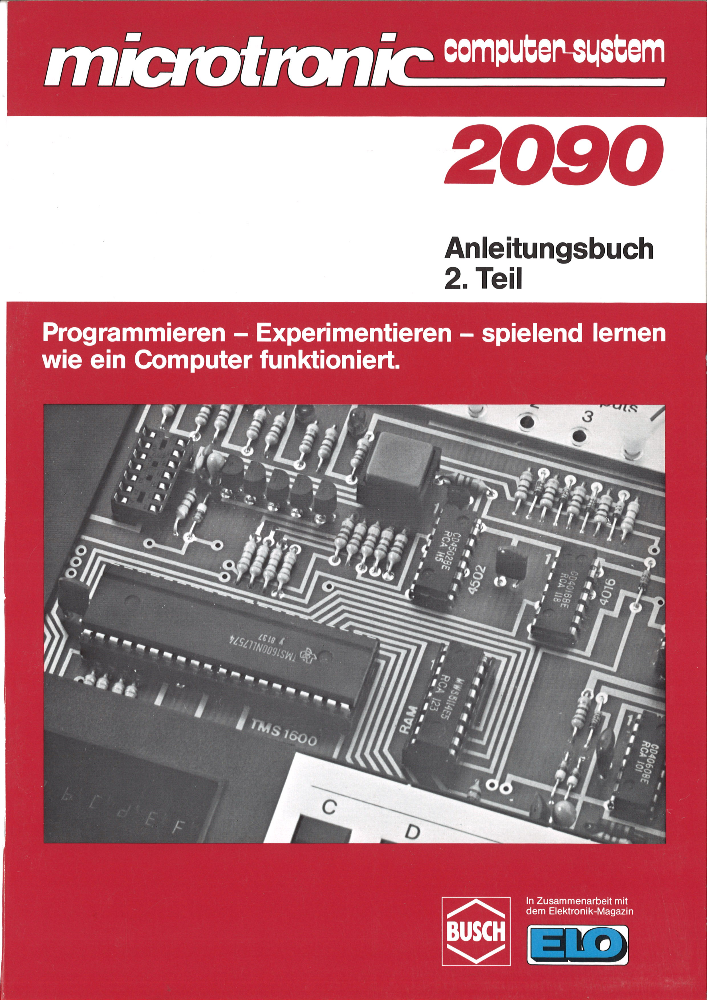
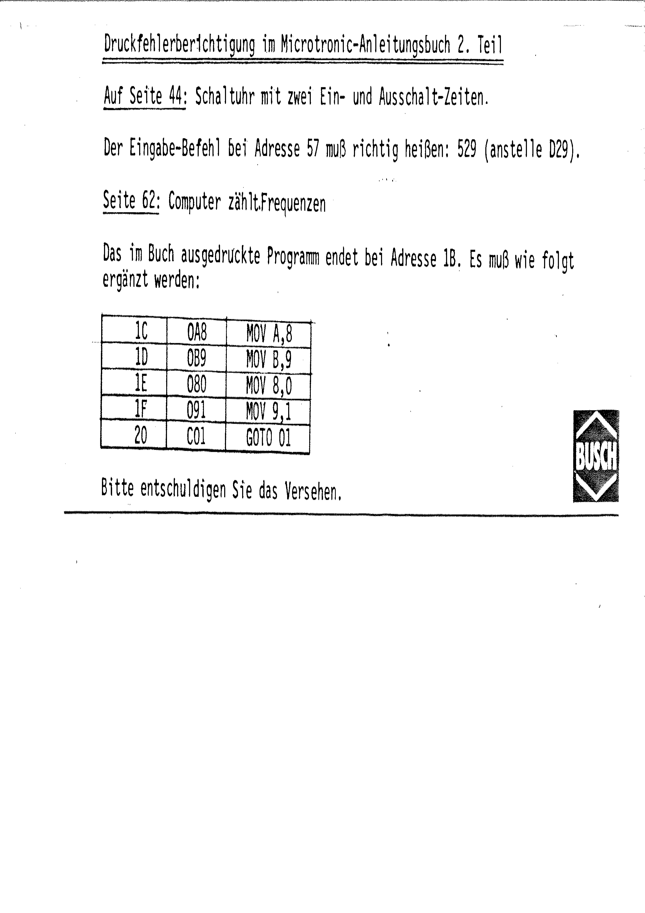
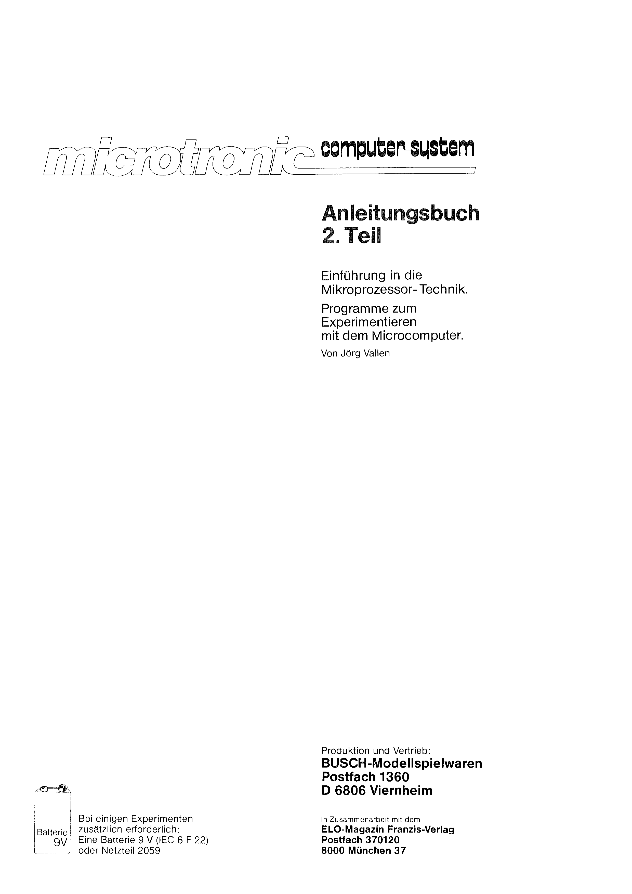
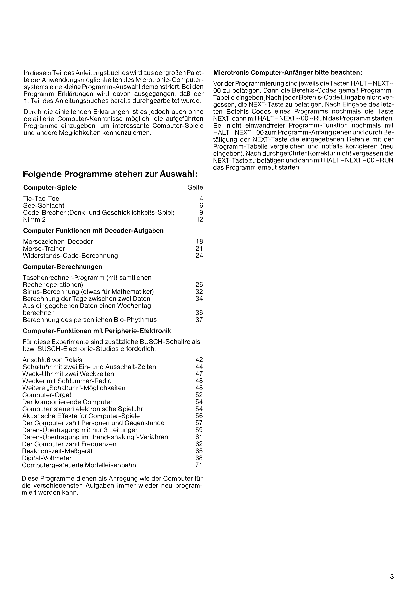
In this part of the instruction book, a small selection of programs is demonstrated from the large palette of application possibilities of the Microtronic computer system. The program explanations assume that Part 1 of the instruction book has already been worked through.
Thanks to the introductory explanations, however, it is also possible — even without detailed computer knowledge — to enter the listed programs in order to get to know interesting computer games and other possibilities.
| Computer Games | Page |
| Tic-Tac-Toe | 4 |
| Sea Battle | 6 |
| Code-Breaker (a thinking and skill game) | 9 |
| Nim 2 | 12 |
| Computer Functions with Decoder Tasks | |
| Morse-Code Decoder | 18 |
| Morse Trainer | 21 |
| Resistor Colour-Code Calculation | 24 |
| Computer Calculations | |
| Pocket-Calculator Program (with all arithmetic operations) | 26 |
| Sine Calculation (something for mathematicians) | 32 |
| Calculating the days between two dates | 34 |
| Calculating a weekday from entered dates | 36 |
| Calculating your personal biorhythm | 37 |
| Computer Functions with Peripheral Electronics | |
| These experiments require additional BUSCH switching relays or BUSCH Electronic Studios. | |
| Connecting relays | 42 |
| Timer with two switch-on and switch-off times | 44 |
| Alarm clock with two alarm times | 47 |
| Alarm clock with snooze radio | 48 |
| Further „timer“ possibilities | 48 |
| Computer organ | 52 |
| The composing computer | 54 |
| Computer controls an electronic music box | 54 |
| Acoustic effects for computer games | 56 |
| The computer counts people and objects | 57 |
| Data transmission with only 3 lines | 59 |
| Data transmission using the „handshaking“ method | 61 |
| The computer counts frequencies | 62 |
| Reaction-time meter | 65 |
| Digital voltmeter | 68 |
| Computer-controlled model railway | 71 |
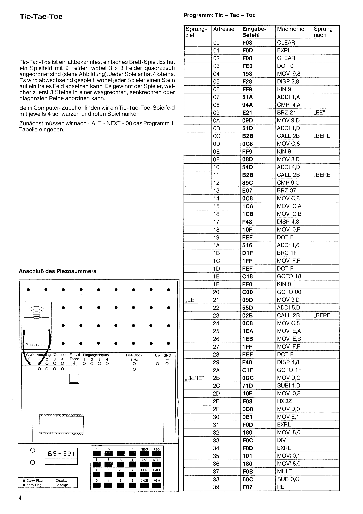
Tic-Tac-Toe is a well-known, simple board game. It has a playing field of 9 squares, with 3 × 3 squares arranged in a square (see illustration). Each player has 4 stones. Players take turns, and each player may place one stone on a free square. The winner is the player who is first to arrange 3 stones in a horizontal, vertical or diagonal row.
Among the computer accessories we find a Tic-Tac-Toe board with 4 black and 4 red playing pieces each.
First, after HALT – NEXT – 00, we must enter the program according to the table.
| Label | Addr. | Code | Mnemonic | Jump to |
|---|---|---|---|---|
| 00 | F08 | CLEAR | ||
| 01 | F0D | EXRL | ||
| 02 | F08 | CLEAR | ||
| 03 | FE0 | DOT 0 | ||
| 04 | 198 | MOVI 9,8 | ||
| 05 | F28 | DISP 2,8 | ||
| 06 | FF9 | KIN 9 | ||
| 07 | 51A | ADDI 1,A | ||
| 08 | 94A | CMPI 4,A | ||
| 09 | E21 | BRZ 21 | „EE“ | |
| 0A | 09D | MOV 9,D | ||
| 0B | 51D | ADDI 1,D | ||
| 0C | B2B | CALL 2B | „BERE“ | |
| 0D | 0C8 | MOV C,8 | ||
| 0E | FF9 | KIN 9 | ||
| 0F | 08D | MOV 8,D | ||
| 10 | 54D | ADDI 4,D | ||
| 11 | B2B | CALL 2B | „BERE“ | |
| 12 | 89C | CMP 9,C | ||
| 13 | E07 | BRZ 07 | ||
| 14 | 0C8 | MOV C,8 | ||
| 15 | 1CA | MOVI C,A | ||
| 16 | 1CB | MOVI C,B | ||
| 17 | F48 | DISP 4,8 | ||
| 18 | 10F | MOVI 0,F | ||
| 19 | FEF | DOT F | ||
| 1A | 516 | ADDI 1,6 | ||
| 1B | D1F | BRC 1F | ||
| 1C | 1FF | MOVI F,F | ||
| 1D | FEF | DOT F | ||
| 1E | C18 | GOTO 18 | ||
| 1F | FF0 | KIN 0 | ||
| 20 | C00 | GOTO 00 | ||
| „EE“ | 21 | 09D | MOV 9,D | |
| 22 | 55D | ADDI 5,D | ||
| 23 | B2B | CALL 2B | „BERE“ | |
| 24 | 0C8 | MOV C,8 | ||
| 25 | 1EA | MOVI E,A | ||
| 26 | 1EB | MOVI E,B | ||
| 27 | 1FF | MOVI F,F | ||
| 28 | FEF | DOT F | ||
| 29 | F48 | DISP 4,8 | ||
| 2A | C1F | GOTO 1F | ||
| „BERE“ | 2B | 0DC | MOV D,C | |
| 2C | 71D | SUBI 1,D | ||
| 2D | 10E | MOVI 0,E | ||
| 2E | F03 | HXDZ | ||
| 2F | 0D0 | MOV D,0 | ||
| 30 | 0E1 | MOV E,1 | ||
| 31 | F0D | EXRL | ||
| 32 | 180 | MOVI 8,0 | ||
| 33 | F0C | DIV | ||
| 34 | F0D | EXRL | ||
| 35 | 101 | MOVI 0,1 | ||
| 36 | 180 | MOVI 8,0 | ||
| 37 | F0B | MULT | ||
| 38 | 60C | SUB 0,C | ||
| 39 | F07 | RET |
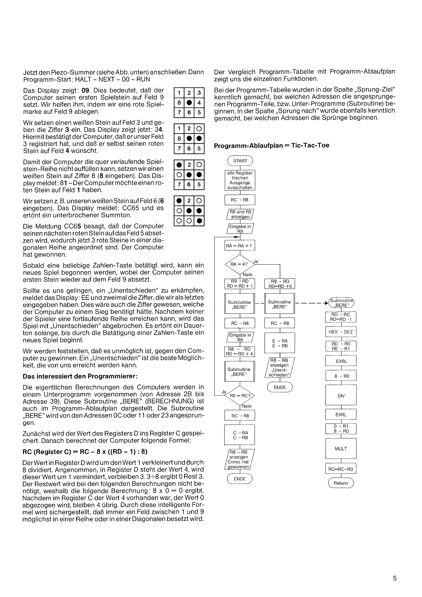
Comparing the program table with the program flow chart shows us the individual functions.
In the program table, the „Label“ column marks the addresses at which the jumped-to program parts or subroutines begin. The „Jump to“ column likewise marks the addresses at which the jumps begin.
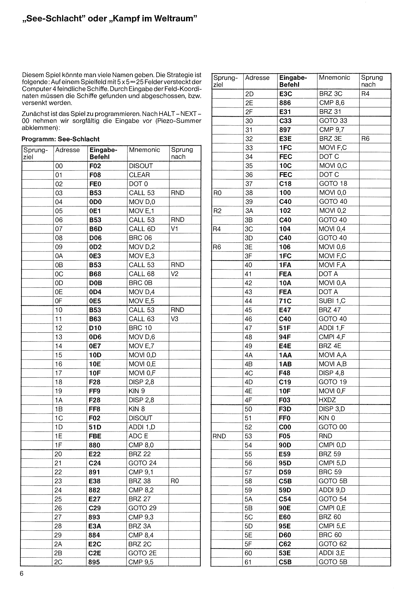
One could give this game many names. The strategy is as follows: on a playing field of 5 × 5 = 25 squares the computer hides 4 enemy ships. By entering the field coordinates, the ships must be found and shot down, i.e. sunk.
First, the game must be programmed. After HALT – NEXT – 00 we carefully make the entry (disconnect the piezo buzzer):
| Label | Addr. | Code | Mnemonic | Jump to |
|---|---|---|---|---|
| 00 | F02 | DISOUT | ||
| 01 | F08 | CLEAR | ||
| 02 | FE0 | DOT 0 | ||
| 03 | B53 | CALL 53 | „RND“ | |
| 04 | 0D0 | MOV D,0 | ||
| 05 | 0E1 | MOV E,1 | ||
| 06 | B53 | CALL 53 | „RND“ | |
| 07 | B6D | CALL 6D | „V1“ | |
| 08 | D06 | BRC 06 | ||
| 09 | 0D2 | MOV D,2 | ||
| 0A | 0E3 | MOV E,3 | ||
| 0B | B53 | CALL 53 | „RND“ | |
| 0C | B68 | CALL 68 | „V2“ | |
| 0D | D0B | BRC 0B | ||
| 0E | 0D4 | MOV D,4 | ||
| 0F | 0E5 | MOV E,5 | ||
| 10 | B53 | CALL 53 | „RND“ | |
| 11 | B63 | CALL 63 | „V3“ | |
| 12 | D10 | BRC 10 | ||
| 13 | 0D6 | MOV D,6 | ||
| 14 | 0E7 | MOV E,7 | ||
| 15 | 10D | MOVI 0,D | ||
| 16 | 10E | MOVI 0,E | ||
| 17 | 10F | MOVI 0,F | ||
| 18 | F28 | DISP 2,8 | ||
| 19 | FF9 | KIN 9 | ||
| 1A | F28 | DISP 2,8 | ||
| 1B | FF8 | KIN 8 | ||
| 1C | F02 | DISOUT | ||
| 1D | 51D | ADDI 1,D | ||
| 1E | FBE | ADC E | ||
| 1F | 880 | CMP 8,0 | ||
| 20 | E22 | BRZ 22 | ||
| 21 | C24 | GOTO 24 | ||
| 22 | 891 | CMP 9,1 | ||
| 23 | E38 | BRZ 38 | „R0“ | |
| 24 | 882 | CMP 8,2 | ||
| 25 | E27 | BRZ 27 | ||
| 26 | C29 | GOTO 29 | ||
| 27 | 893 | CMP 9,3 | ||
| 28 | E3A | BRZ 3A | ||
| 29 | 884 | CMP 8,4 | ||
| 2A | E2C | BRZ 2C | ||
| 2B | C2E | GOTO 2E | ||
| 2C | 895 | CMP 9,5 |
| Label | Addr. | Code | Mnemonic | Jump to |
|---|---|---|---|---|
| 2D | E3C | BRZ 3C | „R4“ | |
| 2E | 886 | CMP 8,6 | ||
| 2F | E31 | BRZ 31 | ||
| 30 | C33 | GOTO 33 | ||
| 31 | 897 | CMP 9,7 | ||
| 32 | E3E | BRZ 3E | „R6“ | |
| 33 | 1FC | MOVI F,C | ||
| 34 | FEC | DOT C | ||
| 35 | 10C | MOVI 0,C | ||
| 36 | FEC | DOT C | ||
| 37 | C18 | GOTO 18 | ||
| „R0“ | 38 | 100 | MOVI 0,0 | |
| 39 | C40 | GOTO 40 | ||
| „R2“ | 3A | 102 | MOVI 0,2 | |
| 3B | C40 | GOTO 40 | ||
| „R4“ | 3C | 104 | MOVI 0,4 | |
| 3D | C40 | GOTO 40 | ||
| „R6“ | 3E | 106 | MOVI 0,6 | |
| 3F | 1FC | MOVI F,C | ||
| 40 | 1FA | MOVI F,A | ||
| 41 | FEA | DOT A | ||
| 42 | 10A | MOVI 0,A | ||
| 43 | FEA | DOT A | ||
| 44 | 71C | SUBI 1,C | ||
| 45 | E47 | BRZ 47 | ||
| 46 | C40 | GOTO 40 | ||
| 47 | 51F | ADDI 1,F | ||
| 48 | 94F | CMPI 4,F | ||
| 49 | E4E | BRZ 4E | ||
| 4A | 1AA | MOVI A,A | ||
| 4B | 1AB | MOVI A,B | ||
| 4C | F48 | DISP 4,8 | ||
| 4D | C19 | GOTO 19 | ||
| 4E | 10F | MOVI 0,F | ||
| 4F | F03 | HXDZ | ||
| 50 | F3D | DISP 3,D | ||
| 51 | FF0 | KIN 0 | ||
| 52 | C00 | GOTO 00 | ||
| „RND“ | 53 | F05 | RND | |
| 54 | 90D | CMPI 0,D | ||
| 55 | E59 | BRZ 59 | ||
| 56 | 95D | CMPI 5,D | ||
| 57 | D59 | BRC 59 | ||
| 58 | C5B | GOTO 5B | ||
| 59 | 59D | ADDI 9,D | ||
| 5A | C54 | GOTO 54 | ||
| 5B | 90E | CMPI 0,E | ||
| 5C | E60 | BRZ 60 | ||
| 5D | 95E | CMPI 5,E | ||
| 5E | D60 | BRC 60 | ||
| 5F | C62 | GOTO 62 | ||
| 60 | 53E | ADDI 3,E | ||
| 61 | C5B | GOTO 5B |
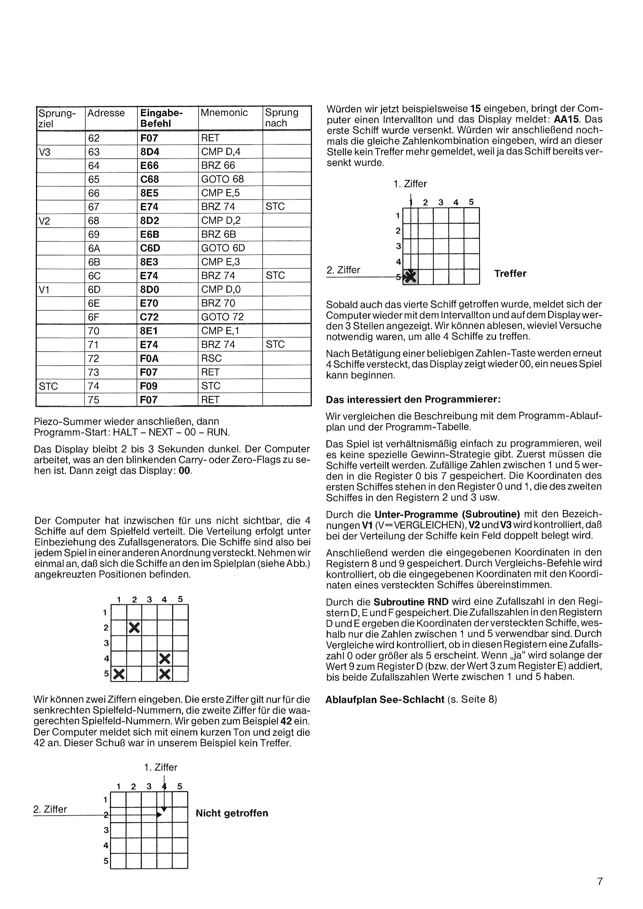
| Label | Addr. | Code | Mnemonic | Jump to |
|---|---|---|---|---|
| 62 | F07 | RET | ||
| „V3“ | 63 | 8D4 | CMP D,4 | |
| 64 | E66 | BRZ 66 | ||
| 65 | C68 | GOTO 68 | ||
| 66 | 8E5 | CMP E,5 | ||
| 67 | E74 | BRZ 74 | „STC“ | |
| „V2“ | 68 | 8D2 | CMP D,2 | |
| 69 | E6B | BRZ 6B | ||
| 6A | C6D | GOTO 6D | ||
| 6B | 8E3 | CMP E,3 | ||
| 6C | E74 | BRZ 74 | „STC“ | |
| „V1“ | 6D | 8D0 | CMP D,0 | |
| 6E | E70 | BRZ 70 | ||
| 6F | C72 | GOTO 72 | ||
| 70 | 8E1 | CMP E,1 | ||
| 71 | E74 | BRZ 74 | „STC“ | |
| 72 | F0A | RSC | ||
| 73 | F07 | RET | ||
| „STC“ | 74 | F09 | STC | |
| 75 | F07 | RET |
Reconnect the piezo buzzer, then start the program: HALT – NEXT – 00 – RUN.
The display stays dark for 2 to 3 seconds. The computer is working, as can be seen from the blinking Carry and Zero flags. The display then shows: 00.
Meanwhile the computer has — invisibly to us — distributed the 4 ships across the playing field. The distribution is made using the random-number generator. The ships are therefore hidden in a different arrangement in every game. Let us assume that the ships are located at the positions marked with crosses on the playing plan (see fig.).
We can enter two digits. The first digit applies only to the vertical playing-field numbers, the second digit to the horizontal playing-field numbers. As an example we enter 42. The computer responds with a short tone and shows 42. In our example this shot was not a hit.
If we were now to enter, for example, 15, the computer produces an interval tone and the display reports: AA15. The first ship has been sunk. If we then entered the same number combination once more, no hit would be reported at this point, because the ship has already been sunk.
As soon as the fourth ship has also been hit, the computer reports back with the interval tone and 3 digits are shown on the display. We can read off how many attempts were needed to hit all 4 ships.
After pressing any number key, 4 ships are hidden again, the display shows 00 once more, and a new game can begin.
We compare the description with the program flow chart and the program table.
The game is relatively easy to program, because there is no special winning strategy. First the ships must be distributed. Random numbers between 1 and 5 are stored in registers 0 to 7. The coordinates of the first ship are in registers 0 and 1, those of the second ship in registers 2 and 3, and so on.
By means of the subroutines designated V1 (V = COMPARE), V2 and V3, it is ensured that no square is occupied twice when the ships are distributed.
The entered coordinates are then stored in registers 8 and 9. Comparison commands are used to check whether the entered coordinates match the coordinates of a hidden ship.
By means of the subroutine RND a random number is stored in registers D, E and F. The random numbers in registers D and E yield the coordinates of the hidden ships, which is why only the numbers between 1 and 5 are usable. Comparisons are used to check whether a random number of 0 or greater than 5 appears in these registers. If „yes“, the value 9 is added to register D (or the value 3 to register E) for as long as it takes until both random numbers have values between 1 and 5.
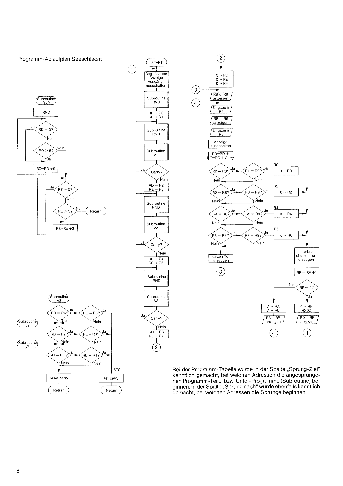
In the program table, the „Label“ column has been used to indicate the addresses at which the referenced program sections — or subroutines — begin. In the „Jump to“ column it has likewise been indicated at which addresses the jumps begin.
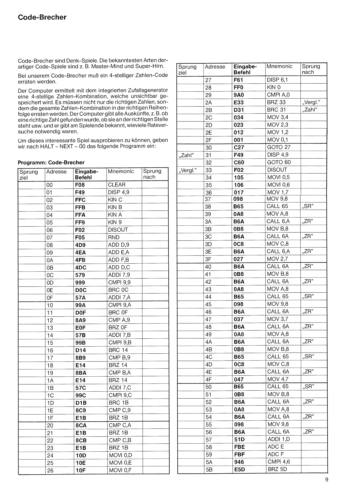
Code breakers are puzzle games. The best-known kinds of such code games are, for example, Master Mind and Super-Hirn.
In our Code Breaker, a 4-digit number code must be guessed.
Using its built-in random-number generator, the computer determines a 4-digit number combination, which is stored invisibly. It is not only the correct numbers that must be guessed, but the entire number combination in the correct order. The computer provides all information — for example whether a correct number has been found, whether it is in the correct position, and so on — and at the end of the game it announces how many guessing attempts were needed.
To be able to try out this interesting game, after HALT – NEXT – 00 we enter the following program:
| Label | Addr. | Code | Mnemonic | Jump to |
|---|---|---|---|---|
| 00 | F08 | CLEAR | ||
| 01 | F49 | DISP 4,9 | ||
| 02 | FFC | KIN C | ||
| 03 | FFB | KIN B | ||
| 04 | FFA | KIN A | ||
| 05 | FF9 | KIN 9 | ||
| 06 | F02 | DISOUT | ||
| 07 | F05 | RND | ||
| 08 | 4D9 | ADD D,9 | ||
| 09 | 4EA | ADD E,A | ||
| 0A | 4FB | ADD F,B | ||
| 0B | 4DC | ADD D,C | ||
| 0C | 579 | ADDI 7,9 | ||
| 0D | 999 | CMPI 9,9 | ||
| 0E | D0C | BRC 0C | ||
| 0F | 57A | ADDI 7,A | ||
| 10 | 99A | CMPI 9,A | ||
| 11 | D0F | BRC 0F | ||
| 12 | 8A9 | CMP A,9 | ||
| 13 | E0F | BRZ 0F | ||
| 14 | 57B | ADDI 7,B | ||
| 15 | 99B | CMPI 9,B | ||
| 16 | D14 | BRC 14 | ||
| 17 | 8B9 | CMP B,9 | ||
| 18 | E14 | BRZ 14 | ||
| 19 | 8BA | CMP B,A | ||
| 1A | E14 | BRZ 14 | ||
| 1B | 57C | ADDI 7,C | ||
| 1C | 99C | CMPI 9,C | ||
| 1D | D1B | BRC 1B | ||
| 1E | 8C9 | CMP C,9 | ||
| 1F | E1B | BRZ 1B | ||
| 20 | 8CA | CMP C,A | ||
| 21 | E1B | BRZ 1B | ||
| 22 | 8CB | CMP C,B | ||
| 23 | E1B | BRZ 1B | ||
| 24 | 10D | MOVI 0,D | ||
| 25 | 10E | MOVI 0,E | ||
| 26 | 10F | MOVI 0,F |
| Label | Addr. | Code | Mnemonic | Jump to |
|---|---|---|---|---|
| 27 | F61 | DISP 6,1 | ||
| 28 | FF0 | KIN 0 | ||
| 29 | 9A0 | CMPI A,0 | ||
| 2A | E33 | BRZ 33 | „Vergl.“ | |
| 2B | D31 | BRC 31 | „Zahl“ | |
| 2C | 034 | MOV 3,4 | ||
| 2D | 023 | MOV 2,3 | ||
| 2E | 012 | MOV 1,2 | ||
| 2F | 001 | MOV 0,1 | ||
| 30 | C27 | GOTO 27 | ||
| „Zahl“ | 31 | F49 | DISP 4,9 | |
| 32 | C60 | GOTO 60 | ||
| „Vergl.“ | 33 | F02 | DISOUT | |
| 34 | 105 | MOVI 0,5 | ||
| 35 | 106 | MOVI 0,6 | ||
| 36 | 017 | MOV 1,7 | ||
| 37 | 098 | MOV 9,8 | ||
| 38 | B65 | CALL 65 | „SR“ | |
| 39 | 0A8 | MOV A,8 | ||
| 3A | B6A | CALL 6A | „ZR“ | |
| 3B | 0B8 | MOV B,8 | ||
| 3C | B6A | CALL 6A | „ZR“ | |
| 3D | 0C8 | MOV C,8 | ||
| 3E | B6A | CALL 6A | „ZR“ | |
| 3F | 027 | MOV 2,7 | ||
| 40 | B6A | CALL 6A | „ZR“ | |
| 41 | 0B8 | MOV B,8 | ||
| 42 | B6A | CALL 6A | „ZR“ | |
| 43 | 0A8 | MOV A,8 | ||
| 44 | B65 | CALL 65 | „SR“ | |
| 45 | 098 | MOV 9,8 | ||
| 46 | B6A | CALL 6A | „ZR“ | |
| 47 | 037 | MOV 3,7 | ||
| 48 | B6A | CALL 6A | „ZR“ | |
| 49 | 0A8 | MOV A,8 | ||
| 4A | B6A | CALL 6A | „ZR“ | |
| 4B | 0B8 | MOV B,8 | ||
| 4C | B65 | CALL 65 | „SR“ | |
| 4D | 0C8 | MOV C,8 | ||
| 4E | B6A | CALL 6A | „ZR“ | |
| 4F | 047 | MOV 4,7 | ||
| 50 | B65 | CALL 65 | „SR“ | |
| 51 | 0B8 | MOV B,8 | ||
| 52 | B6A | CALL 6A | „ZR“ | |
| 53 | 0A8 | MOV A,8 | ||
| 54 | B6A | CALL 6A | „ZR“ | |
| 55 | 098 | MOV 9,8 | ||
| 56 | B6A | CALL 6A | „ZR“ | |
| 57 | 51D | ADDI 1,D | ||
| 58 | FBE | ADC E | ||
| 59 | FBF | ADC F | ||
| 5A | 946 | CMPI 4,6 | ||
| 5B | E5D | BRZ 5D |
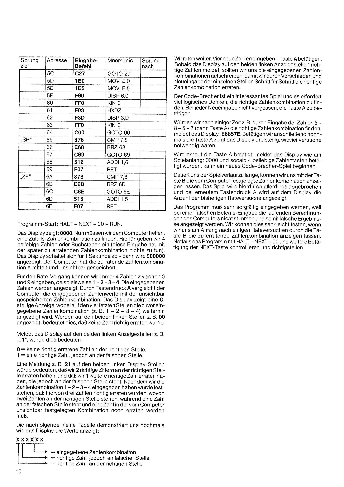
| Label | Addr. | Code | Mnemonic | Jump to |
|---|---|---|---|---|
| 5C | C27 | GOTO 27 | ||
| 5D | 1E0 | MOVI E,0 | ||
| 5E | 1E5 | MOVI E,5 | ||
| 5F | F60 | DISP 6,0 | ||
| 60 | FF0 | KIN 0 | ||
| 61 | F03 | HXDZ | ||
| 62 | F3D | DISP 3,D | ||
| 63 | FF0 | KIN 0 | ||
| 64 | C00 | GOTO 00 | ||
| „SR“ | 65 | 878 | CMP 7,8 | |
| 66 | E68 | BRZ 68 | ||
| 67 | C69 | GOTO 69 | ||
| 68 | 516 | ADDI 1,6 | ||
| 69 | F07 | RET | ||
| „ZR“ | 6A | 878 | CMP 7,8 | |
| 6B | E6D | BRZ 6D | ||
| 6C | C6E | GOTO 6E | ||
| 6D | 515 | ADDI 1,5 | ||
| 6E | F07 | RET |
Program start: HALT – NEXT – 00 – RUN.
The display shows: 0000. Now we have to help the computer find a random number combination. To do this we enter 4 arbitrary numbers or letters (this entry has nothing to do with the number combination to be guessed later). The display switches off for 1 second – then 000000 is shown. The computer has determined the number combination to be guessed and stored it invisibly.
For the guessing process we can always enter 4 numbers between 0 and 9, for example 1 – 2 – 3 – 4. The entered numbers are displayed. By pressing key A, the computer compares the entered number values with the invisibly stored number combination. The display shows a 6-digit readout, in which the four rightmost digits continue to show the previously entered number combination (e.g. 1 – 2 – 3 – 4). If, for example, 00 is shown on the two left digits, this means that no number was guessed correctly.
If the display shows, for example, „01“ on the two left digit positions, this would mean:
0 = no correctly guessed number in the correct position.
1 = one correct number, but in the wrong position.
A reading of, for example, 21 on the two left display positions would mean that we have guessed 2 correct digits in the correct position, and that we have guessed 1 further correct number which, however, is in the wrong position. After we have entered the number combination 1 – 2 – 3 – 4, it would be established that three of these numbers were guessed correctly, of which two are in the correct position, while one is in the wrong position and one number in the combination invisibly fixed by the computer still has to be guessed.
The following small table once again demonstrates to us how the display shows the values:
We keep guessing. Enter four new numbers – press key A. As soon as the display reports correct numbers on the two left digit positions, we should write down the entered number combinations, so that by shifting and re-entering the individual digits we can guess the correct number combination step by step.
The Code Breaker is an interesting game and it requires a lot of logical thinking to find the correct number combination. With every new entry, do not forget to press key A.
If after some time we were to find the correct number combination, for example by entering the numbers 6 – 8 – 5 – 7 (then key A), the display reports: E6857E. If we then press key A once more, the display shows in three digits how many attempts were needed.
If key A is pressed again, the display reports, as at the start of the game: 0000, and as soon as 4 arbitrary number keys have been pressed, a new Code Breaker game can begin.
If the course of the game takes too long for us, we can have the computer display the number combination it has fixed by pressing key B. However, this aborts the game, and when key A is pressed again the number of guessing attempts made so far is shown on the display.
The program must be entered very carefully, because if a command is entered incorrectly the computer’s ongoing calculations will not be right and thus incorrect results will be displayed. We can test this very easily if, at the beginning after a few guessing attempts, we have the number combination to be guessed displayed by pressing key B. If necessary, check and correct the program with HALT – NEXT – 00 and further presses of the NEXT key.
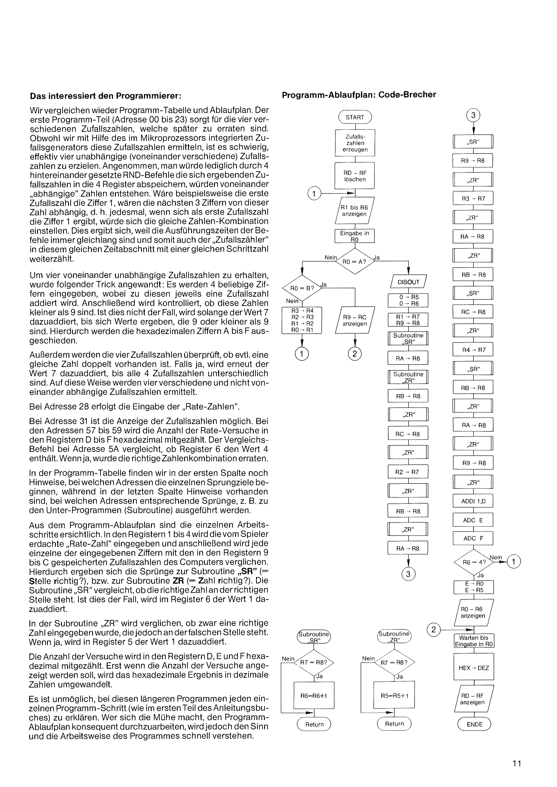
We again compare the program table and the flow chart. The first part of the program (addresses 00 to 23) provides the four different random numbers that have to be guessed later. Although we determine these random numbers with the help of the random-number generator integrated in the microprocessor, it is difficult to effectively obtain four independent (mutually different) random numbers. Suppose one were simply to store the resulting random numbers in the 4 registers by means of 4 RND commands placed one after another – then numbers „dependent“ on one another would arise. If, for example, the first random number were the digit 1, the next 3 digits would depend on this number; i.e. every time the first random number turns out to be the digit 1, the same number combination would result. This happens because the execution times of the commands are always equal in length, and so the „random counter“ also counts on by the same number of steps within this same time interval.
To obtain four mutually independent random numbers, the following trick was used: 4 arbitrary digits are entered, and to each of these a random number is added. It is then checked whether these numbers are smaller than 9. If this is not the case, the value 7 is added repeatedly until values result that are 9 or smaller than 9. In this way the hexadecimal digits A to F are eliminated.
In addition, the four random numbers are checked to see whether perhaps an identical number is present twice. If so, the value 7 is again added until all 4 random numbers are different. In this way four different and mutually independent random numbers are determined.
At address 28, the „guessing numbers“ are entered.
At address 31 the random numbers can be displayed. At addresses 57 to 59 the number of guessing attempts is counted hexadecimally in registers D to F. The comparison command at address 5A checks whether register 6 contains the value 4. If so, the correct number combination has been guessed.
In the program table, the first column also gives notes on the addresses at which the individual jump targets begin, while the last column contains notes on the addresses at which corresponding jumps – for example to the subroutines – are carried out.
The individual working steps can be seen from the program flow chart. In registers 1 to 4 the „guessing number“ devised by the player is entered, and then each individual entered digit is compared with the computer’s random numbers stored in registers 9 to C. This gives rise to the jumps to the subroutine „SR“ (= position correct?), or to the subroutine „ZR“ (= number correct?). The subroutine „SR“ checks whether the correct number is in the correct position. If this is the case, the value 1 is added to register 6.
In the subroutine „ZR“ it is checked whether a correct number has indeed been entered but is in the wrong position. If so, the value 1 is added to register 5.
The number of attempts is counted hexadecimally in registers D, E and F. Only when the number of attempts is to be displayed is the hexadecimal result converted into decimal numbers.
It is impossible, with these longer programs, to explain every single program step (as in the first part of the instruction book). Anyone who takes the trouble to work through the program flow chart consistently, however, will quickly understand the meaning and the operation of the program.
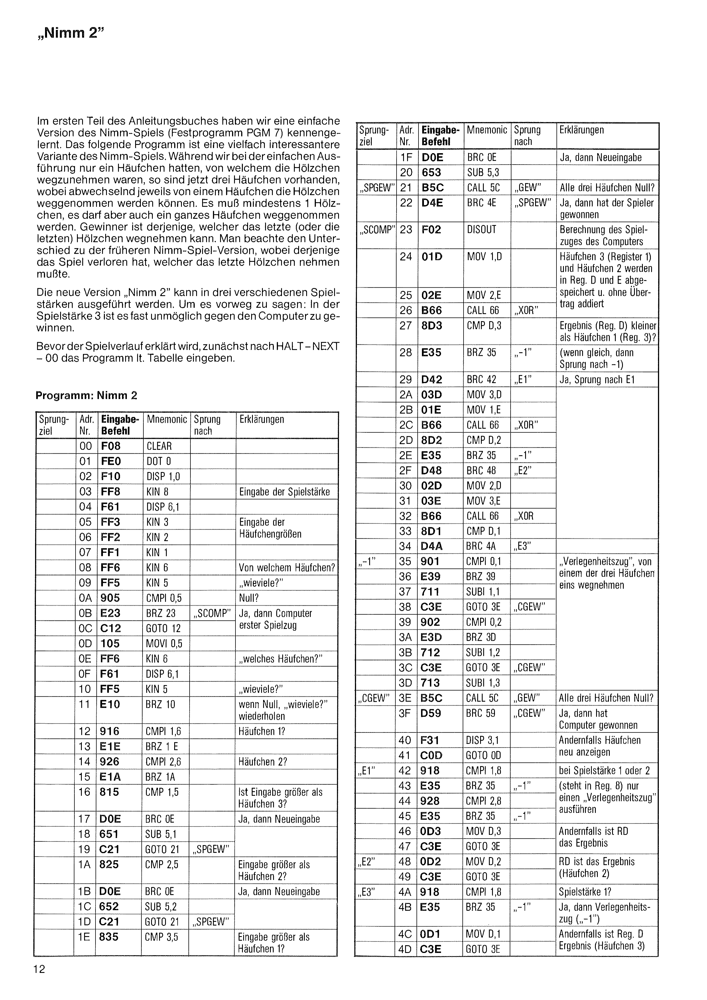
In the first part of the instruction book we got to know a simple version of the Nim game (fixed program PGM 7). The following program is a far more interesting variant of the Nim game. Whereas in the simple version we had only one pile from which the matchsticks were to be removed, there are now three piles, from which the matchsticks can be removed alternately, one pile at a time. At least 1 matchstick must be taken, but a whole pile may also be removed. The winner is the one who can take the last (or the last few) matchsticks. Note the difference from the earlier Nim-game version, in which the player who had to take the last matchstick lost the game.
The new version „Take 2“ can be played at three different skill levels. To say it in advance: at skill level 3 it is almost impossible to win against the computer.
Before the course of the game is explained, first enter the program according to the table after HALT – NEXT – 00.
| Label | Adr. | Code | Mnemonic | Jump to | Explanation |
|---|---|---|---|---|---|
| 00 | F08 | CLEAR | |||
| 01 | FE0 | DOT 0 | |||
| 02 | F10 | DISP 1,0 | |||
| 03 | FF8 | KIN 8 | Entering the skill level | ||
| 04 | F61 | DISP 6,1 | |||
| 05 | FF3 | KIN 3 | Entering the pile sizes | ||
| 06 | FF2 | KIN 2 | |||
| 07 | FF1 | KIN 1 | |||
| 08 | FF6 | KIN 6 | From which pile? | ||
| 09 | FF5 | KIN 5 | „how many?“ | ||
| 0A | 905 | CMPI 0,5 | Zero? | ||
| 0B | E23 | BRZ 23 | „SCOMP“ | Yes, then the computer’s first move | |
| 0C | C12 | GOTO 12 | |||
| 0D | 105 | MOVI 0,5 | |||
| 0E | FF6 | KIN 6 | „which pile?“ | ||
| 0F | F61 | DISP 6,1 | |||
| 10 | FF5 | KIN 5 | „how many?“ | ||
| 11 | E10 | BRZ 10 | if zero, repeat „how many?“ | ||
| 12 | 916 | CMPI 1,6 | Pile 1? | ||
| 13 | E1E | BRZ 1E | |||
| 14 | 926 | CMPI 2,6 | Pile 2? | ||
| 15 | E1A | BRZ 1A | |||
| 16 | 815 | CMP 1,5 | Is the entry greater than pile 3? | ||
| 17 | D0E | BRC 0E | Yes, then re-enter | ||
| 18 | 651 | SUB 5,1 | |||
| 19 | C21 | GOTO 21 | „SPGEW“ | ||
| 1A | 825 | CMP 2,5 | Entry greater than pile 2? | ||
| 1B | D0E | BRC 0E | Yes, then re-enter | ||
| 1C | 652 | SUB 5,2 | |||
| 1D | C21 | GOTO 21 | „SPGEW“ | ||
| 1E | 835 | CMP 3,5 | Entry greater than pile 1? |
| Label | Adr. | Code | Mnemonic | Jump to | Explanation |
|---|---|---|---|---|---|
| 1F | D0E | BRC 0E | Yes, then re-enter | ||
| 20 | 653 | SUB 5,3 | |||
| „SPGEW“ | 21 | B5C | CALL 5C | „GEW“ | All three piles zero? |
| 22 | D4E | BRC 4E | „SPGEW“ | Yes, then the player has won | |
| „SCOMP“ | 23 | F02 | DISOUT | Calculation of the computer’s move | |
| 24 | 01D | MOV 1,D | Pile 3 (register 1) and pile 2 are stored in reg. D and E and added without carry | ||
| 25 | 02E | MOV 2,E | |||
| 26 | B66 | CALL 66 | „XOR“ | ||
| 27 | 8D3 | CMP D,3 | Result (reg. D) smaller than pile 1 (reg. 3)? | ||
| 28 | E35 | BRZ 35 | „-1“ | (if equal, then jump to „-1“) | |
| 29 | D42 | BRC 42 | „E1“ | Yes, jump to „E1“ | |
| 2A | 03D | MOV 3,D | |||
| 2B | 01E | MOV 1,E | |||
| 2C | B66 | CALL 66 | „XOR“ | ||
| 2D | 8D2 | CMP D,2 | |||
| 2E | E35 | BRZ 35 | „-1“ | ||
| 2F | D48 | BRC 48 | „E2“ | ||
| 30 | 02D | MOV 2,D | |||
| 31 | 03E | MOV 3,E | |||
| 32 | B66 | CALL 66 | „XOR“ | ||
| 33 | 8D1 | CMP D,1 | |||
| 34 | D4A | BRC 4A | „E3“ | ||
| „-1“ | 35 | 901 | CMPI 0,1 | „Default move“: take one away from one of the three piles | |
| 36 | E39 | BRZ 39 | |||
| 37 | 711 | SUBI 1,1 | |||
| 38 | C3E | GOTO 3E | „CGEW“ | ||
| 39 | 902 | CMPI 0,2 | |||
| 3A | E3D | BRZ 3D | |||
| 3B | 712 | SUBI 1,2 | |||
| 3C | C3E | GOTO 3E | „CGEW“ | ||
| 3D | 713 | SUBI 1,3 | |||
| „CGEW“ | 3E | B5C | CALL 5C | „GEW“ | All three piles zero? |
| 3F | D59 | BRC 59 | „CGEW“ | Yes, then the computer has won | |
| 40 | F31 | DISP 3,1 | Otherwise display the piles anew | ||
| 41 | C0D | GOTO 0D | |||
| „E1“ | 42 | 918 | CMPI 1,8 | at skill level 1 or 2 (which is in register 8) carry out only one „default move“ | |
| 43 | E35 | BRZ 35 | „-1“ | ||
| 44 | 928 | CMPI 2,8 | |||
| 45 | E35 | BRZ 35 | „-1“ | ||
| 46 | 0D3 | MOV D,3 | Otherwise RD is the result | ||
| 47 | C3E | GOTO 3E | |||
| „E2“ | 48 | 0D2 | MOV D,2 | RD is the result (pile 2) | |
| 49 | C3E | GOTO 3E | |||
| „E3“ | 4A | 918 | CMPI 1,8 | Skill level 1? | |
| 4B | E35 | BRZ 35 | „-1“ | Yes, then default move („-1“) | |
| 4C | 0D1 | MOV D,1 | Otherwise reg. D is the result (pile 3) | ||
| 4D | C3E | GOTO 3E |
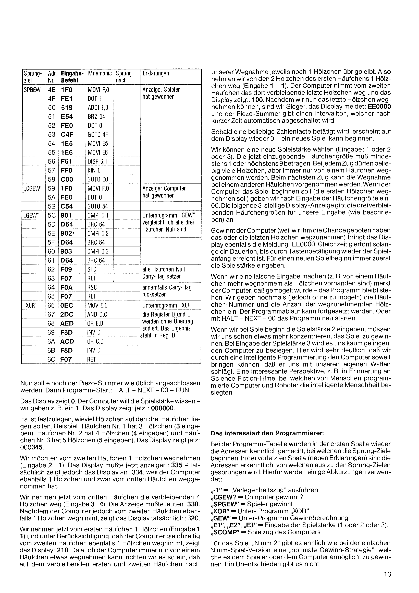
| Label | Adr. | Code | Mnemonic | Jump to | Explanation |
|---|---|---|---|---|---|
| „SPGEW“ | 4E | 1F0 | MOVI F,0 | Display: player has won | |
| 4F | FE1 | DOT 1 | |||
| 50 | 519 | ADDI 1,9 | |||
| 51 | E54 | BRZ 54 | |||
| 52 | FE0 | DOT 0 | |||
| 53 | C4F | GOTO 4F | |||
| 54 | 1E5 | MOVI E,5 | |||
| 55 | 1E6 | MOVI E,6 | |||
| 56 | F61 | DISP 6,1 | |||
| 57 | FF0 | KIN 0 | |||
| 58 | C00 | GOTO 00 | |||
| „CGEW“ | 59 | 1F0 | MOVI F,0 | Display: computer has won | |
| 5A | FE0 | DOT 0 | |||
| 5B | C54 | GOTO 54 | |||
| „GEW“ | 5C | 901 | CMPI 0,1 | Subroutine „GEW“ checks whether all three piles are zero | |
| 5D | D64 | BRC 64 | |||
| 5E | 902 | CMPI 0,2 | |||
| 5F | D64 | BRC 64 | |||
| 60 | 903 | CMPI 0,3 | |||
| 61 | D64 | BRC 64 | |||
| 62 | F09 | STC | all piles zero: set carry flag | ||
| 63 | F07 | RET | |||
| 64 | F0A | RSC | otherwise reset carry flag | ||
| 65 | F07 | RET | |||
| „XOR“ | 66 | 0EC | MOV E,C | Subroutine „XOR“: registers D and E are added without carry. The result is in reg. D | |
| 67 | 2DC | AND D,C | |||
| 68 | AED | OR E,D | |||
| 69 | F8D | INV D | |||
| 6A | ACD | OR C,D | |||
| 6B | F8D | INV D | |||
| 6C | F07 | RET |
Now the piezo buzzer should be connected as usual. Then start the program: HALT – NEXT – 00 – RUN.
The display shows 0. The computer wants to know the skill level – we enter, for example, a 1. The display now shows: 000000.
It must be specified how many matchsticks are to lie on the three piles. Example: pile no. 1 has 3 matchsticks (enter 3). Pile no. 2 has 4 matchsticks (enter 4) and pile no. 3 has 5 matchsticks (enter 5). The display now shows 000345.
We want to take 1 matchstick from the second pile (entry 2 1). The display should now show: 335 – but in fact the display shows: 334, because the computer has likewise taken 1 matchstick, namely from the third pile.
We now take the remaining 4 matchsticks from the third pile (entry 3 4). The display should read: 330. But after the computer likewise takes 1 matchstick from the second pile, the display actually shows: 320.
We now take 1 matchstick from the first pile (entry 1 1) and, taking into account that the computer simultaneously takes 1 matchstick from the second pile as well, the display shows: 210. Since the computer too can only ever take from one pile, we arrange things so that, after our removal, 1 matchstick remains on each of the remaining first and second piles.
So we take 1 of the 2 matchsticks of the first pile away (entry 1 1). The computer takes the last remaining matchstick from the second pile, and the display shows: 100. Now that we can take the last matchstick, we are the winner; the display reports: EE0000, and the piezo buzzer sounds an interval tone, which is switched off automatically after a short time.
As soon as any number key is pressed, 0 appears on the display again – a new game can begin.
We can choose a new skill level (entry: 1 or 2 or 3). The pile size to be entered now must be at least 1 or at most 9. On each move, any number of matchsticks may be taken, but always only from one pile. On the next move the removal can be made from a different pile. If the computer is to begin the game (to take the first matchsticks), after entering the pile size we enter: 00. The following 3-digit display then shows the three remaining pile sizes for our entry (as described).
If the computer wins (because we have given it the chance to take the last matchstick(s)), the display likewise shows the message: EE0000. At the same time a continuous tone sounds until the start of the game is reached again by pressing a key. For a new start of the game, always enter the skill level first.
If we make an incorrect entry (e.g. taking more matchsticks from a pile than there are), the computer notices that cheating has occurred – the program stops. We enter the pile number and the number of matchsticks to be removed once more (but without cheating). The program run can then be continued. Or restart the program with HALT – NEXT – 00.
If we enter skill level 2 at the start of the game, we already have to concentrate a little more to win the game. If skill level 3 is entered, we will hardly succeed in beating the computer. Here it becomes very clear that, through intelligent programming, we can bring the computer to the point where it beats us with our own weapons. An interesting prospect – reminiscent, for example, of science-fiction films in which computers and robots programmed by humans defeated intelligent humankind.
In the program table, the first column again marks the addresses at which the jump targets begin. In the second-to-last column (next to Explanations) the addresses can be recognized from which the jumps to the jump targets are made. For this, a few abbreviations are used:
For the game „Take 2“, similar to the simple Nim-game version, there is an „optimal winning strategy“ which allows either the player or the computer to win. There is no draw.
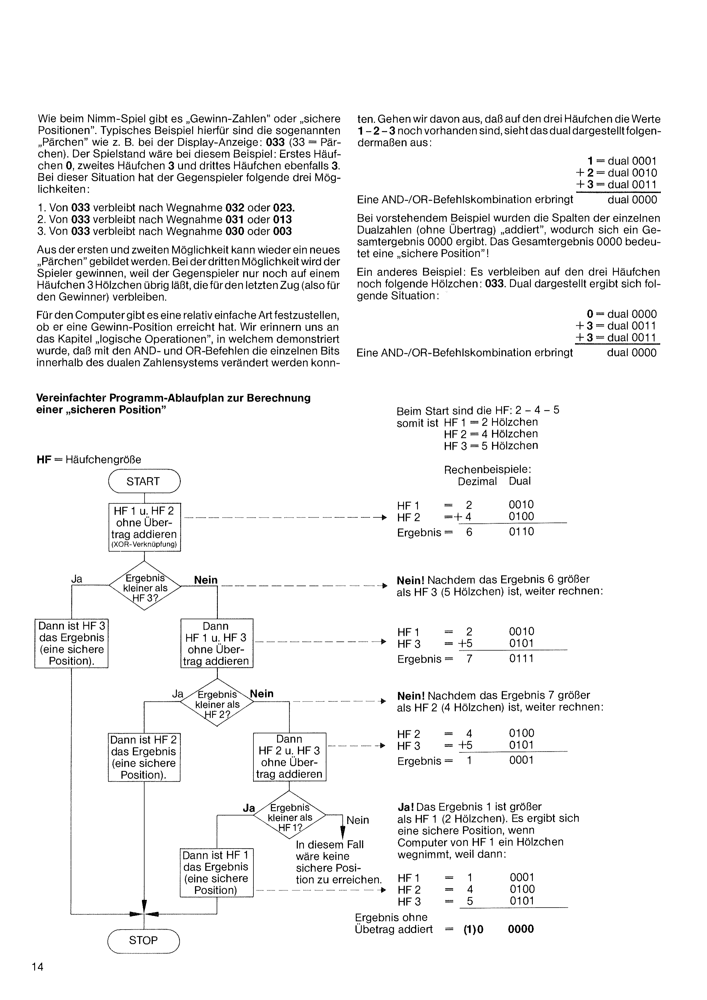
As in the Nim game, there are „winning numbers“ or „safe positions“. A typical example of these are the so-called „pairs“, as for instance with the display reading: 033 (33 = pair). In this example the game state would be: first pile 0, second pile 3 and third pile likewise 3. In this situation the opposing player has the following three options:
From the first and second options a new „pair“ can again be formed. With the third option the player will win, because the opponent leaves only 3 matchsticks remaining on one pile, which remain for the last move (i.e. for the winner).
For the computer there is a relatively simple way to determine whether it has reached a winning position. We recall the chapter „logical operations“, in which it was demonstrated that with the AND and OR commands the individual bits within the binary number system can be changed.
Let us assume that the values 1 – 2 – 3 are still present on the three piles; represented in binary, this looks as follows:
| 1 | = binary | 0001 | |
| + | 2 | = binary | 0010 |
| + | 3 | = binary | 0011 |
| binary | 0000 |
In the preceding example the columns of the individual binary numbers were „added“ (without carry), which yields an overall result of 0000. The overall result 0000 means a „safe position“!
Another example: the following matchsticks still remain on the three piles: 033. Represented in binary, the following situation results:
| 0 | = binary | 0000 | |
| + | 3 | = binary | 0011 |
| + | 3 | = binary | 0011 |
| binary | 0000 |
At the start the piles are: 2 – 4 – 5, so HF 1 = 2 matchsticks, HF 2 = 4 matchsticks, HF 3 = 5 matchsticks.
| HF 1 | = | 2 | 0010 |
| HF 2 | = + | 4 | 0100 |
| Result | = | 6 | 0110 |
No! Since the result 6 is greater than HF 3 (5 matchsticks), continue calculating:
| HF 1 | = | 2 | 0010 |
| HF 3 | = + | 5 | 0101 |
| Result | = | 7 | 0111 |
No! Since the result 7 is greater than HF 2 (4 matchsticks), continue calculating:
| HF 2 | = | 4 | 0100 |
| HF 3 | = + | 5 | 0101 |
| Result | = | 1 | 0001 |
Yes! The result 1 is greater than HF 1 (2 matchsticks). A safe position results if the computer takes one matchstick from HF 1, because then:
| HF 1 | = | 1 | 0001 |
| HF 2 | = | 4 | 0100 |
| HF 3 | = | 5 | 0101 |
| Result | = | (1)0 | 0000 |
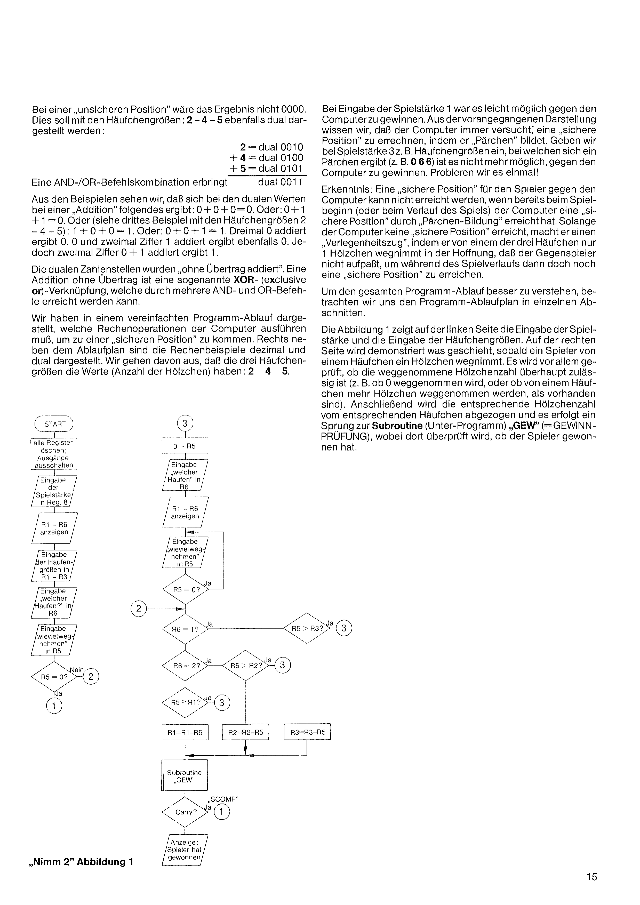
With an „unsafe position“ the result would not be 0000. This is to be shown likewise in binary with the pile sizes: 2 – 4 – 5:
| 2 | = binary | 0010 | |
| + | 4 | = binary | 0100 |
| + | 5 | = binary | 0101 |
| binary | 0011 |
From the examples we see that with the binary values, an „addition“ gives the following: 0 + 0 + 0 = 0. Or: 0 + 1 + 1 = 0. Or (see the third example with pile sizes 2 – 4 – 5): 1 + 0 + 0 = 1. Or: 0 + 0 + 1 = 1. Three times 0 added gives 0. A 0 and the digit 1 twice, added together, likewise gives 0. However, the digit 0 twice plus a 1 added together gives 1.
The binary digit positions were „added without carry“. An addition without carry is a so-called XOR (exclusive or) operation, which can be achieved by means of several AND and OR commands.
In a simplified program flow we have shown which arithmetic operations the computer must carry out in order to arrive at a „safe position“. To the right of the flow chart, the calculation examples are shown in decimal and binary. We assume that the three pile sizes have the values (number of matchsticks): 2 4 5.
When skill level 1 was entered, it was easily possible to win against the computer. From the preceding presentation we know that the computer always tries to compute a „safe position“ by forming „pairs“. If at skill level 3 we enter, for example, pile sizes for which a pair results (e.g. 0 6 6), it is no longer possible to win against the computer. Let us try it out!
Insight: A „safe position“ for the player against the computer cannot be reached if, already at the start of the game (or during the course of the game), the computer has reached a „safe position“ through „pair formation“. As long as the computer does not reach a „safe position“, it makes a „default move“ by taking only 1 matchstick from one of the three piles, in the hope that the opponent does not pay attention, so as to still reach a „safe position“ during the course of play after all.
To better understand the entire program flow, let us look at the program flow chart in individual sections.
Figure 1 shows, on the left side, the entry of the skill level and the entry of the pile sizes. On the right side it is demonstrated what happens as soon as a player takes a matchstick from a pile. Above all it is checked whether the removed number of matchsticks is permissible at all (e.g. whether 0 is taken, or whether more matchsticks are taken from a pile than are present). Then the corresponding number of matchsticks is subtracted from the corresponding pile, and a jump to the subroutine (subprogram) „GEW“ (= WIN-CHECK) takes place, where it is checked whether the player has won.
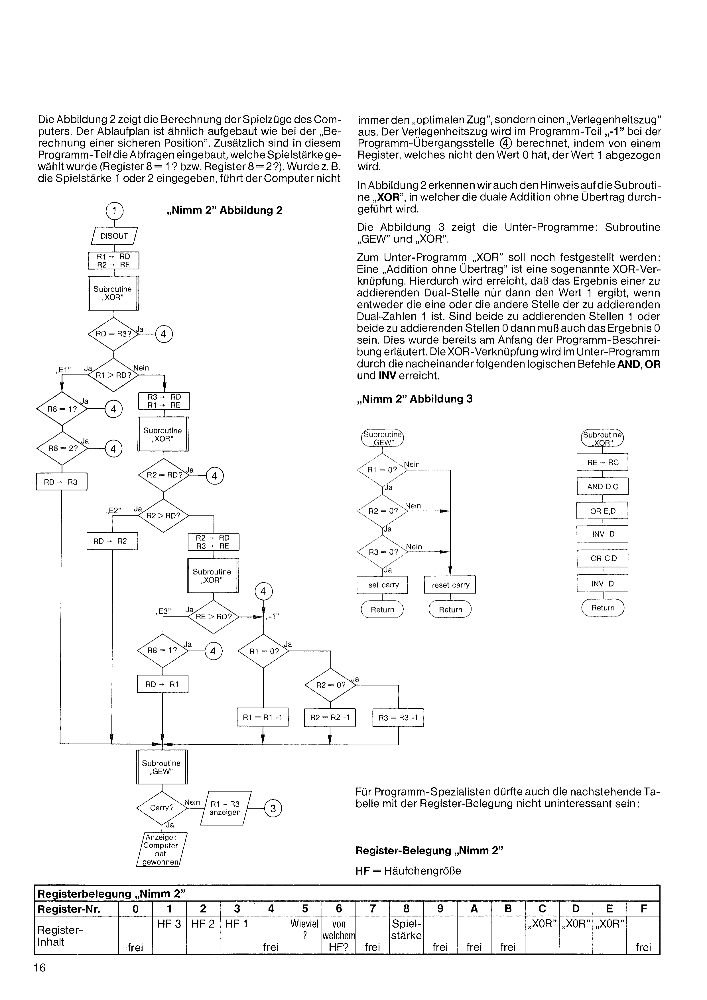
Figure 2 shows the calculation of the computer’s moves. The flow chart is constructed similarly to that for the „calculation of a safe position“. Additionally, in this part of the program the queries are built in as to which skill level was chosen (register 8 = 1? or register 8 = 2?). If, for example, skill level 1 or 2 was entered, the computer does not
always make the „optimal move“, but rather a „default move“. The default move is calculated in program part „-1“ at the program transition point ⑤, by subtracting the value 1 from a register that does not have the value 0.
In Figure 2 we also recognize the reference to the subroutine „XOR“, in which the binary addition without carry is carried out.
Figure 3 shows the subprograms: subroutine „GEW“ and „XOR“.
Regarding the subprogram „XOR“ the following should also be noted: An „addition without carry“ is a so-called XOR operation. By this it is achieved that the result of a binary digit to be added gives the value 1 only if either the one or the other digit of the binary numbers to be added is 1. If both digits to be added are 1, or both digits to be added are 0, then the result must also be 0. This was already explained at the beginning of the program description. The XOR operation is achieved in the subprogram by the successive logical commands AND, OR and INV.
For program specialists, the following table with the register assignment should also not be uninteresting:
| Register assignment „Take 2“ | ||||||||||||||||
| Register no. | 0 | 1 | 2 | 3 | 4 | 5 | 6 | 7 | 8 | 9 | A | B | C | D | E | F |
| Register content | free | HF 3 | HF 2 | HF 1 | free | how many? | from which pile? | free | skill level | free | free | free | „XOR“ | „XOR“ | „XOR“ | free |
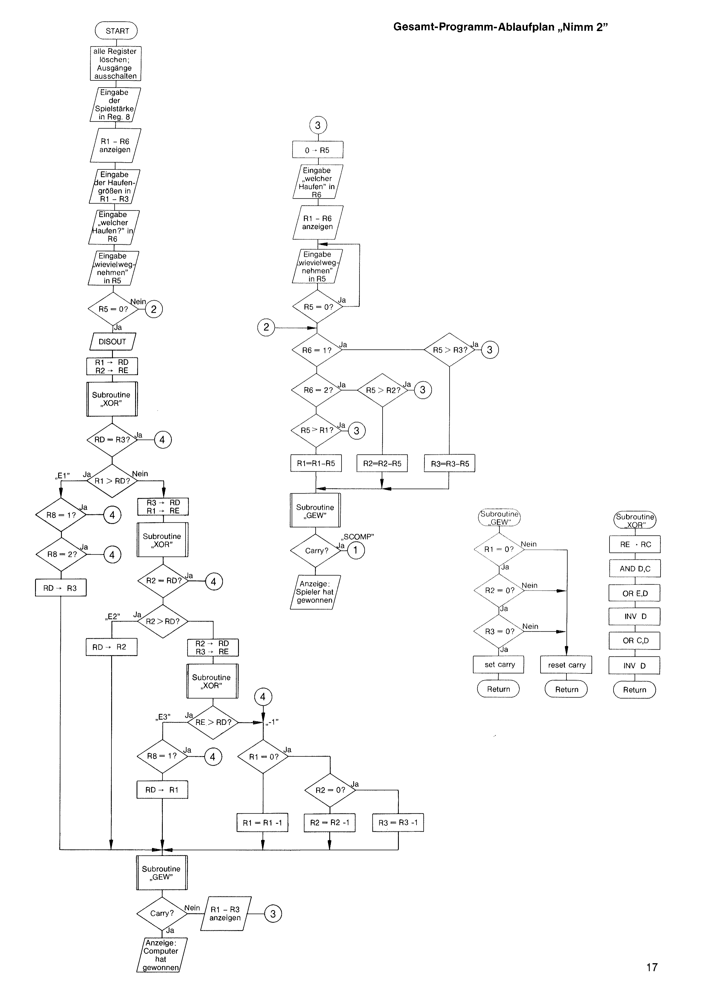
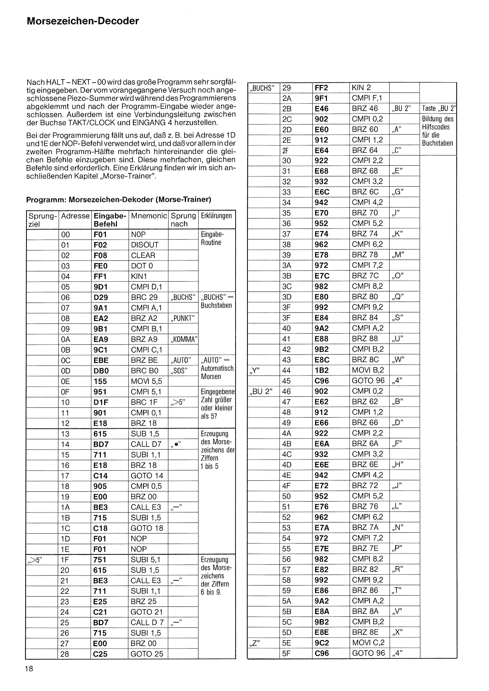
After HALT – NEXT – 00 the large program is entered very carefully. The piezo buzzer still connected from the previous experiment is disconnected during programming and reconnected after the program entry. In addition, a connecting lead is to be made between the TAKT/CLOCK socket and INPUT 4.
During programming we notice that, for example, at addresses 1D and 1E the NOP command is used, and that especially in the second half of the program the same commands have to be entered several times in succession. These repeated, identical commands are necessary. An explanation is found in the following chapter „Morse Trainer“.
| Label | Adr. | Code | Mnemonic | Jump to | Explanation |
|---|---|---|---|---|---|
| 00 | F01 | NOP | Input routine | ||
| 01 | F02 | DISOUT | |||
| 02 | F08 | CLEAR | |||
| 03 | FE0 | DOT 0 | |||
| 04 | FF1 | KIN 1 | |||
| 05 | 9D1 | CMPI D,1 | |||
| 06 | D29 | BRC 29 | „BUCHS“ | „BUCHS“ = letters | |
| 07 | 9A1 | CMPI A,1 | |||
| 08 | EA2 | BRZ A2 | „PUNKT“ | ||
| 09 | 9B1 | CMPI B,1 | |||
| 0A | EA9 | BRZ A9 | „KOMMA“ | ||
| 0B | 9C1 | CMPI C,1 | |||
| 0C | EBE | BRZ BE | „AUTO“ | „AUTO“ = automatic Morse | |
| 0D | DB0 | BRC B0 | „SOS“ | ||
| 0E | 155 | MOVI 5,5 | |||
| 0F | 951 | CMPI 5,1 | Entered number greater or less than 5? | ||
| 10 | D1F | BRC 1F | „>5“ | ||
| 11 | 901 | CMPI 0,1 | |||
| 12 | E18 | BRZ 18 | |||
| 13 | 615 | SUB 1,5 | Generation of the Morse sign for the digits 1 to 5 | ||
| 14 | BD7 | CALL D7 | „•“ | ||
| 15 | 711 | SUBI 1,1 | |||
| 16 | E18 | BRZ 18 | |||
| 17 | C14 | GOTO 14 | |||
| 18 | 905 | CMPI 0,5 | |||
| 19 | E00 | BRZ 00 | |||
| 1A | BE3 | CALL E3 | „—“ | ||
| 1B | 715 | SUBI 1,5 | |||
| 1C | C18 | GOTO 18 | |||
| 1D | F01 | NOP | |||
| 1E | F01 | NOP | |||
| „>5“ | 1F | 751 | SUBI 5,1 | Generation of the Morse sign for the digits 6 to 9 | |
| 20 | 615 | SUB 1,5 | |||
| 21 | BE3 | CALL E3 | „—“ | ||
| 22 | 711 | SUBI 1,1 | |||
| 23 | E25 | BRZ 25 | |||
| 24 | C21 | GOTO 21 | |||
| 25 | BD7 | CALL D7 | „—“ | ||
| 26 | 715 | SUBI 1,5 | |||
| 27 | E00 | BRZ 00 | |||
| 28 | C25 | GOTO 25 |
| Label | Adr. | Code | Mnemonic | Jump to | Explanation |
|---|---|---|---|---|---|
| „BUCHS“ | 29 | FF2 | KIN 2 | ||
| 2A | 9F1 | CMPI F,1 | |||
| 2B | E46 | BRZ 46 | „BU 2“ | Key „BU 2“ | |
| 2C | 902 | CMPI 0,2 | Formation of the auxiliary code for the letters | ||
| 2D | E60 | BRZ 60 | „A“ | ||
| 2E | 912 | CMPI 1,2 | |||
| 2F | E64 | BRZ 64 | „C“ | ||
| 30 | 922 | CMPI 2,2 | |||
| 31 | E68 | BRZ 68 | „E“ | ||
| 32 | 932 | CMPI 3,2 | |||
| 33 | E6C | BRZ 6C | „G“ | ||
| 34 | 942 | CMPI 4,2 | |||
| 35 | E70 | BRZ 70 | „I“ | ||
| 36 | 952 | CMPI 5,2 | |||
| 37 | E74 | BRZ 74 | „K“ | ||
| 38 | 962 | CMPI 6,2 | |||
| 39 | E78 | BRZ 78 | „M“ | ||
| 3A | 972 | CMPI 7,2 | |||
| 3B | E7C | BRZ 7C | „O“ | ||
| 3C | 982 | CMPI 8,2 | |||
| 3D | E80 | BRZ 80 | „Q“ | ||
| 3E | 992 | CMPI 9,2 | |||
| 3F | E84 | BRZ 84 | „S“ | ||
| 40 | 9A2 | CMPI A,2 | |||
| 41 | E88 | BRZ 88 | „U“ | ||
| 42 | 9B2 | CMPI B,2 | |||
| 43 | E8C | BRZ 8C | „W“ | ||
| „Y“ | 44 | 1B2 | MOVI B,2 | ||
| 45 | C96 | GOTO 96 | „4“ | ||
| „BU 2“ | 46 | 902 | CMPI 0,2 | ||
| 47 | E62 | BRZ 62 | „B“ | ||
| 48 | 912 | CMPI 1,2 | |||
| 49 | E66 | BRZ 66 | „D“ | ||
| 4A | 922 | CMPI 2,2 | |||
| 4B | E6A | BRZ 6A | „F“ | ||
| 4C | 932 | CMPI 3,2 | |||
| 4D | E6E | BRZ 6E | „H“ | ||
| 4E | 942 | CMPI 4,2 | |||
| 4F | E72 | BRZ 72 | „J“ | ||
| 50 | 952 | CMPI 5,2 | |||
| 51 | E76 | BRZ 76 | „L“ | ||
| 52 | 962 | CMPI 6,2 | |||
| 53 | E7A | BRZ 7A | „N“ | ||
| 54 | 972 | CMPI 7,2 | |||
| 55 | E7E | BRZ 7E | „P“ | ||
| 56 | 982 | CMPI 8,2 | |||
| 57 | E82 | BRZ 82 | „R“ | ||
| 58 | 992 | CMPI 9,2 | |||
| 59 | E86 | BRZ 86 | „T“ | ||
| 5A | 9A2 | CMPI A,2 | |||
| 5B | E8A | BRZ 8A | „V“ | ||
| 5C | 9B2 | CMPI B,2 | |||
| 5D | E8E | BRZ 8E | „X“ | ||
| „Z“ | 5E | 9C2 | MOVI C,2 | ||
| 5F | C96 | GOTO 96 | „4“ |
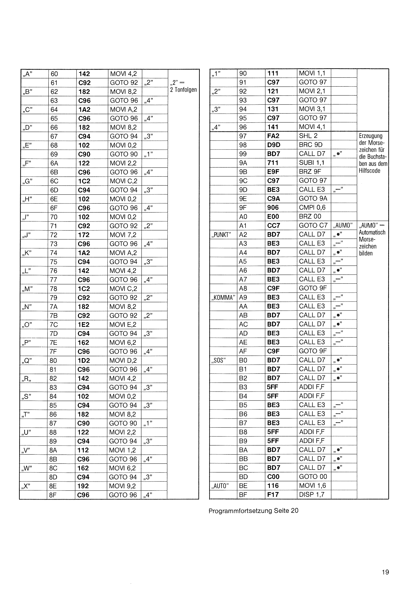
| Label | Adr. | Code | Mnemonic | Jump to | Explanation |
|---|---|---|---|---|---|
| „A“ | 60 | 142 | MOVI 4,2 | „2“ = 2 tone sequences | |
| 61 | C92 | GOTO 92 | „2“ | ||
| „B“ | 62 | 182 | MOVI 8,2 | ||
| 63 | C96 | GOTO 96 | „4“ | ||
| „C“ | 64 | 1A2 | MOVI A,2 | ||
| 65 | C96 | GOTO 96 | „4“ | ||
| „D“ | 66 | 182 | MOVI 8,2 | ||
| 67 | C94 | GOTO 94 | „3“ | ||
| „E“ | 68 | 102 | MOVI 0,2 | ||
| 69 | C90 | GOTO 90 | „1“ | ||
| „F“ | 6A | 122 | MOVI 2,2 | ||
| 6B | C96 | GOTO 96 | „4“ | ||
| „G“ | 6C | 1C2 | MOVI C,2 | ||
| 6D | C94 | GOTO 94 | „3“ | ||
| „H“ | 6E | 102 | MOVI 0,2 | ||
| 6F | C96 | GOTO 96 | „4“ | ||
| „I“ | 70 | 102 | MOVI 0,2 | ||
| 71 | C92 | GOTO 92 | „2“ | ||
| „J“ | 72 | 172 | MOVI 7,2 | ||
| 73 | C96 | GOTO 96 | „4“ | ||
| „K“ | 74 | 1A2 | MOVI A,2 | ||
| 75 | C94 | GOTO 94 | „3“ | ||
| „L“ | 76 | 142 | MOVI 4,2 | ||
| 77 | C96 | GOTO 96 | „4“ | ||
| „M“ | 78 | 1C2 | MOVI C,2 | ||
| 79 | C92 | GOTO 92 | „2“ | ||
| „N“ | 7A | 182 | MOVI 8,2 | ||
| 7B | C92 | GOTO 92 | „2“ | ||
| „O“ | 7C | 1E2 | MOVI E,2 | ||
| 7D | C94 | GOTO 94 | „3“ | ||
| „P“ | 7E | 162 | MOVI 6,2 | ||
| 7F | C96 | GOTO 96 | „4“ | ||
| „Q“ | 80 | 1D2 | MOVI D,2 | ||
| 81 | C96 | GOTO 96 | „4“ | ||
| „R“ | 82 | 142 | MOVI 4,2 | ||
| 83 | C94 | GOTO 94 | „3“ | ||
| „S“ | 84 | 102 | MOVI 0,2 | ||
| 85 | C94 | GOTO 94 | „3“ | ||
| „T“ | 86 | 182 | MOVI 8,2 | ||
| 87 | C90 | GOTO 90 | „1“ | ||
| „U“ | 88 | 122 | MOVI 2,2 | ||
| 89 | C94 | GOTO 94 | „3“ | ||
| „V“ | 8A | 112 | MOVI 1,2 | ||
| 8B | C96 | GOTO 96 | „4“ | ||
| „W“ | 8C | 162 | MOVI 6,2 | ||
| 8D | C94 | GOTO 94 | „3“ | ||
| „X“ | 8E | 192 | MOVI 9,2 | ||
| 8F | C96 | GOTO 96 | „4“ |
| Label | Adr. | Code | Mnemonic | Jump to | Explanation |
|---|---|---|---|---|---|
| „1“ | 90 | 111 | MOVI 1,1 | ||
| 91 | C97 | GOTO 97 | |||
| „2“ | 92 | 121 | MOVI 2,1 | ||
| 93 | C97 | GOTO 97 | |||
| „3“ | 94 | 131 | MOVI 3,1 | ||
| 95 | C97 | GOTO 97 | |||
| „4“ | 96 | 141 | MOVI 4,1 | ||
| 97 | FA2 | SHL 2 | Generation of the Morse signs for the letters from the auxiliary code | ||
| 98 | D9D | BRC 9D | |||
| 99 | BD7 | CALL D7 | „•“ | ||
| 9A | 711 | SUBI 1,1 | |||
| 9B | E9F | BRZ 9F | |||
| 9C | C97 | GOTO 97 | |||
| 9D | BE3 | CALL E3 | „—“ | ||
| 9E | C9A | GOTO 9A | |||
| 9F | 906 | CMPI 0,6 | |||
| A0 | E00 | BRZ 00 | |||
| A1 | CC7 | GOTO C7 | „AUMO“ | „AUMO“ = form automatic Morse signs | |
| „PUNKT“ | A2 | BD7 | CALL D7 | „•“ | |
| A3 | BE3 | CALL E3 | „—“ | ||
| A4 | BD7 | CALL D7 | „•“ | ||
| A5 | BE3 | CALL E3 | „—“ | ||
| A6 | BD7 | CALL D7 | „•“ | ||
| A7 | BE3 | CALL E3 | „—“ | ||
| A8 | C9F | GOTO 9F | |||
| „KOMMA“ | A9 | BE3 | CALL E3 | „—“ | |
| AA | BE3 | CALL E3 | „—“ | ||
| AB | BD7 | CALL D7 | „•“ | ||
| AC | BD7 | CALL D7 | „•“ | ||
| AD | BE3 | CALL E3 | „—“ | ||
| AE | BE3 | CALL E3 | „—“ | ||
| AF | C9F | GOTO 9F | |||
| „SOS“ | B0 | BD7 | CALL D7 | „•“ | |
| B1 | BD7 | CALL D7 | „•“ | ||
| B2 | BD7 | CALL D7 | „•“ | ||
| B3 | 5FF | ADDI F,F | |||
| B4 | 5FF | ADDI F,F | |||
| B5 | BE3 | CALL E3 | „—“ | ||
| B6 | BE3 | CALL E3 | „—“ | ||
| B7 | BE3 | CALL E3 | „—“ | ||
| B8 | 5FF | ADDI F,F | |||
| B9 | 5FF | ADDI F,F | |||
| BA | BD7 | CALL D7 | „•“ | ||
| BB | BD7 | CALL D7 | „•“ | ||
| BC | BD7 | CALL D7 | „•“ | ||
| BD | C00 | GOTO 00 | |||
| „AUTO“ | BE | 116 | MOVI 1,6 | ||
| BF | F17 | DISP 1,7 |
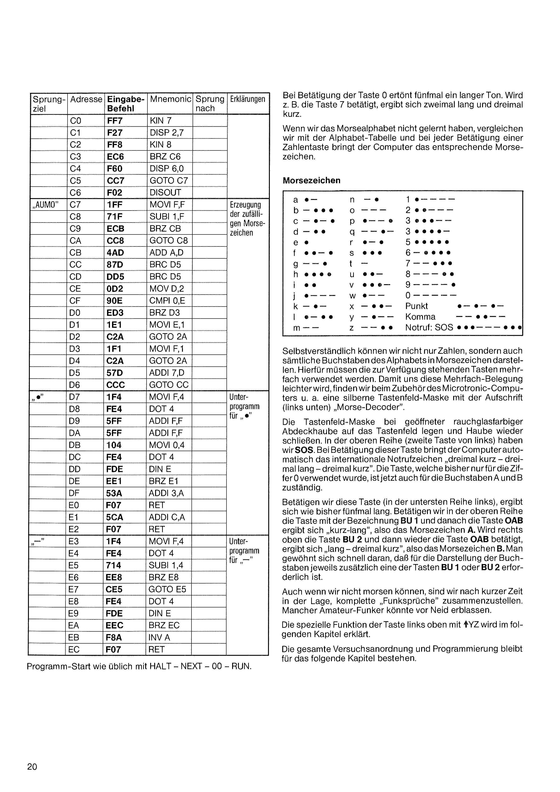
| Label | Adr. | Code | Mnemonic | Jump to | Explanation |
|---|---|---|---|---|---|
| C0 | FF7 | KIN 7 | |||
| C1 | F27 | DISP 2,7 | |||
| C2 | FF8 | KIN 8 | |||
| C3 | EC6 | BRZ C6 | |||
| C4 | F60 | DISP 6,0 | |||
| C5 | CC7 | GOTO C7 | |||
| C6 | F02 | DISOUT | |||
| „AUMO“ | C7 | 1FF | MOVI F,F | Generation of the random Morse signs | |
| C8 | 71F | SUBI 1,F | |||
| C9 | ECB | BRZ CB | |||
| CA | CC8 | GOTO C8 | |||
| CB | 4AD | ADD A,D | |||
| CC | 87D | CMP 7,D | |||
| CD | DD5 | BRC D5 | |||
| CE | 0D2 | MOV D,2 | |||
| CF | 90E | CMPI 0,E | |||
| D0 | ED3 | BRZ D3 | |||
| D1 | 1E1 | MOVI E,1 | |||
| D2 | C2A | GOTO 2A | |||
| D3 | 1F1 | MOVI F,1 | |||
| D4 | C2A | GOTO 2A | |||
| D5 | 57D | ADDI 7,D | |||
| D6 | CCC | GOTO CC | |||
| „•“ | D7 | 1F4 | MOVI F,4 | Subroutine for „•“ | |
| D8 | FE4 | DOT 4 | |||
| D9 | 5FF | ADDI F,F | |||
| DA | 5FF | ADDI F,F | |||
| DB | 104 | MOVI 0,4 | |||
| DC | FE4 | DOT 4 | |||
| DD | FDE | DIN E | |||
| DE | EE1 | BRZ E1 | |||
| DF | 53A | ADDI 3,A | |||
| E0 | F07 | RET | |||
| E1 | 5CA | ADDI C,A | |||
| E2 | F07 | RET | |||
| „—“ | E3 | 1F4 | MOVI F,4 | Subroutine for „—“ | |
| E4 | FE4 | DOT 4 | |||
| E5 | 714 | SUBI 1,4 | |||
| E6 | EE8 | BRZ E8 | |||
| E7 | CE5 | GOTO E5 | |||
| E8 | FE4 | DOT 4 | |||
| E9 | FDE | DIN E | |||
| EA | EEC | BRZ EC | |||
| EB | F8A | INV A | |||
| EC | F07 | RET |
When key 0 is pressed, a long tone sounds five times. If, for example, key 7 is pressed, the result is twice long and three times short.
If we have not learned the Morse alphabet, we compare with the alphabet table, and with each press of a number key the computer produces the corresponding Morse sign.
Of course we can represent not only numbers but all the letters of the alphabet in Morse code. For this, the available keys must be used multiple times. To make this multiple assignment easier for us, among the accessories of the Microtronic computer we find, among other things, a silver keypad mask with the inscription (bottom left) „Morse Decoder“.
Place the keypad mask on the keypad with the smoke-glass-colored cover hood open, and close the hood again. In the top row (second key from the left) we have SOS. When this key is pressed, the computer automatically produces the international distress signal „three times short – three times long – three times short“. The key that was previously used only for the digit 0 is now also responsible for the letters A and B.
If we press this key (in the bottom row on the left), the result is, as before, five times long. If in the top row we press the key labeled BU 1 and then the key OAB, the result is „short-long“, i.e. the Morse sign A. If at the top right the key BU 2 and then again the key OAB is pressed, the result is „long – three times short“, i.e. the Morse sign B. One quickly gets used to the fact that, for representing the letters, one of the keys BU 1 or BU 2 is additionally required in each case.
Even if we cannot do Morse, after a short time we are able to put together complete „radio messages“. Many an amateur radio operator might turn pale with envy.
The special function of the key at the top left with ↑YZ is explained in the following chapter.
The entire experimental setup and programming remains in place for the following chapter.
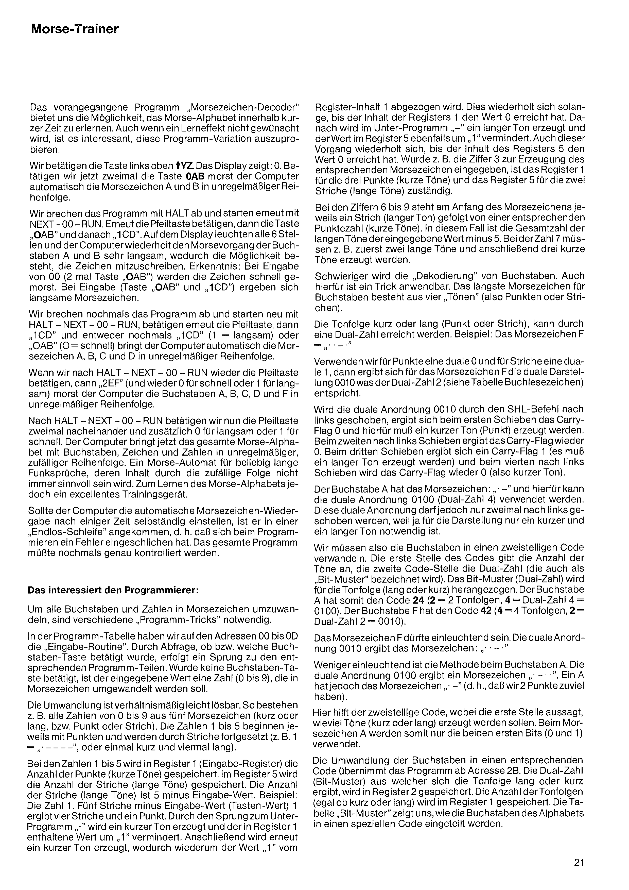
The preceding program „Morse Code Decoder“ offers us the possibility of learning the Morse alphabet within a short time. Even if a learning effect is not desired, it is interesting to try out this program variation.
We press the key at the top left, ↑YZ. The display shows: 0. If we now press the key OAB twice, the computer automatically sends the Morse signs A and B in irregular order.
We abort the program with HALT and start again with NEXT – 00 – RUN. Press the arrow key again, then the key „OAB“ and after that „1CD“. All 6 digits light up on the display and the computer repeats the Morse process of the letters A and B very slowly, which makes it possible to write the signs down. Conclusion: with an entry of 00 (key „OAB“ twice) the signs are sent quickly. With the entry (key „OAB“ and „1CD“) slow Morse signs result.
We abort the program once more and restart with HALT – NEXT – 00 – RUN, press the arrow key again, then „1CD“ and either „1CD“ again (1 = slow) or „OAB“ (O = fast); the computer automatically sends the Morse signs A, B, C and D in irregular order.
If, after HALT – NEXT – 00 – RUN, we again press the arrow key, then „2EF“ (and again 0 for fast or 1 for slow), the computer sends the letters A, B, C, D and F in irregular order.
After HALT – NEXT – 00 – RUN we now press the arrow key twice in succession and additionally 0 for slow or 1 for fast. The computer now sends the entire Morse alphabet with letters, signs and numbers in irregular, random order. A Morse machine for arbitrarily long radio messages, whose content, because of the random sequence, will not always be meaningful. For learning the Morse alphabet, however, an excellent training device.
Should the computer stop the automatic Morse-sign playback by itself after some time, it has ended up in an „endless loop“, i.e. an error has crept in during programming. The entire program would have to be checked carefully once more.
To convert all letters and numbers into Morse signs, various „program tricks“ are necessary.
In the program table we have, at addresses 00 to 0D, the „input routine“. By querying whether, or which, letter key was pressed, a jump is made to the corresponding parts of the program. If no letter key was pressed, the entered value is a number (0 to 9) that is to be converted into Morse signs.
The conversion is relatively easy to solve. For example, all the numbers from 0 to 9 consist of five Morse signs (short or long, i.e. dot or dash). The numbers 1 to 5 each begin with dots and are continued with dashes (e.g. 1 = „• – – – –“, or once short and four times long).
For the numbers 1 to 5, the number of dots (short tones) is stored in register 1 (input register). In register 5 the number of dashes (long tones) is stored. The number of dashes (long tones) is 5 minus the input value. Example: the number 1. Five dashes minus the input value (key value) 1 gives four dashes and one dot. By jumping to the subroutine „•“ a short tone is generated and the value contained in register 1 is decreased by „1“. Then another short tone is generated, whereby again the value „1“ is subtracted from
the content of register 1. This repeats until the content of register 1 has reached the value 0. After that, in the subroutine „–“ a long tone is generated and the value in register 5 is likewise decreased by „1“. This process too repeats until the content of register 5 has reached the value 0. If, for example, the digit 3 was entered to generate the corresponding Morse sign, register 1 is responsible for the three dots (short tones) and register 5 for the two dashes (long tones).
For the digits 6 to 9, at the beginning of the Morse sign there is in each case a dash (long tone) followed by a corresponding number of dots (short tones). In this case the total number of long tones is the entered value minus 5. For the number 7, for example, first two long tones and then three short tones must be generated.
The „decoding“ of letters becomes more difficult. Here too a trick can be applied. The longest Morse sign for letters consists of four „tones“ (i.e. dots or dashes).
The tone sequence short or long (dot or dash) can be achieved by means of a binary number. Example: the Morse sign F = „• • – •“
If we use a binary 0 for dots and a binary 1 for dashes, then for the Morse sign F the binary representation 0010 results, which corresponds to the binary number 2 (see the bit-pattern table).
If the binary arrangement 0010 is shifted to the left by the SHL command, the first shift gives the carry flag 0, and for this a short tone (dot) must be generated. On the second shift to the left the carry flag is again 0. On the third shift a carry flag of 1 results (a long tone must be generated), and on the fourth shift to the left the carry flag becomes 0 again (i.e. a short tone).
The letter A has the Morse sign: „• –“, and for this the binary arrangement 0100 (binary number 4) can be used. However, this binary arrangement may be shifted to the left only twice, because for the representation only one short and one long tone are needed.
So we must convert the letters into a two-digit code. The first digit of the code indicates the number of tones, the second code digit the binary number (which is also called the „bit pattern“). The bit pattern (binary number) is used for the tone sequence (long or short). The letter A thus has the code 24 (2 = 2 tone sequences, 4 = binary number 4 = 0100). The letter F has the code 42 (4 = 4 tone sequences, 2 = binary number 2 = 0010).
The Morse sign F should be self-evident. The binary arrangement 0010 gives the Morse sign: „• • – •“
Less self-evident is the method for the letter A. The binary arrangement 0100 gives a Morse sign „• – • •“. An A, however, has the Morse sign „• –“ (i.e. that we have 2 dots too many).
Here the two-digit code helps, in which the first digit states how many tones (short or long) are to be generated. For the Morse sign A, therefore, only the first two bits (0 and 1) are used.
The conversion of the letters into a corresponding code is handled by the program from address 2B. The binary number (bit pattern), from which the tone sequence long or short results, is stored in register 2. The number of tone sequences (regardless of whether short or long) is stored in register 1. The table „bit pattern“ shows us how the letters of the alphabet are divided into a special code.
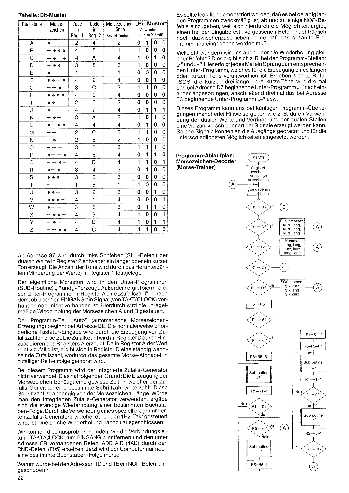
From address 97 onward, by shifting the binary values in register 2 to the left (SHL command), either a long or a short tone is generated. The number of tones is determined by counting down (reducing the values) in register 1.
The actual Morse tone is generated in the subroutines (SUB routine) „•“ and „–“. In addition, in these subroutines a „random number“ arises in register A, depending on whether or not a signal (from TAKT/CLOCK) is present at the INPUT. This controls the irregular repetition of the Morse signs A and B.
The program part „Auto“ (automatic Morse-sign generation) begins at address BE. The keyboard entry normally required is replaced by the generation of random numbers. The random number is generated in register D by adding register A. Since the value in register A is relatively random, a constantly changing random number results in register D, by which the entire Morse alphabet is sent in random order.
In this program the integrated random-number generator is not used. This has the following reason: the generation of the Morse signs requires a certain amount of time, during which the random-number generator counts on by a certain number of steps. This number of steps depends on the Morse-sign length. If one were to use the integrated random-number generator, the constant repetition of a certain letter sequence would result. By using a specially programmed random-number generator, which is controlled by the 1 Hz clock, such a repetition is almost ruled out.
We can try this out by removing the connecting lead TAKT/CLOCK to INPUT 4 and replacing the command ADD A,D (4AD) present at address CB with the RND command (F05). Now the computer will only send a certain letter sequence.
Why was a NOP command inserted at addresses 1D and 1E?
It was merely intended to demonstrate that, with such long programs, it is expedient to enter a few NOP commands now and then, because this gives the possibility of subsequently inserting a command that may have been forgotten during input, without having to re-enter the entire program.
Perhaps we are also surprised by the repetition of identical commands? This arises, for example, at the program locations „•“ and „–“. Here, each time, a jump is made to the corresponding subroutine that is responsible for generating a long or short tone. If, for example, for „SOS“ three short – three long – three short tones result, the subroutine „•“ beginning at address D7 is jumped to three times in succession, then the subroutine „–“ beginning at address E3 three times, and so on.
This program can give us various hints for future program considerations, such as how, by using the binary values and reducing the binary digits, a large number of different signals can be generated. Such signals can be brought to the outputs and used for the most varied possibilities.
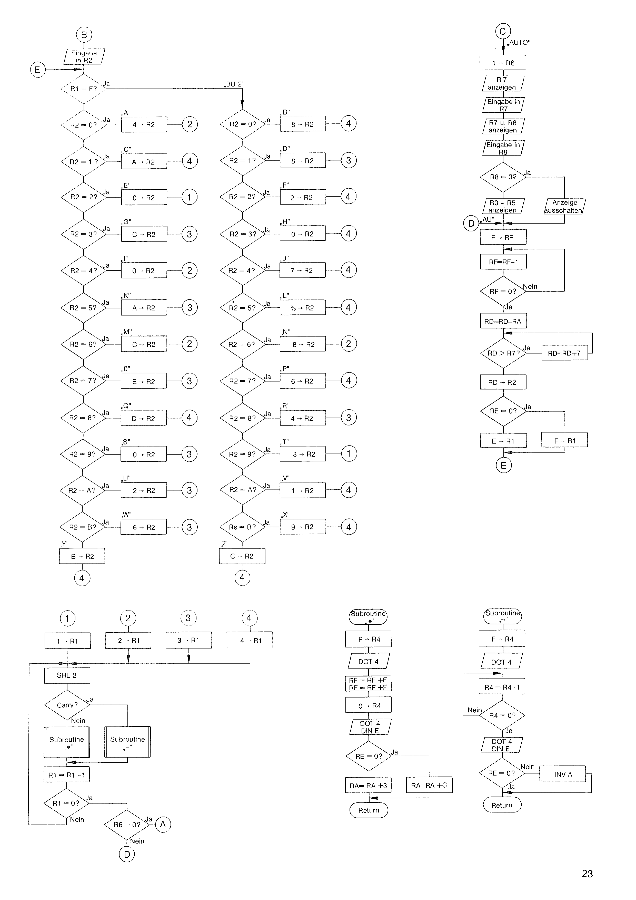
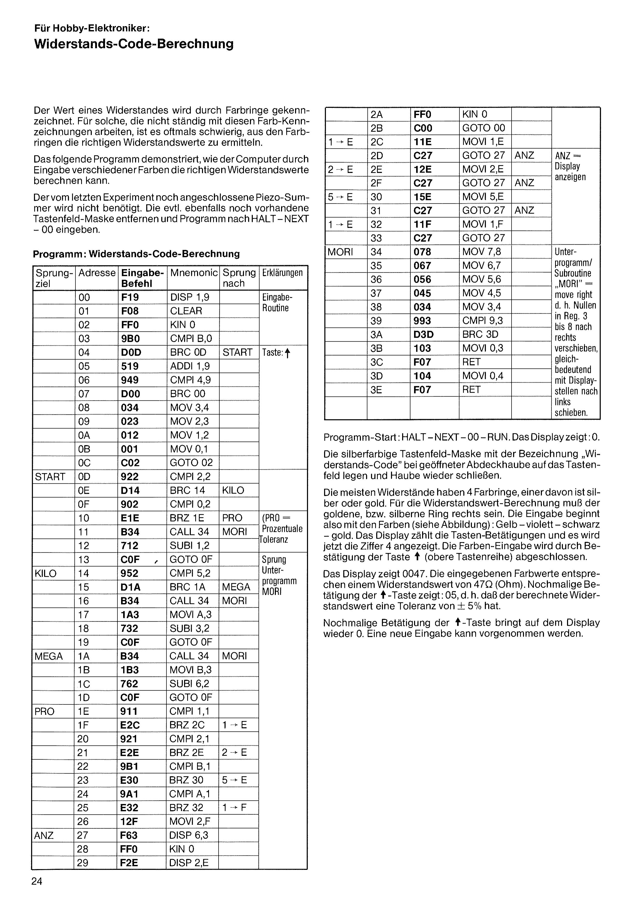
The value of a resistor is indicated by colored rings. For those who do not constantly work with these color markings, it is often difficult to determine the correct resistance values from the color rings.
The following program demonstrates how the computer can calculate the correct resistance values from the entry of various colors.
The piezo buzzer still connected from the last experiment is not needed. Remove the keypad mask that may also still be present, and enter the program according to HALT – NEXT – 00.
| Label | Adr. | Code | Mnemonic | Jump to | Explanation |
|---|---|---|---|---|---|
| 00 | F19 | DISP 1,9 | Input routine | ||
| 01 | F08 | CLEAR | |||
| 02 | FF0 | KIN 0 | |||
| 03 | 9B0 | CMPI B,0 | |||
| 04 | D0D | BRC 0D | START | Key: ↑ | |
| 05 | 519 | ADDI 1,9 | |||
| 06 | 949 | CMPI 4,9 | |||
| 07 | D00 | BRC 00 | |||
| 08 | 034 | MOV 3,4 | |||
| 09 | 023 | MOV 2,3 | |||
| 0A | 012 | MOV 1,2 | |||
| 0B | 001 | MOV 0,1 | |||
| 0C | C02 | GOTO 02 | |||
| START | 0D | 922 | CMPI 2,2 | ||
| 0E | D14 | BRC 14 | KILO | ||
| 0F | 902 | CMPI 0,2 | |||
| 10 | E1E | BRZ 1E | PRO | (PRO = percentage tolerance) | |
| 11 | B34 | CALL 34 | MORI | ||
| 12 | 712 | SUBI 1,2 | |||
| 13 | C0F | GOTO 0F | Jump to subroutine MORI | ||
| KILO | 14 | 952 | CMPI 5,2 | ||
| 15 | D1A | BRC 1A | MEGA | ||
| 16 | B34 | CALL 34 | MORI | ||
| 17 | 1A3 | MOVI A,3 | |||
| 18 | 732 | SUBI 3,2 | |||
| 19 | C0F | GOTO 0F | |||
| MEGA | 1A | B34 | CALL 34 | MORI | |
| 1B | 1B3 | MOVI B,3 | |||
| 1C | 762 | SUBI 6,2 | |||
| 1D | C0F | GOTO 0F | |||
| PRO | 1E | 911 | CMPI 1,1 | ||
| 1F | E2C | BRZ 2C | 1 → E | ||
| 20 | 921 | CMPI 2,1 | |||
| 21 | E2E | BRZ 2E | 2 → E | ||
| 22 | 9B1 | CMPI B,1 | |||
| 23 | E30 | BRZ 30 | 5 → E | ||
| 24 | 9A1 | CMPI A,1 | |||
| 25 | E32 | BRZ 32 | 1 → F | ||
| 26 | 12F | MOVI 2,F | |||
| ANZ | 27 | F63 | DISP 6,3 | ||
| 28 | FF0 | KIN 0 | |||
| 29 | F2E | DISP 2,E |
| Label | Adr. | Code | Mnemonic | Jump to | Explanation |
|---|---|---|---|---|---|
| 2A | FF0 | KIN 0 | |||
| 2B | C00 | GOTO 00 | |||
| 1 → E | 2C | 11E | MOVI 1,E | ||
| 2D | C27 | GOTO 27 | ANZ | ANZ = show display | |
| 2 → E | 2E | 12E | MOVI 2,E | ||
| 2F | C27 | GOTO 27 | ANZ | ||
| 5 → E | 30 | 15E | MOVI 5,E | ||
| 31 | C27 | GOTO 27 | ANZ | ||
| 1 → E | 32 | 11F | MOVI 1,F | ||
| 33 | C27 | GOTO 27 | |||
| MORI | 34 | 078 | MOV 7,8 | „Subroutine“ MORI = move right, i.e. shift the zeros in reg. 3 to 8 to the right, equivalent to shifting the display digits to the left. | |
| 35 | 067 | MOV 6,7 | |||
| 36 | 056 | MOV 5,6 | |||
| 37 | 045 | MOV 4,5 | |||
| 38 | 034 | MOV 3,4 | |||
| 39 | 993 | CMPI 9,3 | |||
| 3A | D3D | BRC 3D | |||
| 3B | 103 | MOVI 0,3 | |||
| 3C | F07 | RET | |||
| 3D | 104 | MOVI 0,4 | |||
| 3E | F07 | RET |
Program start: HALT – NEXT – 00 – RUN. The display shows: 0.
Place the silver-colored keypad mask labeled „Widerstands-Code“ on the keypad with the cover hood open, and close the hood again.
Most resistors have 4 color rings, one of which is silver or gold. For the resistance-value calculation the gold or silver ring must be on the right. The entry therefore begins with the colors (see figure): yellow – violet – black – gold. The display counts the key presses and now shows the digit 4. The color entry is concluded by pressing the key ↑ (top key row).
The display shows 0047. The entered color values correspond to a resistance value of 47 Ω (ohms). Pressing the ↑ key again shows: 05, i.e. that the calculated resistance value has a tolerance of ± 5%.
Pressing the ↑ key again brings 0 back on the display. A new entry can be made.
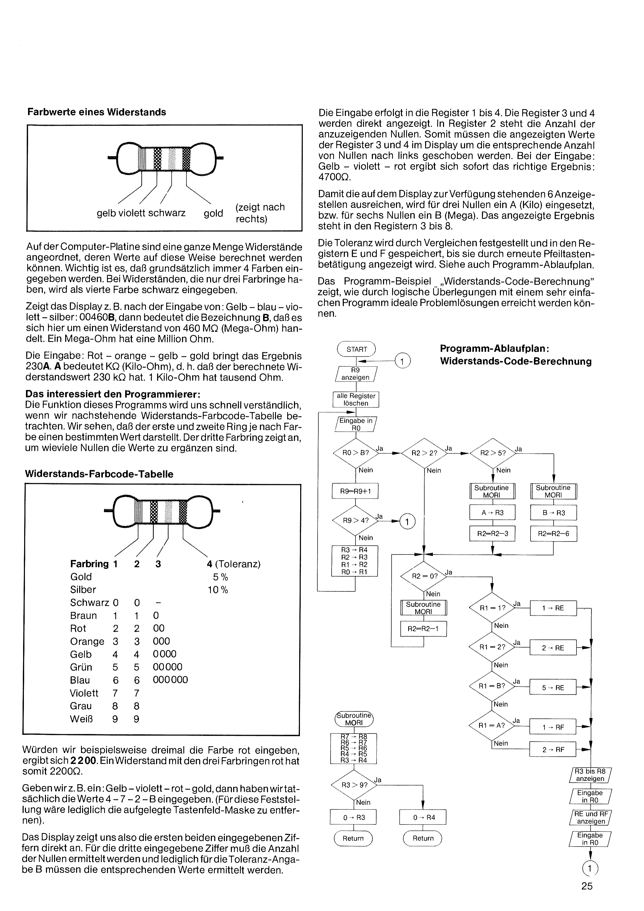
On the computer board, a whole lot of resistors are arranged whose values can be calculated in this way. It is important that, on principle, 4 colors are always entered. For resistors that have only three color rings, black is entered as the fourth color.
If, for example, the display shows, after entering: yellow – blue – violet – silver: 00460B, then the designation B means that this is a resistor of 460 MΩ (megohms). One megohm is one million ohms.
The entry: red – orange – yellow – gold yields the result 230A. A means kΩ (kilohms), i.e. that the calculated resistance value is 230 kΩ. One kilohm is one thousand ohms.
The function of this program quickly becomes clear to us when we look at the resistor color-code table below. We see that the first and second rings each represent a certain value depending on the color. The third color ring indicates by how many zeros the values are to be supplemented.
If we were to enter, for example, the color red three times, the result is 2200. A resistor with the three color rings red thus has 2200 Ω.
If we enter, for example: yellow – violet – red – gold, then we have actually entered the values 4 – 7 – 2 – B. (For this observation, only the attached keypad mask would have to be removed.)
The display thus shows us the first two entered digits directly. For the third entered digit, the number of zeros must be determined, and only for the tolerance specification B must the corresponding values be determined.
The entry is made into registers 1 to 4. Registers 3 and 4 are displayed directly. Register 2 holds the number of zeros to be shown. The displayed values of registers 3 and 4 must therefore be shifted to the left on the display by the corresponding number of zeros. With the entry yellow – violet – red, the correct result is obtained immediately: 4700 Ω.
So that the 6 display positions available on the display are sufficient, an A (kilo) is used for three zeros, or a B (mega) for six zeros. The displayed result is in registers 3 to 8.
The tolerance is determined by comparison and stored in registers E and F until it is displayed by pressing the arrow key again. See also the program flow chart.
The program example „Resistance Code Calculation“ shows how, through logical reasoning, ideal problem solutions can be achieved with a very simple program.
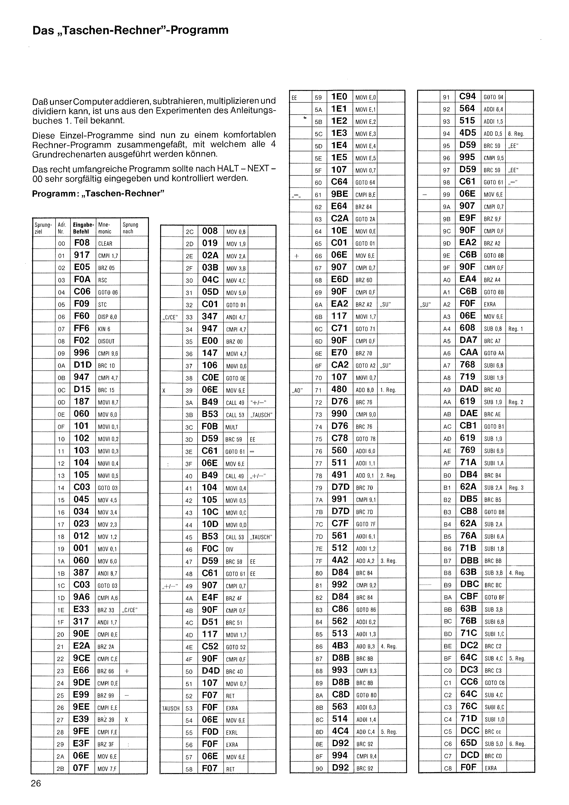
That our computer can add, subtract, multiply and divide is known to us from the experiments of the instruction book, Part 1.
These individual programs are now combined into a convenient calculator program with which all 4 basic arithmetic operations can be performed.
The rather extensive program should be entered very carefully after HALT – NEXT – 00 and checked.
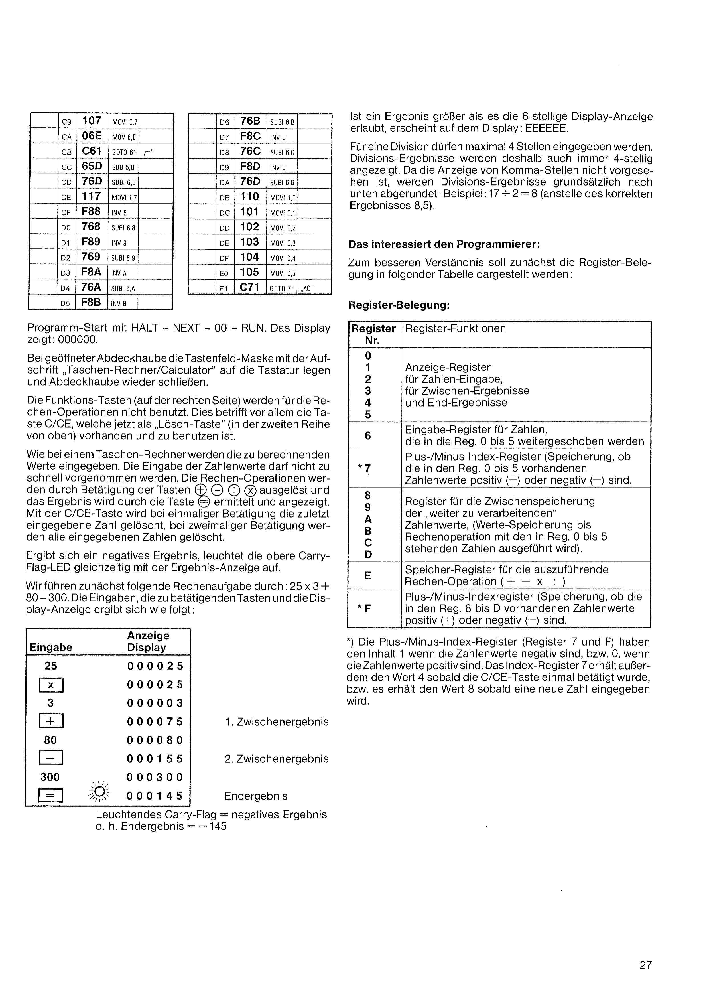
Program start with HALT – NEXT – 00 – RUN. The display shows: 000000.
With the cover hood open, place the keypad mask labeled „Taschen-Rechner/Calculator“ on the keyboard and close the cover hood again.
The function keys (on the right-hand side) are not used for the arithmetic operations. This concerns above all the C/CE key, which is now present and to be used as a „clear key“ (in the second row from the top).
As with a pocket calculator, the values to be calculated are entered. The entry of the number values must not be made too quickly. The arithmetic operations are triggered by pressing the keys +, –, ÷, × and the result is determined and displayed by the = key. With the C/CE key, a single press clears the most recently entered number; with a double press, all entered numbers are cleared.
If a negative result arises, the upper carry-flag LED lights up at the same time as the result display.
We first carry out the following calculation: 25 × 3 + 80 – 300. The entries, the keys to be pressed, and the display result as follows:
If a result is larger than the 6-digit display permits, EEEEEE appears on the display.
For a division, a maximum of 4 digits may be entered. Division results are therefore always displayed with 4 digits. Since the display of decimal places is not provided, division results are generally rounded down: example: 17 ÷ 2 = 8 (instead of the correct result 8.5).
For better understanding, the register assignment will first be presented in the following table:
| Reg. No. | Register functions |
|---|---|
| 0 1 2 3 4 5 | Display register for number entry, for intermediate results and final results |
| 6 | Input register for numbers that are shifted onward into reg. 0 to 5 |
| * 7 | Plus-/minus index register (storage of whether the number values present in reg. 0 to 5 are positive (+) or negative (–). |
| 8 9 A B C D | Register for the intermediate storage of the „to be further processed“ number values (value storage until the arithmetic operation with the numbers in reg. 0 to 5 is performed). |
| E | Memory register for the arithmetic operation to be performed ( + – × : ) |
| * F | Plus-/minus index register (storage of whether the number values present in reg. 8 to D are positive (+) or negative (–). |
The plus/minus index registers (registers 7 and F) have the content 1 when the number values are negative, or 0 when the number values are positive. Index register 7 additionally receives the value 4 as soon as the C/CE key has been pressed once, or it receives the value 8 as soon as a new number is entered.
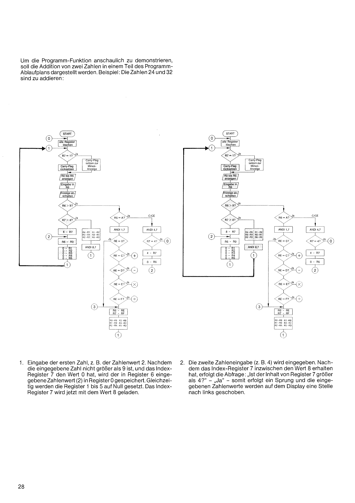
To demonstrate the program function clearly, the addition of two numbers is shown in a part of the program flow chart. Example: the numbers 24 and 32 are to be added:
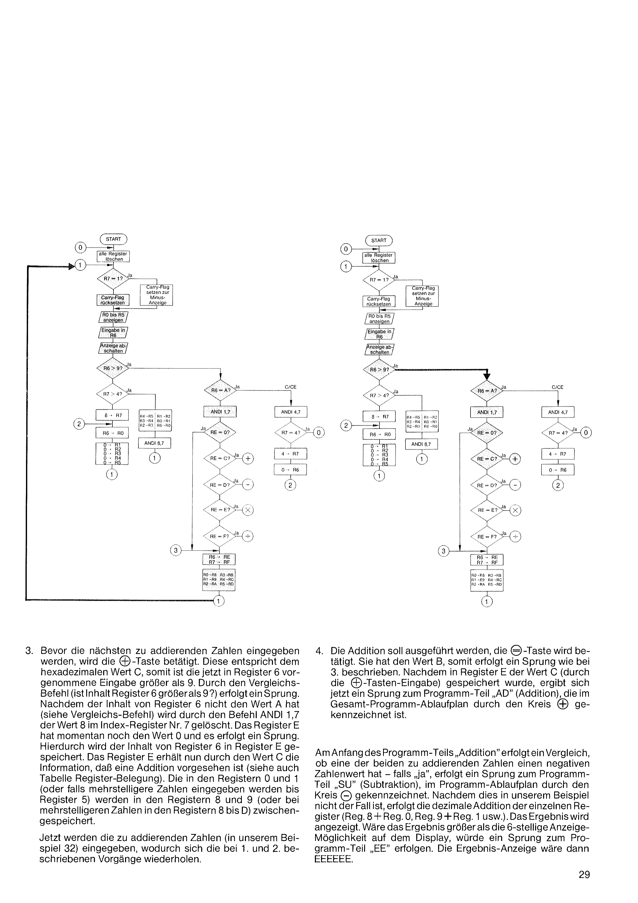
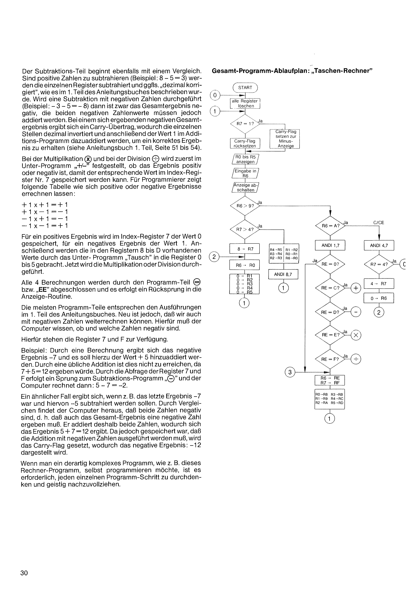
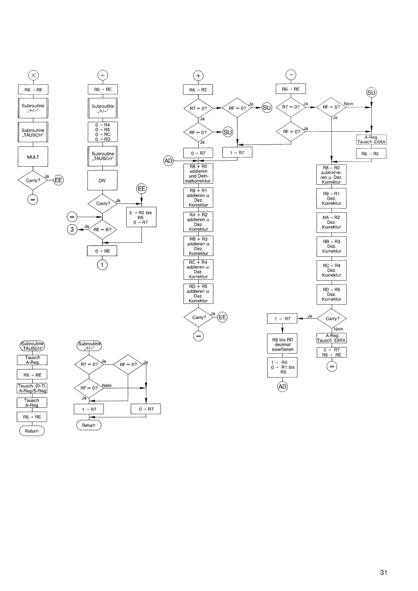
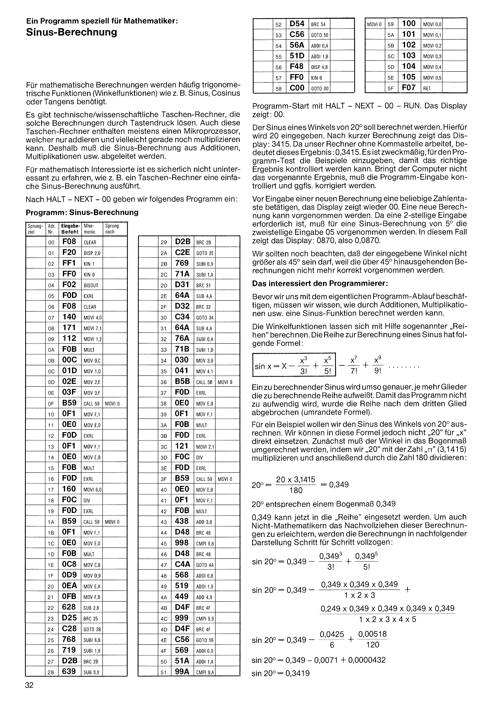
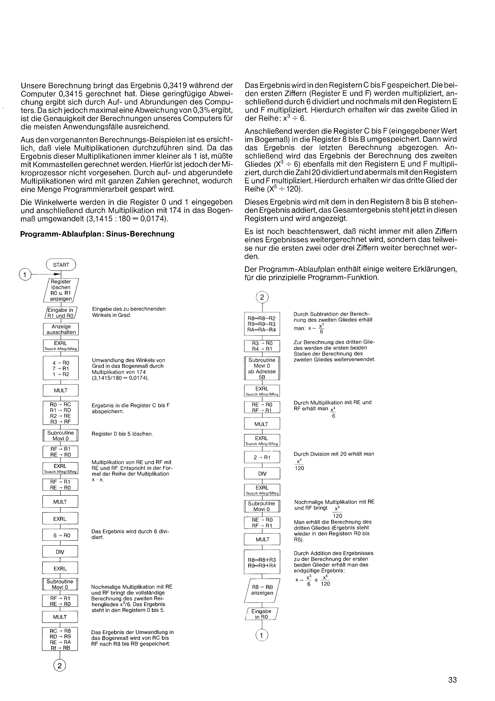
Our calculation yields the result 0.3419, while the computer calculated 0.3415. This slight deviation arises from the computer's rounding up and down. Since the maximum deviation is only 0.3%, however, our computer's accuracy is sufficient for most applications.
From the examples above it is evident that many multiplications must be carried out. Since their result is always smaller than 1, decimal places would be needed. The microprocessor, however, is not designed for this. By rounding the multiplications up and down, the computation uses whole numbers, saving much programming work.
The angle values are entered into registers 0 and 1 and then converted to radians by multiplication with 174 (3.1415 : 180 = 0.0174).
The result is stored in registers C to F. The first two digits (registers E and F) are multiplied, then divided by 6 and multiplied again with registers E and F. In this way we obtain the second term of the series: x3 ÷ 6.
Next, registers C to F (the entered value in radians) are copied into registers 8 to B. Then the result of the last calculation is subtracted. The result of the second term (x3 ÷ 6) is then again multiplied with registers E and F, divided by 20, and multiplied once more with E and F. In this way we obtain the third term of the series (x5 ÷ 120).
This result is added to the one held in registers 8 to B; the total now stands in these registers and is displayed.
Note, too, that the calculation does not always continue with all the digits of a result; in part only the first two or three digits are used further.
The program flow chart contains some further explanations on the basic program function.
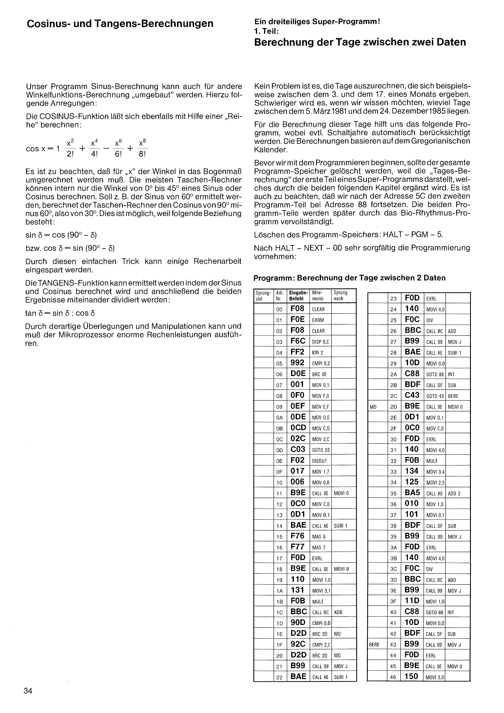
Our Sine-Calculation program can also be „rebuilt“ for other trigonometric-function calculations. Here are a few suggestions:
The COSINE function can likewise be calculated with the aid of a „series“:
Note that „x“ must be the angle converted into radians. Most pocket calculators can internally compute only angles from 0° to 45° of a sine or cosine. To find the sine of 60°, for instance, the calculator computes the cosine of 90° minus 60°, i.e. of 30°. This is possible because the following relationship holds:
or
Through this simple trick, a good deal of computational work can be saved.
The TANGENT function can be obtained by computing the sine and cosine and then dividing the two results by each other:
Through such considerations and manipulations, the microprocessor can and must perform enormous computational feats.
It is no problem to calculate the days that fall, say, between the 3rd and the 17th of a month. It becomes harder when we want to know how many days lie between 5 March 1981 and 24 December 1985.
For calculating these days, the following program helps us, automatically taking any leap years into account. The calculations are based on the Gregorian calendar.
Before we start programming, the entire program memory should be cleared, because the „day calculation“ is the first part of a super-program that is completed by the two following chapters. Note also that after address 5C we continue the second program part at address 88. The two parts are later completed by the Bio-Rhythm program.
Clearing the program memory: HALT – PGM – 5.
After HALT – NEXT – 00, carry out the programming very carefully:
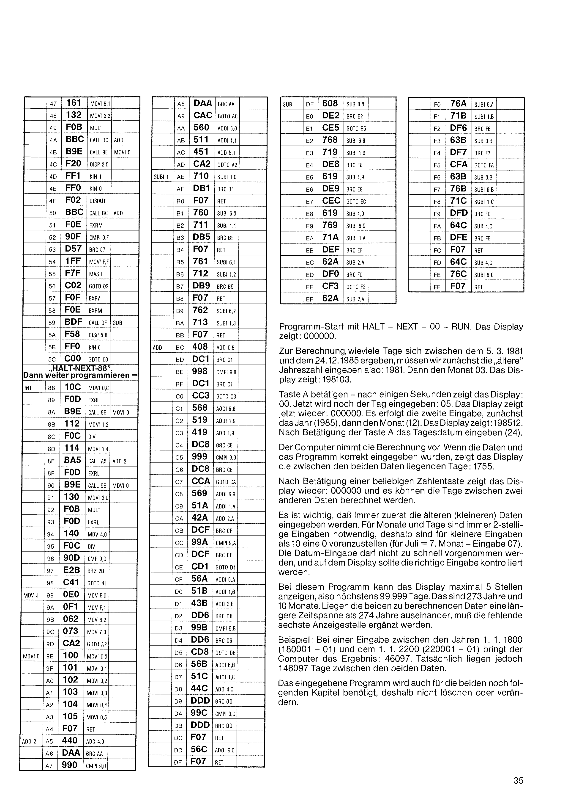
Program start with HALT – NEXT – 00 – RUN. The display shows: 000000.
To calculate how many days fall between 5 March 1981 and 24 December 1985, we must first enter the „earlier“ year, i.e.: 1981. Then the month 03. The display shows: 198103.
Press key A – after a few seconds the display shows: 00. Now the day is entered as well: 05. The display now shows 000000 again. The second entry follows: first the year (1985), then the month (12). The display shows: 198512. After pressing key A, enter the day of the month (24).
The computer performs the calculation. If the data and the program were entered correctly, the display shows the number of days lying between the two dates: 1755.
After pressing any number key, the display shows 000000 again, and the days between two other dates can be calculated.
It is important always to enter the earlier (smaller) date first. Months and days always require 2-digit entries, so a 0 must be prefixed to entries smaller than 10 (for July = 7th month – enter 07). The date entry must not be made too quickly, and the correct entry should be checked on the display.
With this program the display can show a maximum of 5 digits, i.e. at most 99,999 days. That is 273 years and 10 months. If the two dates to be calculated lie more than 274 years apart, the missing sixth display digit must be added in.
Example: For an entry between 1 January 1800 (180001 – 01) and 1 January 2200 (220001 – 01), the computer gives the result: 46097. In reality, however, 146097 days lie between the two dates.
The program you have entered is also needed for the two chapters that follow, so do not delete or change it.
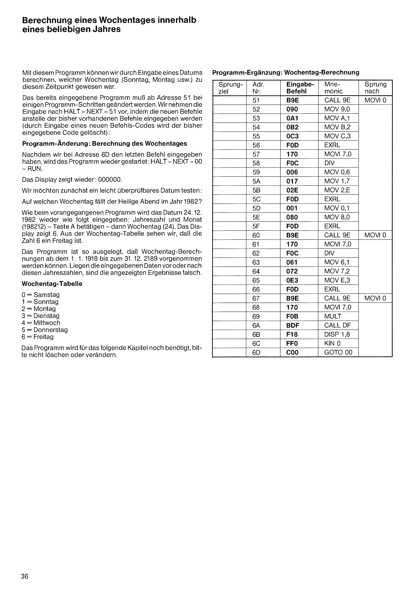
With this program we can, by entering a date, calculate which weekday (Sunday, Monday, etc.) it was at that time.
The program already entered must be changed at a few program steps from address 51 onward. We make the entry after HALT – NEXT – 51 by entering the new commands in place of the existing ones (entering a new command code erases the code entered before):
After we have entered the last command at address 6D, the program is started again: HALT – NEXT – 00 – RUN.
The display shows 000000 again.
First we want to test an easily verifiable date:
On which weekday does Christmas Eve fall in the year 1982?
As with the previous program, the date 24 December 1982 is again entered as follows: year and month (198212) – press key A – then the day (24). The display shows 6. From the weekday table we see that the number 6 is a Friday.
The program is designed so that weekday calculations can be made from 1 January 1918 up to 31 December 2189. If the entered dates lie before or after these years, the displayed results are wrong.
The program is still needed for the following chapter, so please do not delete or change it.
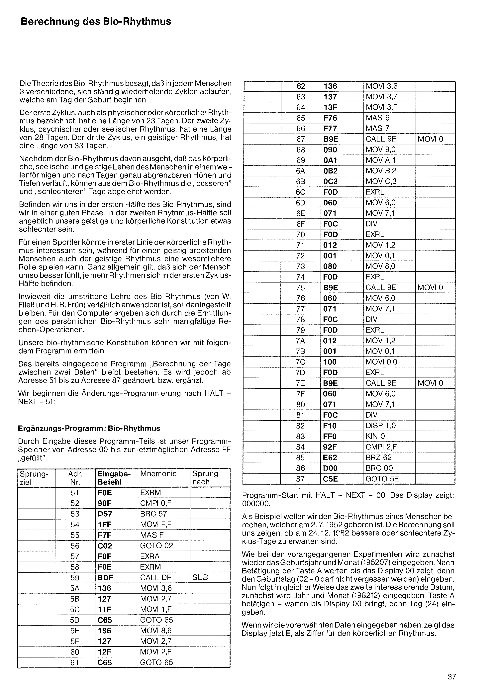
The theory of biorhythm holds that in every person 3 different, constantly repeating cycles run their course, all beginning on the day of birth.
The first cycle, also called the physical or bodily rhythm, has a length of 23 days. The second cycle, the psychic or emotional rhythm, has a length of 28 days. The third cycle, an intellectual rhythm, has a length of 33 days.
Since the biorhythm assumes that a person's physical, emotional, and intellectual life runs in wave-like highs and lows that can be precisely delimited by the day, the „better“ and „worse“ days can be derived from the biorhythm.
If we are in the first half of the biorhythm, we are in a good phase. In the second half of the rhythm, our intellectual and physical constitution is supposedly somewhat poorer.
For an athlete the physical rhythm might be of primary interest, while for someone who works intellectually the intellectual rhythm can play a more essential role. In general, a person feels better the more rhythms are in the first half of their cycle.
How far the controversial doctrine of biorhythm (by W. Fließ and H. R. Früh) is reliably applicable shall be left open. For the computer, determining the personal biorhythm gives rise to very manifold arithmetic operations.
We can determine our biorhythmic constitution with the following program.
The program already entered, „Calculating the days between two dates“, stays in place. However, from address 51 up to address 87 it is changed or extended.
We begin the modification programming after HALT – NEXT – 51:
By entering this part of the program, our program memory is now „filled“ from address 00 up to the last possible address FF.
Program start with HALT – NEXT – 00. The display shows: 000000.
As an example, we want to calculate the biorhythm of a person born on 2 July 1952. The calculation should show us whether better or worse cycle-days are to be expected on 24 December 1982.
As in the previous experiments, the birth year and month (195207) are entered first. After pressing key A, wait until the display shows 00, then enter the birthday (02 – the 0 must not be forgotten). The second date of interest now follows in the same way: first the year and month (198212) are entered. Press key A – wait until the display shows 00, then enter the day (24).
Once we have entered the dates mentioned above, the display now shows E, as the digit for the physical rhythm.
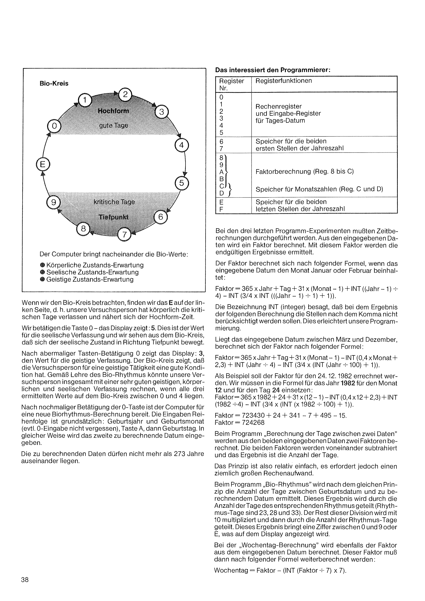
| Register No. | Register functions |
|---|---|
| 0 1 2 3 4 5 | Computation registers and input registers for the day-date |
| 6 7 | Storage for the first two digits of the year |
| 8 9 A B C D | Factor calculation (Reg. 8 to C) Storage for month numbers (Reg. C and D) |
| E F | Storage for the last two digits of the year |
The computer outputs the bio-values one after another:
• Physical condition forecast
• Emotional condition forecast
• Intellectual condition forecast
When we look at the Bio Circle, we find the E on the left side, i.e. our test subject has physically left the critical days and is approaching the peak-form period.
We press key 0 – the display shows: 5. This is the value for the emotional condition, and we see from the Bio Circle that the emotional state is moving toward the low point.
After pressing key 0 again, the display shows: 3, the value for the intellectual condition. The Bio Circle shows that the test subject is in good shape for intellectual activity. According to the doctrine of biorhythm, our test subject could overall reckon on a very good intellectual, physical, and emotional condition if all three determined values lie between 0 and 4 on the Bio Circle.
After pressing the 0 key once more, the computer is ready for a new biorhythm calculation. The input order is generally: birth year and birth month (don't forget a leading 0 if needed), key A, then the birthday. The second date to be calculated is entered in the same way.
The dates to be calculated must not lie more than 273 years apart.
In the last three program experiments, time calculations had to be carried out. From the entered dates a factor is calculated. With this factor the final results are determined.
The factor is calculated by the following formula if the entered date falls in the month of January or February:
Factor = 365 × Year + Day + 31 × (Month − 1) + INT((Year − 1) ÷ 4) − INT(3/4 × INT(((Year − 1) ÷ 1) + 1)).
The notation INT (integer) means that, in the result of the following calculation, the digits after the decimal point are to be ignored. This simplifies our programming.
If the entered date falls between March and December, the factor is calculated by the following formula:
Factor = 365 × Year + Day + 31 × (Month − 1) − INT(0.4 × Month + 2.3) + INT(Year ÷ 4) − INT(3/4 × (INT(Year ÷ 100) + 1)).
As an example, the factor for 24 December 1982 is to be calculated. Into the formula we must substitute 1982 for the year, 12 for the month, and 24 for the day:
Factor = 365 × 1982 + 24 + 31 × (12 − 1) − INT(0.4 × 12 + 2.3) + INT(1982 ÷ 4) − INT(3/4 × (INT(1982 ÷ 100) + 1)).
Factor = 723430 + 24 + 341 − 7 + 495 − 15.
Factor = 724268
In the program „Calculating the days between two dates“, two factors are calculated from the two entered dates. The two factors are subtracted from each other, and the result is the number of days.
The principle is thus relatively simple, but it requires a fairly large amount of computation.
In the program „Biorhythm“, the number of days between the birth date and the date to be calculated is determined by the same principle. This result is divided by the number of days of the corresponding rhythm (the rhythm days are 23, 28, and 33). The remainder of this division is multiplied by 10 and then divided by the number of rhythm days. This result yields a digit between 0 and 9 or E, which is shown on the display.
In the „weekday calculation“, the factor is likewise calculated from the entered date. This factor must then be processed further by the following formula:
Weekday = Factor − (INT(Factor ÷ 7) × 7).
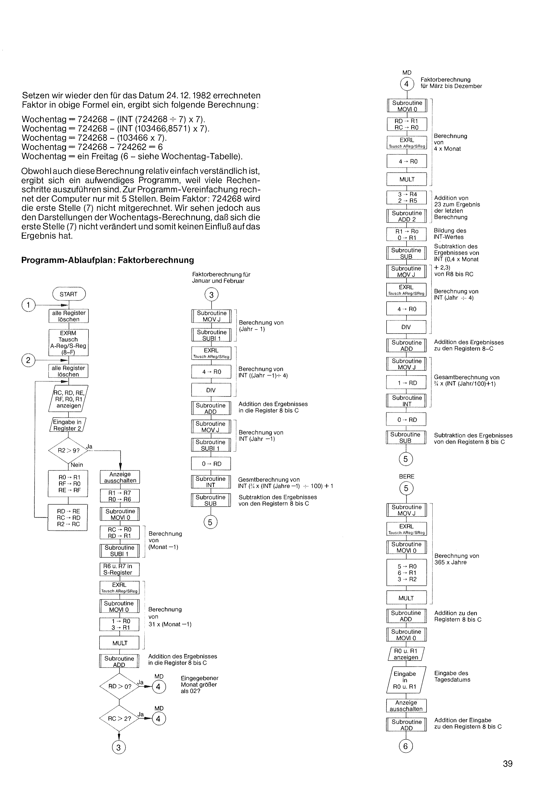
If we again insert the factor calculated for the date 24 December 1982 into the formula above, the following calculation results:
Although this calculation, too, is relatively easy to understand, it results in an elaborate program, because many computation steps have to be carried out. To simplify the program, the computer works with only 5 digits. In the factor 724268, the first digit (7) is not included in the calculation. However, we see from the representations of the weekday calculation that the first digit (7) does not change and therefore has no influence on the result.
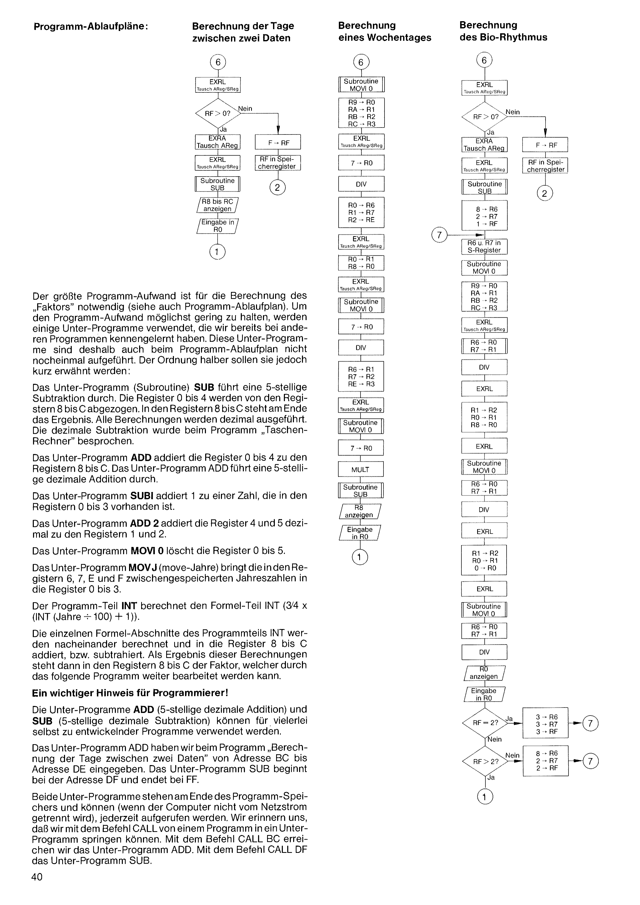
The greatest programming effort is required for calculating the „factor“ (see also the program flow chart). To keep the programming effort as low as possible, several subroutines are used that we have already met in other programs. These subroutines are therefore not listed again in the program flow chart. For the sake of completeness, however, they shall be mentioned briefly:
The subroutine SUB performs a 5-digit subtraction. Registers 0 to 4 are subtracted from registers 8 to C. The result is left in registers 8 to C. All calculations are carried out in decimal. Decimal subtraction was discussed in the „pocket calculator“ program.
The subroutine ADD adds registers 0 to 4 to registers 8 to C. The subroutine ADD performs a 5-digit decimal addition.
The subroutine SUBI adds 1 to a number present in registers 0 to 3.
The subroutine ADD 2 adds registers 4 and 5 in decimal to registers 1 and 2.
The subroutine MOVI 0 clears registers 0 to 5.
The subroutine MOV J (move-years) brings the year values temporarily stored in registers 6, 7, E, and F into registers 0 to 3.
The program section INT calculates the formula part INT(3/4 × (INT(Years ÷ 100) + 1)).
The individual formula segments of the INT program section are calculated one after another and added to or subtracted from registers 8 to C. As the result of these calculations, registers 8 to C then hold the factor, which can be processed further by the following program.
The subroutines ADD (5-digit decimal addition) and SUB (5-digit decimal subtraction) can be used for a wide variety of programs you develop yourself.
We entered the subroutine ADD in the program „Calculating the days between two dates“ from address BC to address DE. The subroutine SUB begins at address DF and ends at FF.
Both subroutines are located at the end of the program memory and can be called at any time (provided the computer is not disconnected from mains power). We recall that with the CALL command we can jump from a program into a subroutine. With the command CALL BC we reach the subroutine ADD; with the command CALL DF, the subroutine SUB.
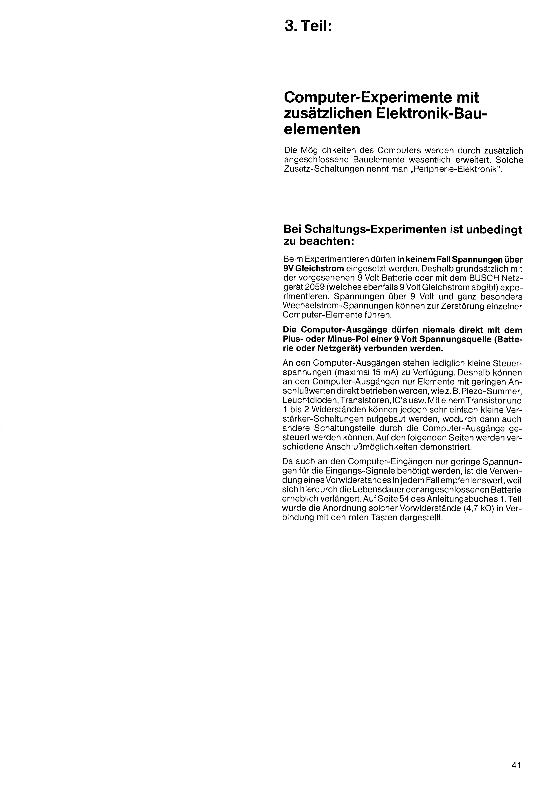
The computer’s capabilities are considerably expanded by additionally connected components. Such add-on circuits are called „peripheral electronics“.
When experimenting, under no circumstances may voltages above 9 V DC be used. Therefore always experiment only with the intended 9-volt battery or with the BUSCH power supply 2059 (which likewise delivers 9 volts DC). Voltages above 9 volts — and AC voltages in particular — can destroy individual computer elements.
The computer outputs must never be connected directly to the plus or minus pole of a 9-volt voltage source (battery or power supply).
At the computer outputs, only small control voltages (maximum 15 mA) are available. Therefore only elements with low power requirements can be driven directly from the computer outputs, such as piezo buzzers, light-emitting diodes, transistors, ICs, and so on. With one transistor and 1 to 2 resistors, however, small amplifier circuits can very easily be built, through which other circuit parts can then also be controlled by the computer outputs. On the following pages, various connection options are demonstrated.
Since the computer inputs, too, need only small voltages for the input signals, using a series resistor is advisable in every case, because this considerably extends the life of the connected battery. On page 54 of the instruction book, Part 1, the arrangement of such series resistors (4.7 kΩ) in connection with the red keys was shown.
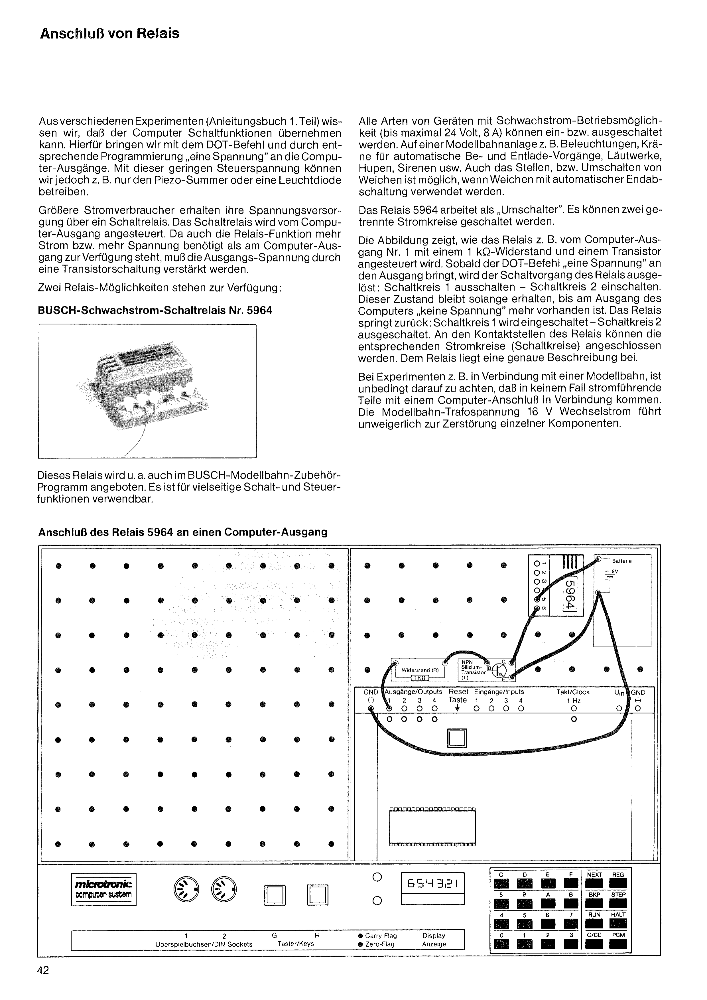
From various experiments (instruction book, Part 1) we know that the computer can take over switching functions. For this, with the DOT command and appropriate programming, we put „a voltage“ on the computer outputs. With this small control voltage, however, we can drive only, say, the piezo buzzer or a light-emitting diode.
Larger current consumers get their power supply via a switching relay. The switching relay is driven from the computer output. Since the relay function too needs more current or voltage than is available at the computer output, the output voltage must be amplified by a transistor circuit.
Two relay options are available:
All kinds of devices capable of low-current operation (up to a maximum of 24 volts, 8 A) can be switched on or off — on a model-railway layout, for example, lighting, cranes for automatic loading and unloading, bells, horns, sirens, and so on. Setting or switching points is also possible if points with automatic end shut-off are used.
The 5964 relay works as a „changeover switch“. Two separate circuits can be switched.
The figure shows how the relay is driven, e.g. from computer output no. 1 with a 1 kΩ resistor and a transistor. As soon as the DOT command puts „a voltage“ on the output, the relay’s switching action is triggered: circuit 1 off – circuit 2 on. This state is held until „no voltage“ is present at the computer output any longer. The relay springs back: circuit 1 on – circuit 2 off. The corresponding circuits can be connected at the relay’s contacts. A detailed description is supplied with the relay.
For experiments — e.g. with a model railway — it is essential that live parts never come into contact with a computer connection. The model-railway transformer voltage of 16 V AC will inevitably destroy individual components.
This relay is also offered, among other places, in the BUSCH model-railway accessory range. It can be used for a wide variety of switching and control functions.
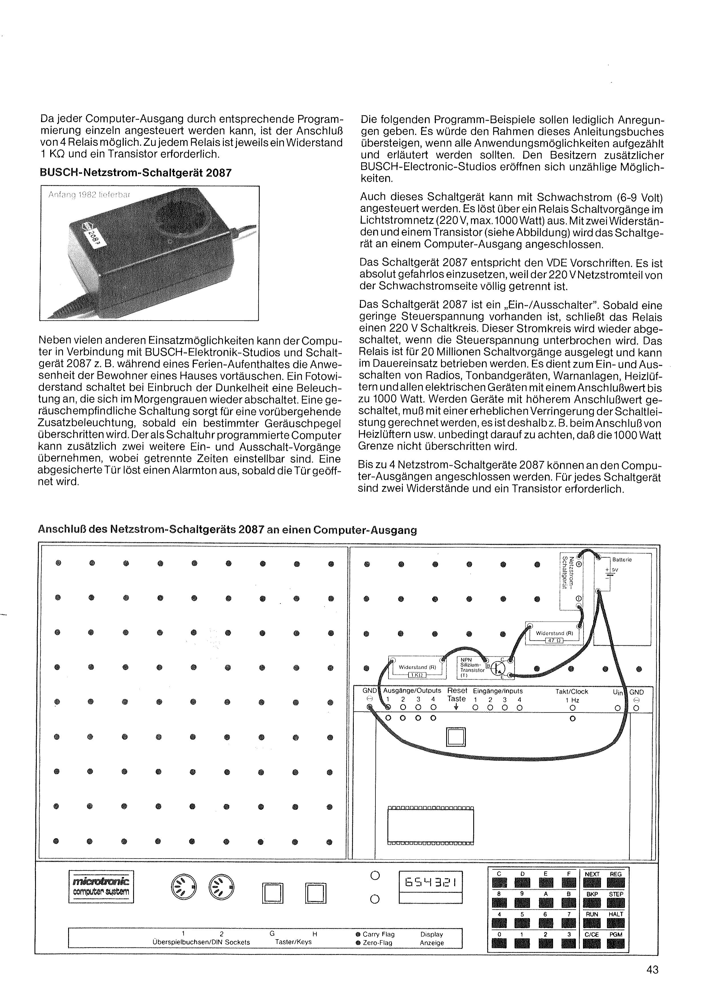
Since each computer output can be driven individually with appropriate programming, up to 4 relays can be connected. Each relay requires one 1 kΩ resistor and one transistor.
Besides many other uses, the computer — together with BUSCH Electronic Studios and the 2087 switching unit — can, for example, simulate the presence of a house’s occupants during a holiday absence. A photoresistor switches a light on at nightfall, which switches off again at dawn. A noise-sensitive circuit provides temporary extra lighting whenever a certain noise level is exceeded. Programmed as a timer, the computer can also handle two further on/off actions, with separate times settable. A secured door triggers an alarm tone as soon as the door is opened.
The following program examples are meant only as suggestions. Listing and explaining every possible application would go beyond the scope of this instruction book. For owners of additional BUSCH Electronic Studios, countless possibilities open up.
This switching unit, too, can be driven with low current (6–9 volts). Via a relay it triggers switching operations in the 220 V mains lighting circuit (220 V, max. 1000 watts). With two resistors and a transistor (see figure), the unit is connected to a computer output.
The 2087 switching unit complies with the VDE regulations. It is completely safe to use, because the 220 V mains section is fully isolated from the low-current side.
The 2087 switching unit is an „on/off switch“. As soon as a small control voltage is present, the relay closes a 220 V circuit; this circuit is switched off again when the control voltage is interrupted. The relay is designed for 20 million switching operations and can run continuously. It switches radios, tape recorders, warning systems, fan heaters and all electrical devices rated up to 1000 watts on and off. If devices with a higher rating are switched, a considerable drop in switching capacity must be expected, so when connecting fan heaters and the like it is essential to ensure that the 1000-watt limit is not exceeded.
Up to 4 mains-power switching units 2087 can be connected to the computer outputs. Each unit requires two resistors and one transistor.
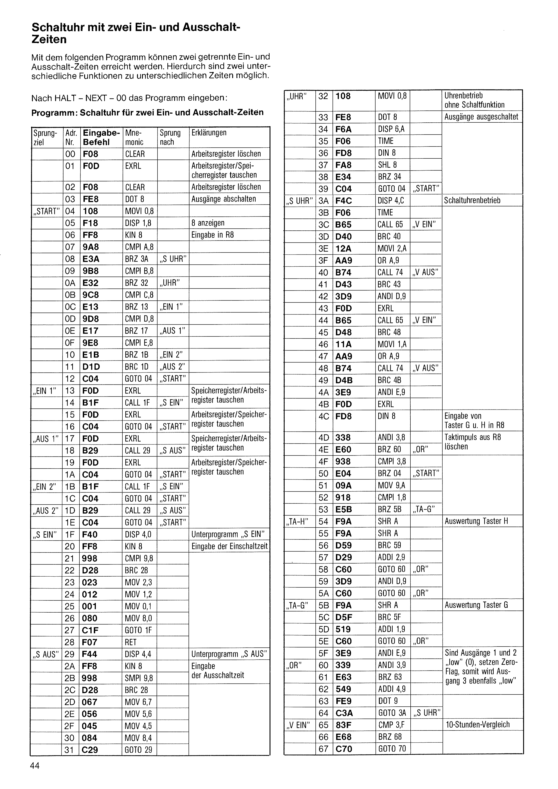
With the following program, two separate on- and off-switching times can be achieved. In this way, two different functions at different times are possible.
After HALT – NEXT – 00, enter the program:
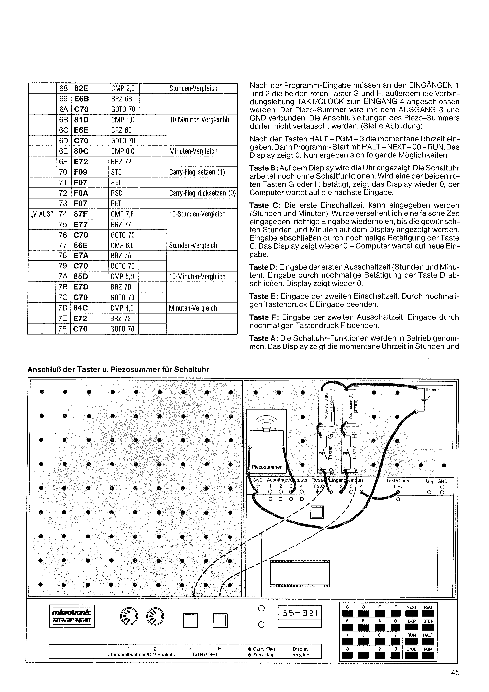
After the program has been entered, the two red buttons G and H must be connected to INPUTS 1 and 2, and in addition the TAKT/CLOCK connecting lead to INPUT 4. The piezo buzzer is connected to OUTPUT 3 and GND. The connecting leads of the piezo buzzer must not be interchanged. (See figure.)
After the keys HALT – PGM – 3, enter the current time of day. Then start the program with HALT – NEXT – 00 – RUN. The display shows 0. Now the following options arise:
Button B: The clock is shown on the display. The timer clock is still working without switching functions. If one of the two red buttons G or H is pressed, the display shows 0 again and the computer waits for the next entry.
Button C: The first switch-on time can be entered (hours and minutes). If a wrong time was entered by mistake, repeat the correct entry until the desired hours and minutes are shown on the display. Finish the entry by pressing button C again. The display shows 0 again – the computer waits for a new entry.
Button D: Entry of the first switch-off time (hours and minutes). Finish the entry by pressing button D again. The display shows 0 again.
Button E: Entry of the second switch-on time. End the entry by pressing button E once more.
Button F: Entry of the second switch-off time. End the entry by pressing button F once more.
Button A: The timer-clock functions are put into operation. The display shows the current time of day in hours and
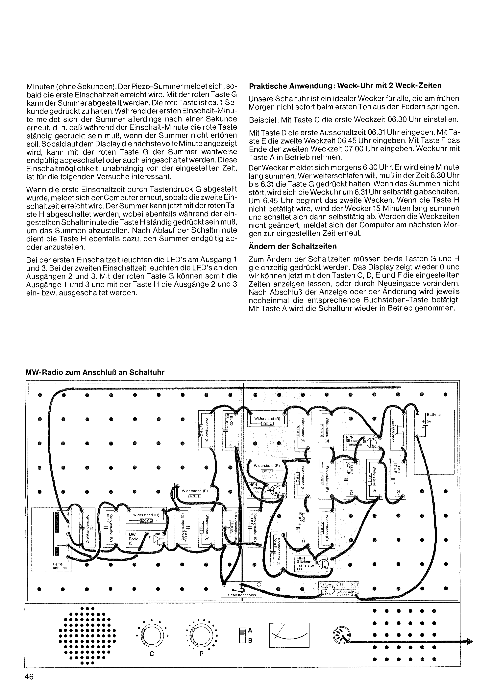
minutes (without seconds). The piezo buzzer sounds as soon as the first switch-on time is reached. The buzzer can be silenced with the red button G. The red button has to be held down for about 1 second. During the first switch-on minute, however, the buzzer sounds again after one second — i.e. during the switch-on minute the red button must be held down continuously if the buzzer is not to sound. As soon as the next full minute is shown on the display, the buzzer can be switched off for good, or switched back on, with the red button G. This switch-on option, independent of the set time, is of interest for the following experiments.
When the first switch-on time has been turned off by pressing G, the computer signals again as soon as the second switch-on time is reached. The buzzer can now be silenced with the red button H, where again button H must be held down continuously during the set switching minute in order to stop the buzzing. After the switching minute has elapsed, button H likewise serves to switch the buzzer off or on for good.
At the first switch-on time, the LEDs at output 1 and 3 light up. At the second switch-on time, the LEDs at outputs 2 and 3 light up. With the red button G, outputs 1 and 3 can thus be switched on or off, and with button H outputs 2 and 3.
Our timer clock is an ideal alarm clock for anyone who doesn’t leap out of bed at the very first tone in the early morning.
Example: with button C, set the first alarm time to 06:30.
With button D, enter the first switch-off time 06:31. With button E, enter the second alarm time 06:45. With button F, enter the end of the second alarm time 07:00. Put the alarm clock into operation with button A.
The alarm goes off at 6:30 in the morning. It buzzes for one minute. Anyone who wants to sleep on must hold button G down between 6:30 and 6:31. If the buzzing doesn’t disturb you, the alarm clock switches off by itself at 6:31. At 6:45 the second wake-up begins. If button H is not pressed, the alarm buzzes for 15 minutes and then switches off automatically. If the alarm times are not changed, the computer signals again at the set time the next morning.
To change the switching times, both buttons G and H must be pressed at the same time. The display shows 0 again, and we can now use buttons C, D, E and F to display the set times, or change them by entering new ones. After finishing the display or the change, the corresponding letter button is pressed once more in each case. With button A, the timer clock is put back into operation.
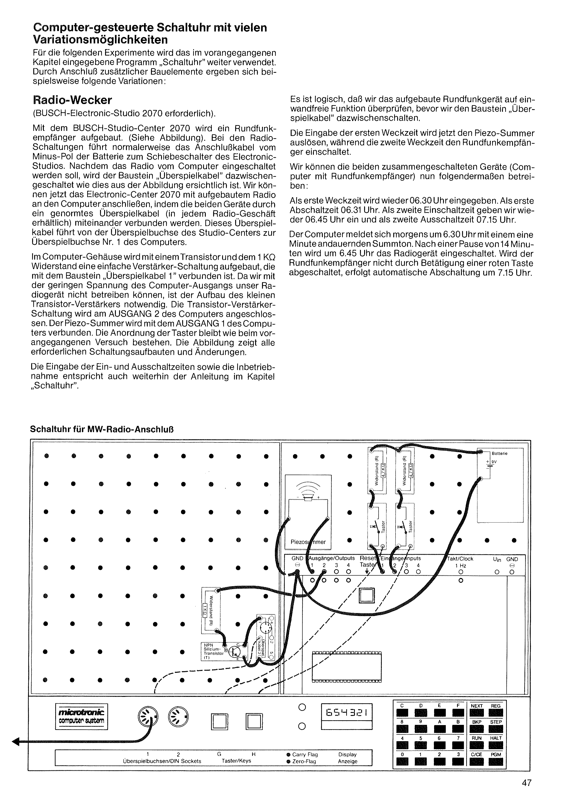
For the following experiments, the „Schaltuhr“ program from the previous chapter continues to be used. By connecting additional components, the following variations arise, for example:
With the BUSCH Studio Center 2070, a radio receiver is built. (See figure.) In radio circuits, the connecting cable normally runs from the minus pole of the battery to the slide switch of the Electronic Studio. Since the radio is to be switched on by the computer, the „Überspielkabel“ (patch-cable) module is connected in between, as can be seen from the figure. We can now connect the Electronic Center 2070 with the assembled radio to the computer by joining the two devices with a standard patch cable (available at any radio shop). This patch cable runs from the patch socket of the Studio Center to patch socket no. 1 of the computer.
In the computer housing, a simple amplifier circuit is built with a transistor and the 1 kΩ resistor, connected to the „Überspielkabel 1“ module. Since we cannot operate our radio set with the low voltage of the computer output, building the small transistor amplifier is necessary. The transistor amplifier circuit is connected to OUTPUT 2 of the computer. The piezo buzzer is connected to OUTPUT 1 of the computer. The arrangement of the buttons stays the same as in the previous experiment. The figure shows all the required circuit assemblies and changes.
Entering the switch-on and switch-off times, as well as putting it into operation, still follows the instructions in the „Schaltuhr“ (timer clock) chapter.
It makes sense to check the assembled radio set for perfect operation before connecting the „Überspielkabel“ module in between.
Entering the first alarm time will now trigger the piezo buzzer, while the second alarm time switches on the radio receiver.
We can now operate the two interconnected devices (computer with radio receiver) as follows:
The first alarm time is again entered as 06:30, the first switch-off time as 06:31. As the second switch-on time we again enter 06:45, and as the second switch-off time 07:15.
The computer signals at 6:30 in the morning with a buzzing tone lasting one minute. After a 14-minute pause, the radio set is switched on at 6:45. If the radio receiver is not switched off by pressing a red button, it switches off automatically at 7:15.
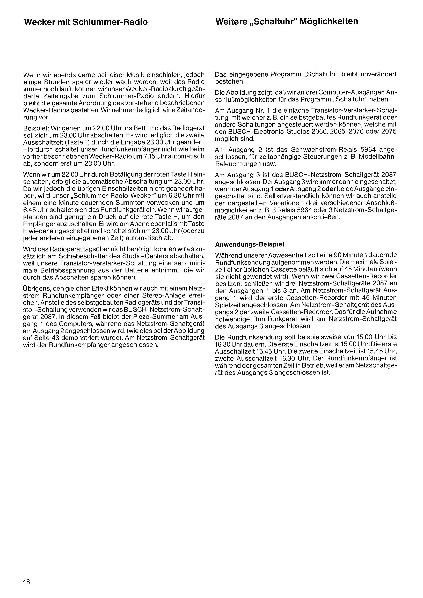
If we like to fall asleep to quiet music in the evening but wake up again a few hours later because the radio is still playing, we can turn our radio alarm clock into a snooze radio by changing the time entry. For this, the entire arrangement of the radio alarm clock described above stays in place. We merely make a change to the times.
Example: we go to bed at 22:00 and want the radio to switch off at 23:00. Only the second switch-off time (button F) is changed, by entering 23:00. As a result, our radio receiver does not switch off automatically at 7:15, as with the radio alarm clock described earlier, but only at 23:00.
If we switch on at 22:00 by pressing the red button H, automatic switch-off occurs at 23:00. Since we have not changed the other switch-on times, however, our „Schlummer-Radio-Wecker“ (snooze-radio alarm clock) will pre-wake us at 6:30 with a buzzing tone lasting one minute, and at 6:45 the radio switches on. Once we have got up, a single press of the red button H is enough to switch off the receiver. In the evening it is switched on again with button H, and switches off automatically at 23:00 (or at any other entered time).
If the radio is not needed during the day, we can additionally switch it off at the slide switch of the Studio Center, because our transistor amplifier circuit draws a very small operating voltage from the battery, which we can save by switching off.
Incidentally, we can achieve the same effect with a mains-powered radio receiver or a stereo system. Instead of the home-built radio and the transistor circuit, we use the BUSCH mains-power switching unit 2087. In this case the piezo buzzer stays on output 1 of the computer, while the mains-power switching unit is connected to output 2 (as was shown in the figure on page 43). The radio receiver is connected to the mains-power switching unit.
The entered „Schaltuhr“ program stays unchanged.
The figure shows that we have connection options at three computer outputs for the „Schaltuhr“ program.
At output no. 1, the simple transistor amplifier circuit, with which, for example, a home-built radio or other circuits can be driven — circuits that are possible with the BUSCH Electronic Studios 2060, 2065, 2070 or 2075.
At output 2, the low-current relay 5964 is connected, for time-dependent control tasks such as model-railway lighting, etc.
At output 3, the BUSCH mains-power switching unit 2087 is connected. Output 3 is switched on whenever output 1 or output 2 or both outputs are switched on. Of course, instead of the variations shown with three different connection options, we could also connect, for example, 3 relays 5964 or 3 mains-power switching units 2087 to the outputs.
During our absence, a 90-minute radio broadcast is to be recorded. The maximum playing time of an ordinary cassette is 45 minutes (if it is not turned over). If we own two cassette recorders, we connect three mains-power switching units 2087 to outputs 1 to 3. The first cassette recorder, with 45 minutes of playing time, is connected to the mains-power switching unit on output 1; the second cassette recorder to the mains-power switching unit on output 2. The radio set needed for the recording is connected to the mains-power switching unit on output 3.
The radio broadcast is to last, for example, from 15:00 to 16:30. The first switch-on time is 15:00, the first switch-off time 15:45. The second switch-on time is 15:45, the second switch-off time 16:30. The radio receiver is in operation the whole time, because it is connected to the mains switching unit on output 3.
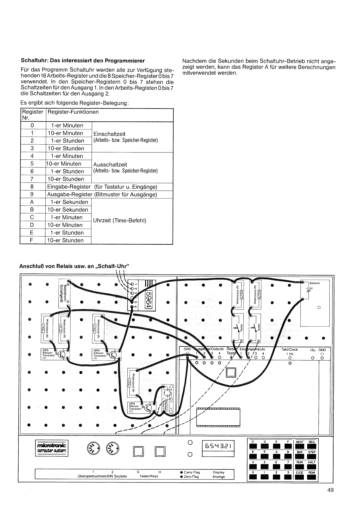
For the „Schaltuhr“ program, all 16 available working registers and the 8 memory registers 0 to 7 are used. The memory registers 0 to 7 hold the switching times for output 1; the working registers 0 to 7 hold the switching times for output 2.
This gives the following register allocation:
Since the seconds are not shown in timer-clock operation, register A can also be used for further calculations.
| Register no. | Register functions | |
|---|---|---|
| 0 | Minutes (ones) | Switch-on time (working or memory register) |
| 1 | Minutes (tens) | |
| 2 | Hours (ones) | |
| 3 | Hours (tens) | |
| 4 | Minutes (ones) | Switch-off time (working or memory register) |
| 5 | Minutes (tens) | |
| 6 | Hours (ones) | |
| 7 | Hours (tens) | |
| 8 | Input register (for keypad and inputs) | |
| 9 | Output register (bit pattern for outputs) | |
| A | Seconds (ones) | Time of day (TIME command) |
| B | Seconds (tens) | |
| C | Minutes (ones) | |
| D | Minutes (tens) | |
| E | Hours (ones) | |
| F | Hours (tens) | |
The functions follow from the flow chart. At START (first column) we find the usual input routine. The abbreviations used are:
In program part 3, the clock runs without switching capability. The SHL command (shift left) removes the clock pulse present at input 4 from register 8, so that no jump back to START occurs.
The timer-clock function is in program part 2, S UHR. The current time is compared with the entered switching times in the subroutines V EIN (compare switch-on time) and V AUS (compare switch-off time). There the carry flag is set (value 1) while a switching time does not match the current time, and reset (value 0) when it matches. Querying the carry flag, the main program switches the individual outputs on or off via the AND/OR commands.
In program part 2, S UHR, it is checked whether one of the two red buttons was pressed, and the outputs are switched accordingly. As long as neither red button G nor H is pressed, register 8 holds 0 and the following program part is skipped.
If, however, both red buttons were pressed, register 8 has the value 3 (binary: 0011) and a jump back to the program part START occurs.
The next comparison, „Is the value 1 present in register 8?“, determines whether the red button G or H was pressed. When button G is pressed, a jump to program part TA G (button G) occurs. Since the command MOV 9,A occurs earlier at address 51, the content of register A is identical to the content of register 9. In program part TA G, the command SHR A determines whether output 1 is „high“ or „low“, i.e. switched on or off. With a „high“ at output 1 (binary: 0001), the SHR command (shift right) sets the carry flag and the command ANDI E,9 (binary: 1110) switches the output off. If, however, the output was „low“, it is switched on by the command ADDI 1,9 (binary: 0001).
The same applies in principle to program part TA H (button H).
In program part OR, it is determined whether one of the two outputs no. 1 or 2 is „high“, i.e. switched on. If outputs no. 1 or 2 are switched on, output 3 is also switched on.
(BUSCH Electronic Studio no. 2060 or 2065 or 2070 required).
After HALT – NEXT – 00 we enter the short program:
Program start: HALT – NEXT – 00 – RUN. The display shows 0. Now briefly press the number key 0. Then build the small additional electronic circuit as shown in the figure.
Owners of an Electronic Studio 2060 or 2065 build the circuit directly in the computer housing. Owners of the larger Electronic Studio 2070 build the circuit in the studio housing and run the corresponding connecting cables to computer outputs no. 1 to 4. Since both the Studio Center 2070 and the computer have dubbing sockets, the lines intended for the computer outputs can first also be routed to the „Überspielkabel“ (patch-cable) module. In this case the „Überspielkabel“ module is also used on the computer, and from there the connecting lines to the computer outputs are made. Care must then be taken to use the same numbering for the connections on both „Überspielkabel“ modules. The two devices can now be connected to each other with a standard patch cable.
If we now press number key no. 4 on the computer, a tone sounds. Entering the number 5 gives a higher tone. If we press the number and letter keys one after another, 12 tones are available. When key 0 is pressed, tone generation is interrupted until a number or letter key is pressed again.
The pitch can be adjusted with the rotary knob of the potentiometer. This is necessary in order to obtain a scale-like arrangement. With keys 1 to 3, no „usable“ tones result.
Our mini-organ has the disadvantage that, in the version now programmed, continuous tones are produced. We can change the programming so that a key press generates only single tones. After HALT – NEXT – 00 we enter the following program:
Program start: HALT – NEXT – 00 – RUN. The display shows 0, and the computer produces a continuous tone until key 0 is pressed. If the various number and letter keys are now pressed, tones result that switch off automatically after a short time. We can shorten the tone sequence further by changing the ADDI command at address 03 from 511 to 521 (or 541, or 581).
We already got to know the first program entered on page 16 in Part 1 of the instruction book (binary system). Depending on the key pressed, a binary value is placed on the outputs. The corresponding LEDs at the outputs light up. Outputs with lit LEDs are „high“, i.e. a small voltage of about 3 to 5 volts is present there.
In the additional electronic circuit, transistors T1 and T2 are connected as an astable multivibrator. A base voltage reaches the base of transistor T2 via computer outputs no. 1 to 4, and is varied by the various resistors. This gives a variable tone frequency.
If all outputs are „low“ (LEDs off, display shows 0), transistor T2 lacks the base voltage, so no oscillations can be generated. If key 1 is pressed (LED at output 1 lights up), the 10 kΩ resistor (22 kΩ in the Studio 2070) produces a very small base voltage, not yet sufficient to generate tone oscillations. By pressing the various number and letter keys, however, different resistor combinations arise, through which oscillations are produced in the various tone-frequency ranges.
The sound volume can be improved with the amplifier module of the inexpensive Electronic Studio add-on set „IC-Verstärker-Technik 2072“ (IC amplifier technology 2072). The 2072 instruction book shows how the amplifier module is arranged in such circuits.
It has already been explained that, for additional electronic circuits, the voltages available at the computer outputs must be amplified — i.e. that an additional voltage source (battery or BUSCH power supply 2059) is required. In all such circuits, the minus pole of the battery must also be connected to the minus pole of the computer. The minus pole of the computer is called „ground“ (GND). On the computer board we find a GND socket both on the left and on the right. For electronic circuits, the left GND socket should always be used. The right GND socket is only for the battery connection, to power the RAM during a mains-power interruption.
The computer has a socket labeled Uin. This must never be connected to the minus pole of the battery (danger of short circuit!).
In the second program version (mini-organ with short-tone generation), the ADDI command at address 03 is responsible for the tone length. The constant value 1 is continuously added to register 1 (an automatic counter) until a carry results, which triggers the zero flag. If the ADDI command is changed so that, for example, the constant value 2 is added, the counting process is accelerated and tone generation is shortened.
The experimental setup also remains in place for the following experiment.
The computer is to compose melodies on its own, with long and short, high and low tones. An interesting experiment, for which the same circuit setup as for the preceding mini-organ is used.
Only a new programming is required. So that the computer's tone generation does not disturb us while programming, one of the connecting leads to the battery is disconnected. After HALT – NEXT – 00, enter the following program:
Program start with HALT – NEXT – 00 – RUN. The display shows: 000000. Reconnect the connecting lead to the battery. As soon as a number or letter key is pressed, the computer composes random melody sequences.
The program is stopped with HALT – NEXT – 00 – RUN. The melody generator carries on working as soon as a number or a letter is entered. Ever-new melody variations result.
Further variation possibilities arise by changing the DISP command at address 02. We change the entry F60 there to F10. Don't forget the NEXT key, then a new program start. Now completely different melody sequences result. We can change the DISP command several times, and again and again new variations result.
A very easily surveyable program. By means of the RND command, a random number is loaded into registers D to F, and to help chance along a little, the numeric value entered after program start is added into register D.
The value in register D is responsible for the pitch. By counting the random number down in register E, the tone length is produced.
The experimental setup also remains in place for the following experiment.
In the preceding experiments we produced tones by pressing keys, or got the computer, with the help of the random generator, to compose melodies on its own.
With this program we want to teach the computer to play „proper melodies“ automatically. So that flawless tone sequences result, the circuit setup with the Electronic Studio 2070 (see page 53) is required. Anyone who owns the smaller Electronic Studio 2060 can obtain the two still-missing components via the BUSCH spare-parts service (see page 53 for this):
Order no. 206691 disc capacitor 100 nF
Order no. 206891 resistor 22 kΩ
(Please transfer DM 3.50 incl. postage and packing to postal-cheque account Karlsruhe no. 57 614-751, Busch GmbH & Co. KG, and state the order numbers on the payee section).
With the following program the computer, together with the connected electronic circuit, plays the three well-known melodies one after another: „Sentimental Journey – Hänschen klein – Du, Du liegst mir am Herzen“.
Before we begin the programming after HALT – NEXT – 00, the electronic circuit is put out of operation by disconnecting the battery cable.
Reconnect the battery cable to the electronic circuit. Program start with HALT – NEXT – 00 – RUN.
The computer immediately begins to play the 3 melodies one after another, repeating them until the green RESET button on the computer board is pressed. A new program start is made as usual with HALT – NEXT – 00 – RUN.
With the rotary knob of the potentiometer, the pitch can be trimmed a little if the melodies are not played in the correct key.
If the owners of the Electronic Studios 2060 or 2065 do not have the two aforementioned components sent to them, this experiment can still be carried out; however, wrong tone sequences must then be accepted in some places.
Through hexadecimal entries, binary values are placed on the outputs, whereby the desired „high“ and „low“ states arise there. Depending on which outputs — and how many of the outputs — are „high“, the various pitches are played.
To get the computer to play particular melodies, the required tones must be produced in the correct order by the corresponding binary values at the outputs. We must know which resistor combination of our circuit produces the desired tone. The programming of the tone sequences follows accordingly.
Since the 3 melodies consist of a whole host of individual tones, a longer program is required, because every single tone has to be programmed.
Nevertheless, even without a program flow chart, a simple and clear presentation results, because the entire „tone program“ is carried out with pitch in register 0 and tone length in register 2.
The MOVI commands bring the hexadecimal values for the binary representation at the outputs into register 0. The CALL commands cause a jump into the subroutine (from address 02 to 0A), whereby the corresponding outputs are activated for a short time.
The MOVI commands also take care of the tone lengths, by bringing either the value 0 (short tones) or the value 1 (long tones) into register 2. If register 2 has the content 1, a continuous tone results, which changes only with the next following tone. If register 2 holds the value 0, a short tone arises — i.e. a short pause results between two tones. The melody „Sentimental Journey“ begins at address 0B. The command MOVI 1,2 brings the value 1 into register 2, i.e. all following tone commands produce continuous tones. With the following command MOVI 8,0, the value 8 is brought into register 0 (binary: 1000), i.e. output 4 becomes „high“ and the corresponding tone is produced by the electronic circuit. Each MOVI command is followed by a CALL command. Through this constant jumping back and forth between the „melody program“ and the „subroutine“, the melody sequence results.
The melody „Hänschen klein“ results from address 4E onward, where the command MOVI 0,2 brings the value 0 into register 2, so that all following tones are „played short“.
In the melody „Du, Du liegst mir am Herzen“, registers 0 and 2 are addressed alternately, because both long and short tones are required for this melody.
It should not be difficult for us to program the computer ourselves with a melody that we particularly like.
The „computer games“ offered in shops are often bought because of their acoustic effects. Many a game can be made more interesting through an acoustic representation of the score reached.
The game „The Moon Landing“ (page 23, instruction book Part 1) becomes considerably more effective through acoustic signals at the end of the game.
Let's try it out!
We enter the Moon Landing program once again. Apart from a few commands, the program can be taken over from page 24:
At address 56 (FE6), the change to CA5 is required. At address 6D (1FF) it is changed to C99. At address 7F (C6D) it is replaced by C90, and address 84 (C6D) by C9F.
Then the program is extended from address 90 onward. We carry out the additional reprogramming after HALT – NEXT – 90:
The tone-generating circuit from the preceding experiments is also used unchanged for this experiment.
After HALT – NEXT – 00 – RUN, the program is put into operation in the same way as described on page 23 of instruction book Part 1. At the end of the game, additional acoustic effects now result, which are matched to the game result by a corresponding tone sequence:
Soft landing of the lunar module = melodic tone sequence of high and low tones.
Lunar module has smashed on the lunar surface = simultaneously rising and falling melody sequence.
Fuel supply used up = repeatedly falling tone sequence.
Lunar module vanishes into space = rapidly rising tone sequence.
The game „Moon Landing“ is now perfect. The short additional program shows how such games can be made even more interesting through acoustic effects. The individual tone-program parts can also be adopted afterward for other game programs. (Note the command changes for the jumps to the subroutine!)
Where there is light, there is also shadow! Through this effect, counting effects can be achieved with light barriers, in that an illuminated photoresistor passes on the change between light and dark to the computer input by changing the voltage.
We build the electronic circuit according to the figure. The photoresistor should be illuminated by daylight or by the light of a lamp. By slowly turning the potentiometer knob, the circuit is adjusted so that the light bulb just goes out. If the photoresistor is then darkened somewhat — e.g. by the shadow of a hand held over it — the little bulb must light up.
After the electronic circuit has been connected to the computer, we carry out the programming after HALT – NEXT – 00:
Program start: HALT – NEXT – 00 – RUN. The display shows 00.
As soon as we bring a shadow onto the photoresistor (e.g. with the hand), this light–dark change is counted. The display shows 01 (i.e. how often a shadow was registered by the photoresistor). With the red button H, the counter can be reset to 0 again.
If the connecting cable is extended, the photoresistor can be mounted, for example, on a door. The computer then counts how many people have entered a room through this door.
With a focused beam of light, objects can be counted, e.g. on a conveyor belt. The circuit can also be used as a lap counter for model railways or electric slot-car tracks, and so on, and so on.
We can also use two light barriers, by slightly modifying the existing program and programming a second counter.
If two light barriers are mounted next to each other — e.g. at the entrance of a building — it could be determined in the evening how many people have entered and left the building again. A compare command could check on which of the two light barriers a shadow was registered first, whereby the first shadow triggers an up-counting effect and the second shadow a down-counting effect. If a difference appears on the display, it would be possible to determine, for example, that a certain number of people are still in the building.
On the basis of the knowledge acquired so far, it should be possible, with a little thought, to program suitable applications for light barriers yourself.
With a slot-car racing track, for instance, the possibility arises — by incorporating the BUSCH relay 5964 — to automatically switch off the driving current for the cars at a certain preset number of laps, etc.
(BUSCH Digital Studio 2075 required)
We enter the program as usual:
The circuit setup of the light barrier is familiar to us from instruction book 2065 or 2070. In addition, only the two 4.7 kΩ resistors have been inserted, in order to achieve the lowest possible current consumption of the battery.
By means of the command DIN 0, the input value is stored in register 0. With ANDI 3,0, the third and fourth binary digit (i.e. at inputs 3 and 4) are set to 0, so that, for example, a clock connected to input 4 (if we happen to be running the clock program alongside) does not destroy the subsequent comparisons.
Then a comparison is made as to whether the same value is present in registers 0 and 3. If „yes“, the input value has not changed and a jump back to address 02 occurs. If „no“, the input value is stored in registers 0 and 3. By means of the compare command CMPI it is determined: the value 1 is in register 0, i.e. the light barrier was not interrupted, and a jump to address 02 occurs. If the register content is greater than 1, the red button H was pressed, and a jump to address 00 occurs, to clear all registers. Otherwise, register 0 gives the value 0, i.e. the light barrier was interrupted. In the following decimal counter program, the interruption is counted as value 1.
Why does an interrupted light barrier give the value 0 in register 0?
The electronic circuit is designed so that, with an uninterrupted light barrier, a small voltage is present at input 1 of the computer — the input is „high“. With an interrupted light barrier (when the lamp on the circuit lights up), no voltage is present at the computer input. This gives a „low“, i.e. the value 0, which is stored in register 0.
For the many interesting experiments with electronic peripheral circuits, appropriate basic knowledge is a prerequisite. The BUSCH Electronic Studios explain a broad palette of electronic possibilities which, in conjunction with the computer, lead to ever-new applications.
In practice, it is often necessary to transmit data from one data-processing system (EDV) to another.
With the IC counter module from the Digital Studio 2075, we can make a register content of our computer visible on the large 7-segment display of the counter module. There are two possibilities for data transmission:
The IC counter module is connected to the computer as shown in the figure.
After the program start, the display shows 0. If a number is entered, it is shown both on the computer display and on the IC counter module.
As long as we enter only numbers, these numbers are also visible on the large 7-segment display. If we enter, for example, C, the number 2 appears on the large 7-segment display.
The IC counter module works only in the decimal range. The hexadecimal C corresponds to the decimal number 12. Since the IC counter module displays only single-digit results, only the last digit — namely the digit 2 — is shown.
If we had several IC counter modules, it would be readily possible to transmit multi-digit results as well. How several IC counter modules are connected can be seen in instruction book 2075.
From instruction book 2075 we know that the IC counter module can „only“ count. The counter module always counts up by one as soon as the voltage at its clock input changes from „high“ to „low“. The counter module can be reset to zero as soon as its RESET input becomes „low“.
So that the IC counter module displays the same number that is entered into the computer, a corresponding number of „high“ – „low“ – „high“ pulses are passed one after another to the IC counter module, which are then
counted by it until the result is displayed. The number of pulses is also counted internally by the computer in register no. 1, so that the computer knows what count the IC counter module has.
By means of the entered program, the value 3 (binary: 0011) is first stored in register 2. In register 3 the value 2 (binary: 0010) and in register 4 the value 1 (binary: 0001) are stored. If a numeric value is now entered into register 0 via the keyboard, register 1 is set to the value 0, and by means of the commands DOT 4 (0001) and DOT 2 (0011) the IC counter module is also set to 0.
Now the comparison follows as to whether the content of register 0 is identical to the content of register 1. If „yes“, then the value shown by the counter module is identical to the entered value. If „no“, the value 1 is added to register 1, and by means of the command DOT 3 (content of register 3 = binary 0010) output 1 is set to zero. By means of the change of the „high“ – „low“ state, the counter module counts up by one, and by means of the command DOT 2 (0011) output 1 becomes „high“ again. This process is continued until the contents of registers 0 and 1 are equal.
This method has two disadvantages.
If, for example, the line connection to the IC module is interrupted by a fault, a wrong result display arises there.
Or if, for example, the value 9 is entered at the computer, the IC counter module begins to count up from 0 to the entered value, which requires a certain amount of time. The advantage of the method, however, lies in the fact that only three lines are necessary for the data transmission.
The following program serves to demonstrate this method; it is entered as usual:
The IC counter module is connected to the computer as shown in the figure. We now need twice the number of transmission lines compared to the previous experiment.
Start the program and enter a number. Compared to the previous experiment, it is displayed considerably faster on the IC counter module. If we now enter a letter, the counter module is „at a loss“ — it counts on infinitely, because it cannot display letters.
We see that a line runs from computer output no. 1 to the clock input of the counter module. The four outputs of the counter module (A, B, C, D) are connected to the four computer inputs. The four outputs of the counter module pass on the displayed number as binary values. These are taken into register 1 of the computer by means of the command DIN 1. The entered program compares this number with the number entered via the keyboard (in register 0), and if both are equal, the result has been reached. Otherwise, by means of the commands DOT 3 and DOT 2, the IC counter is incremented by one and the comparison is repeated until the result is reached. Thus a feedback from the IC counter to the computer results, by which a wrong data transmission is ruled out.
The experiments show that, for example, ICs can be connected directly to the computer inputs and outputs. Since the ICs work with low voltages, no additional amplifier circuits are required for the control.
Incidentally, our IC counter module too has a carry signal (a kind of carry flag) for controlling a second counter module. The output MAX is constantly „high“ and only becomes „low“ when the value 9 is reached, in order to become „high“ again on the transition to 0. With this carry signal, a second counter module — or several — can be controlled.
(BUSCH Electronic Studio 2065 or 2070 required).
Frequency measuring instruments are needed in electronics for checking oscillation-generating circuits. With them, one can determine, for example, the transmitting frequency of a radio transmitter, or the audio frequency of an astable multivibrator.
The measuring principle is the same for all frequency counters. During a defined time (e.g. one second), the number of frequency pulses is counted and evaluated. Our experiment works on this principle too.
Before we start the program, the circuit is to be built up as shown in the figure. The connecting lead marked with ⊕ is connected to INPUT 4 of the computer. The lead marked with ⊖ leads to the GND socket of the computer.
On the computer board, TAKT/CLOCK is to be connected to INPUT 1.
The assembly plan (figure) is authoritative when the large Electronic Studio 2070 is available. If only the Electronic Studio 2065 is present, the 3 components shown directly to the left of the battery are omitted (loudspeaker, transistor and 22 kΩ resistor). In this case, the earphone is to be used (drawn in the plan with a dotted line). The connecting lead between the two 22 kΩ resistors is omitted, and the connecting lead from the plus pole of the battery leads directly to the 1 kΩ resistor (top center).
Start the program and put the electronic circuit into operation (slide switch in position A). As long as the potentiometer knob is at the far left stop, no tone is produced in the loudspeaker (or earphone). The computer display shows 00.
Now we turn the potentiometer knob a little to the right until a slow crackling becomes audible in the loudspeaker (earphone). The computer display shows the frequency of the crackling tone in hertz (oscillations per second). If the potentiometer is turned further to the right, the tone sequence becomes faster — the frequency increases, which is also shown on the display by a higher hertz value.
The potentiometer should always be turned only a small step further, because the computer needs a measuring time of about 2 seconds until the result is displayed.
The further the potentiometer knob is turned to the right, the faster the tone sequence and the higher the frequency display. We will reach a point at which the computer no longer counts along (or shows fluctuating results), although, due to the faster oscillations, the pitch rises and therefore the frequency display ought to be higher.
The frequency generated by our circuit has now become too large (on the display this will be between 30 and 50).
For a following experiment, we should note up to which frequency reading the experiment works. The accuracy of the experiment that follows later depends on as precise a value as possible.
The limit frequency is determined by turning the potentiometer only a very small step further at the critical point, while observing the display. At a certain setting, the displayed value will fluctuate strongly. The potentiometer setting is now reduced just enough that the displayed value no longer changes by more than 3 Hz. We record this value in the following table.
The limit frequency was determined as: . . . . Hz.
It is not possible to determine the frequencies by means of a simple counting program in which the pulses at an input are counted. Our computer works too slowly for high frequencies.
Already at 3 to 4 pulses (oscillations) per second, the computer can no longer count along. This is because our microprocessor is programmed for very versatile applications. It does not only have to count; it monitors the keyboard, it handles the clock program running on in the background, and, and, and…
By means of a simple trick, we can outwit the computer: in the operating system, the time of day runs continuously. This clock program too is a „counter“, which counts the clock pulses at INPUT 4 and evaluates them for the time of day.
This „clock counter“ in the operating system works relatively fast. Therefore, the pulses to be measured are connected to INPUT 4. There, the pulses are counted along and further processed into a kind of „time of day“.
This process can easily be checked by calling the clock program with HALT – PGM – 4 and, at the same time, generating a tone with the connected circuit. We can observe that, depending on the clock frequency of the circuit, the seconds display on the display is shown at considerable speed.
The computer program brings the „time of day“ into registers A to F by means of the TIME command, whereby the values are stored in registers 2 to 7 by means of the EXRA command. Exactly one second later, the „time of day“ is taken over again and stored. If one subtracts the two „times“ from each other, the frequency in hertz (oscillations per second) results.
It must also be ensured that the measuring time between the two TIME commands is exactly one second. For this, the pulses of the 1 Hz TAKT/CLOCK output are used. As soon as the program is started, the computer waits in a wait loop until the clock signal is „high“ (1) present (see figure, section A).
In a second wait loop, the computer waits until the clock signal becomes „low“, i.e. 0, again (in the figure, section B).
1 second measuring time
Capture of the 1st time
Capture of the 2nd time
At the same moment when the clock signal becomes „low“ (0), the computer takes over the first time reading. With the second wait loop, it is achieved that the signal change to „high“ and back again to „low“ is waited for (exactly 1 second), in order to then take over and evaluate the second time reading.
The two wait loops (sections A and B in the figure) are necessary in order to achieve a defined start of the measuring time. The individual program functions can be seen from the program flow chart. It is not the complete „times of day“ that are subtracted from each other, but only the seconds. When subtracting the tens-of-seconds digit, the decimal correction, on the occurrence of a carry, is carried out by subtracting the hexadecimal value A (decimal 10), because the tens-of-seconds only go up to 5.
The electronic construction of the multivibrator (also called an astable multivibrator) should be familiar from the experiments with the Electronic Studios 2065 or 2070. In our frequency-measuring experiment, the loudspeaker is operated with an additional transistor. This is necessary because the computer needs clean square-wave pulses for the counting process. If the loudspeaker were operated without the second transistor, the coil windings of the loudspeaker could severely distort the square-wave pulses.
The arrangement of the electronic multivibrator circuit also remains in place for the following experiment.
Wait loop A: Is only exited when input 1 goes „high“. By means of the „shift-left“ command, the pulses present at output 8 (the frequency to be measured) are shifted out of the register, so that only the TAKT/Clock pulse is processed.
Wait loop B: Is only exited when input 1 goes „low“.
Capture of the time into Reg. A–F
Storage of the time in Reg. 2–7
2 wait loops for a 1-second measuring time
Capture of the 2nd time
The seconds are subtracted from each other.
Result (frequency is stored in registers 8 and 9 for display. Storage into registers 0 and 1 is necessary so that, after the EXRA command, the frequency display is retained.
Clear all registers
Display R8 and R9
The multivibrator (astable multivibrator) of the previous experiment remains in place unchanged. On the computer board, make the connections as shown in the figure. The plus and minus leads of the multivibrator to the computer board are also shown in the figure. The piezo buzzer is connected only after programming. The program is entered as usual.
Program continues —
please see next page!
If any number key is then pressed, the frequency measurement reappears on the display, and we can check whether the set frequency number „20“ is still correct. As soon as the red button G is pressed again, the next reaction-time measurement begins.
If the red button G is not pressed before the signal tone sounds, or button H is pressed prematurely, an interrupted signal tone sounds to demonstrate that the measurement was not carried out correctly. Incorrect measurements are not counted and are also not included in the calculation of the average time.
False readings (wrong times) can occur if the reaction time of a test subject amounts to several seconds (which hopefully does not apply in our case).
In the previous experiment, „Frequency meter“, we determined the limit frequency of our computer. This can be around 30 Hz (sometimes even 40 or 50 Hz).
At the moment, our reaction-time meter is set to 20 Hz. The accuracy is thus 1/20 second. If our computer has a limit frequency of 30 or 40 or perhaps even 50 Hz, an even more precise reaction-time measurement results, because we can then operate with 1/30, 1/40 or 1/50 seconds.
At a limit value of 30 Hz, a program change at address 44 is required. The existing command MOVI 2,0 (entry 120) is to be changed to MOVI 3,0 (entry 130). The multivibrator is to be adjusted so that the display shows exactly „30“.
If our limit frequency was at or above 40 Hz, the MOVI command is changed to the entry 140. The multivibrator is to be adjusted so that exactly „40“ is shown on the display. At 50 Hz, the MOVI entry is 150 and the display must show „50“.
Up to address 1A, the program is structured similarly to the previous „frequency counter“. However, the SHL commands were replaced by ANDI commands, so that no nonsense can arise in the wait loops when a red button is pressed.
The subtraction of the two „times of day“ is carried out in the subroutine „SUB“.
After the „frequency counter“ program part follows the query as to whether the red button G is pressed. If „yes“, the value 5 is loaded into register 8.
With the RND command (random generator) and the corresponding subtractions, a random waiting time until the start of the signal tone results. Then it is checked whether the red button G was pressed and whether button H was not yet pressed. By means of the command DIN F, the value resulting at the 4 inputs is taken into register F, and by means of the command ANDI 6,F (binary: 0110), the signals at inputs 1 and 4 are cleared. The value 2 (binary: 0010) is then still present in register F if only button G was pressed. If this is not the case, the outputs are switched on and off several times (a rapidly interrupted signal tone as a demonstration that the button operation was not carried out correctly). Otherwise, the continuous tone is switched on by means of the command MOVI F,F and DOT F, and the first „time of day“ is taken over. In a wait loop, the pressing of button H is awaited. Then the second „time of day“ is likewise taken over.
Connect the piezo buzzer. Start the program.
The computer first works as a frequency counter. With the potentiometer knob, the frequency is set until the display shows exactly 20 Hz. In case of any fluctuations in the reading, it must be readjusted until exactly 20 is shown.
With this program, we are able to measure our reaction time very precisely. Perhaps it is interesting to repeat a measurement under unfavorable conditions (lack of sleep, alcohol consumption) as well.
We press the red button G and hold it down until the computer signals with the randomly starting signal tone. Now the red button H must be pressed as quickly as possible. The display shows the reaction time with 3 digits. The left display digit shows the seconds, the middle one the 1/10 seconds, and the right display digit the 1/100 seconds. „040“ therefore means 0.4 seconds.
5 reaction-time measurements in succession are provided for, which is why the red button G is pressed again until the start of the signal tone. The switch to the red button H brings the second measurement.
After the fifth measurement, the display shows: EE XXX. For „X“, 3 numbers are displayed – an average value of the five reaction-time measurements.
In the subroutine „SUB“, the number of counted pulses (frequency measurement) is determined by subtracting the two times of day. At a frequency setting of 20 Hz, the measured pulse count is divided by 2, whereby the reaction time is determined. (At a frequency of 40 Hz it is divided by 4, etc. – command change at address 44).
The determined reaction time is added into the memory registers 8 to A, i.e. after five reaction-time measurements the total time is stored there.
The program waits until button G is pressed. Then the value 1 is subtracted from register 8 (in which the value 5 was present at the start) each time. The measurements are ended as soon as the value 0 is reached in register 8. The sum of the reaction times (in the memory registers 8 to A) is divided by 5, and the average reaction time is displayed.
A digital voltmeter is a voltage-measuring instrument in which the measurement results are displayed digitally, i.e. in directly readable numerical values. Compared with an analog measuring instrument, in which the measurement result is shown by the deflection of a pointer, digital displays are easier to read. In addition, digital measuring instruments work more accurately. However, a greater circuit complexity is also required.
In a digital voltmeter, the voltage (an analog quantity) must be converted into a digital quantity. For this there are special integrated circuits, so-called A/D converters (analog-to-digital converters).
The display accuracy of a digital measuring instrument depends on how many parts the quantity to be measured can be divided into. If, for example, a 10 V voltage is divided into 20 parts, the smallest displayed value (or the smallest voltage difference) works out to a range of 0.5 V. If 10 V is divided into 100 parts, an accuracy of 0.1 V already results.
For the analog-to-digital conversion we again use an „astable multivibrator“, whose construction, however, changes compared with the multivibrator used up to now. We rebuild the circuit according to the figure. TAKT/CLOCK must again be connected to INPUT 1.
The construction plan is authoritative when the large Electronic Studio 2070 is available. When using the Electronic Studio 2065, the 3 components shown directly to the left of the battery are omitted (loudspeaker, transistor and 22 K Ohm resistor). In this case the earphone is to be used (drawn in the plan with a dotted line). The connecting leads to the unused components
are omitted, and the plus pole of the battery is connected directly to the 1 K Ohm resistor (top center).
The leads leading to the computer are again marked with ⊕ and ⊖. As in the previous experiment, the ⊕ lead is again connected to INPUT 4 of the computer board. The ⊖ lead leads to the GND socket. The red buttons G and H that may still be connected are not required.
So that we can „calibrate“ our digital voltmeter, the program must first be entered according to the table.
* At these addresses, note the command changes in the 2nd part of the experiment.
Start the program. The display shows 00. To calibrate the voltmeter we need a 9 V battery that has already been in operation for some time. We deliberately do not use a factory-fresh battery, because such new batteries (despite the corresponding label) usually have 9.6–9.8 V, whereas batteries that have already been in use show quite exactly 9 V when no current is being drawn. The battery is connected to the measuring leads marked with ⊕ and ⊖ (see figure). We turn the potentiometer knob back to the left stop. Nothing can be heard in the earphone or loudspeaker. Now the potentiometer knob is slowly turned to the right in small steps. The loudspeaker (earphone) again produces the familiar crackling sound. We keep turning to the right until the display shows, as exactly as possible, 90 (9.0 V). The computer needs about 2–3 seconds for the measuring process, which is why after each potentiometer setting one must wait for the changed display value.
We will probably find that we will not succeed in calibrating precisely at 9 V. The display may show fluctuating values between 8.4 and 9.5 V. This should not bother us for now.
With our digital voltmeter we can now measure DC voltages up to 9 V. We surely have 1.5 V batteries available in another electrical device (e.g. in a portable radio), so that when using 2 batteries we can measure 3 V, or with 3 batteries 4.5 V, and so on. If we own the Electronic Studio „Digital-Technik 2075“, the very accurately working 5 V socket of the IC counter module can also be used for calibrating and measuring.
In its current form, our digital voltmeter has a measuring accuracy of 0.4 to 0.5 V. With voltages that have intermediate values, the mentioned display fluctuations result.
If, however, in the „Frequency counter“ chapter we found that the limit frequency of our microcomputer is above 40 Hz, the measuring accuracy of our digital voltmeter can be substantially improved. For this, the commands marked with a * in the program table must be exchanged for the commands given in parentheses. So, for example, at address 25 we change the command entered as „170“ to „150“, and so on.
After this program change, the device must be recalibrated as described above. The measuring accuracy of our digital voltmeter is now already about 0.2 V. However, at voltages above 6 V there will still be certain display fluctuations.
Attention! The digital voltmeter can only be used for direct-current measurements up to 9 V. Alternating-current voltages are not displayed. Connecting alternating-current voltages of over 9 V to the measuring leads can lead to the destruction of components.
How does the digital voltmeter work?
Owners of the Electronic Studio „Digital-Technik 2075“ are familiar with the principle of converting an analog voltage into a digital measurement result.
In our experiment, the astable multivibrator generates a frequency which is low at low voltage (slow crackling) and becomes higher as the voltage rises (fast crackling). The computer counts the frequencies and reports them on the display as the voltage measurement result.
Example: The frequency amounts to 20 Hz at a connected voltage of 9 V. The voltage at a frequency of only 10 Hz results from the following formula:
In our currently constructed experiment, the calculation is unfortunately not quite so simple, because the higher or lower frequency is not generated linearly in relation to the connected voltage. If, at a voltage of 9 V, the 20 Hz mentioned in the example are generated, then at a 5 V connection 11 Hz would have to be generated in order to arrive at a correct result. In reality, however, our astable multivibrator does not generate 11 Hz at a connected voltage of 5 V, but 12.5 Hz. If we were to apply the same formula again, we would arrive at the following (incorrect) result:
For the conversion of the frequency into a voltage, we must find a different formula for the astable multivibrator that is available. Taking into account the non-linear frequency generation, the following formula was found through experiments:
If the corresponding frequency, e.g. 20 Hz, is substituted for f, we arrive at the following result:
At 12.5 Hz the result is:
Since our computer cannot measure 12.5 Hz (but only either 12 or 13 Hz), a connected 5 V measuring voltage produces fluctuating display values between 4.7 and 5.2 V.
Up to address 1B, the same program section results as in the „Frequency counter“. The generated frequency is taken into registers A and B. These values move into registers 0 and 1 and are stored in the memory registers 0 and 1.
Then registers 0 and 1 are once again loaded with the contents of registers A and B, and the command MULT is executed. Registers 0 to 5 now contain the square of the frequency. This result is multiplied by 67 (instead of 0.0067 in our previously mentioned formula). The first three digits of this result (in registers 2, 3 and 4) are stored in registers D, E and F.
Registers A and B still contain the measured frequency values, which are now multiplied by 3160 (instead of 0.3160 in our formula).
The result is added into registers D, E and F.
The final result in registers E and F is transferred to registers 8 and 9 (or registers 0 and 1) for the result display.
The program sequence is to be presented clearly once more:
| 1. Measure the frequency (e.g. 14 Hz) | ||
| 2. Square the frequency | 14 × 14 | = 196 |
| 3. Multiply the result by 67: | 196 × 67 | = 13132 |
| 4. Store the first three digits: | = 131 | |
| 5. Multiply the measured frequency 14 Hz by 3160: | 14 × 3160 | = 44240 |
| 6. Add the first three digits to the result of 4: | 131 + 442 | = 573 |
| 7. Display the first two digits | ||
We compare with the formula found earlier:
The computer's calculations agree with this formula. It would be pointless to display the result with 3 digits, because the frequency generated by the astable multivibrator is not accurate enough.
If the frequency is increased to 40 Hz (at 9 V), the formula changes as follows:
This formula change was taken into account in the command changes given in parentheses.
A supplementary pack for exact measurement results is in preparation. This pack contains, among other things, a special A/D converter, temperature sensor, etc., in order to be able to carry out very accurate measurements of voltages, temperatures, light, and so on. By incorporating these measured values – which, for example, are reported by the computer to the outputs when values fall below or rise above set limits – many further application possibilities of the Microtronic computer system arise.
The monitoring and control of a model-railway layout is an interesting application for our computer.
Computer control offers great advantages over the relay circuits customary up to now: if, for example, the control sequence is to be changed, only a change to the computer program is necessary. A correctly executed „hardware wiring“ remains in place unchanged. The computer takes over the fully automatic model-railway operation, and by means of a small additional program this automatic mode can be switched over to semi-automatic or manual operation. One can also intervene in automatic operation, for example when a point setting controlled by the computer is to be changed manually. This point changeover is registered by a computer input. The computer checks whether an „accident“ could occur and diverts the possibly „threatened“ train onto another track – the point in question can be set. If this is not possible, the planned point setting is held back until the endangered train has passed the possibly threatened spot. Only then is the manual point setting released.
The control of so-called „point routes“ can also be a task for the computer.
Some model-railway enthusiasts are of the opinion that only a few connecting cables need be attached to the computer in order to achieve a fully automatically controlled model-railway operation. Now that we have in the meantime occupied ourselves intensively with the possibilities of a microcomputer, it is clear to us that various preparations must be made for such a conversion.
Since the computer works only with direct-current voltages and very small currents, in the following experiments no currents (voltages) from the railway transformer may reach the inputs or outputs of the computer. Points, track sections or other electrical items supplied by the railway transformer may therefore never be connected directly to the computer board.
The danger is great that a careless connection will lead to the destruction of our valuable microcomputer. Thus the computer must be told, via its inputs, which tracks are occupied, in which directions the points are set, and so on. For this, no track contacts or the like may be connected to the computer. By „interposing“ the special BUSCH relay 5964 and the BUSCH light barrier 5962, suitable aids are available to us for the computer-controlled model railway.
First, some consideration is necessary as to how a model-railway layout is to be prepared for computer control. This is to be demonstrated on a simple track oval with a pair of points.
On this circuit with a passing siding (station), three trains can run fully automatically and without accidents. While one train arrives at the station and stops there, the train waiting on the second track is released. The third train is on the „line“.
The circuit is divided, as shown in the figure, into three „blocks“. The computer must then check and calculate which track block is to be blocked or released and how the points are to be set.
All manufacturers of model railways offer easily realizable ways of dividing the track routes into individual block sections by means of appropriate insulating pieces.
The BUSCH light barriers No. 5962 are ideally suited for the „monitoring“ of the individual track blocks. They are not only relatively inexpensive, but also provide the contactless data transmission required for the computer. A light barrier consists of a small infrared transmitter and receiver, which are mounted opposite each other on a track section to be monitored. When a train passes through, a signal is triggered which is evaluated by the computer. For this, a simple amplifier circuit consisting of one transistor and three resistors is required. Owners of a BUSCH Electronic Studio can easily build the circuit by using the corresponding BUSCH plug-in modules. Since all components are also available individually, they can be obtained from the BUSCH customer service. You will find a parts list at the end of this chapter.
Assembly plan of the amplifier circuit for light barriers. Several amplifier circuits can be built on one plug-in board and supplied from the same voltage source.
The small amplifier circuit (as per the figures) supplies the computer with a „1“ signal (voltage present) when the light barrier is interrupted (train passing through), or a „0“ signal when the light barrier is not interrupted. To simplify matters in the overall circuit diagram of the model layout, the small amplifier circuit is represented by the following symbol:
Instead of the battery module, the BUSCH power-supply unit 2059 or BUSCH series regulator 8627 can also be used.
Running currents and points are switched with the BUSCH relay 5964. In the chapter „Connection of relays“ it was shown how the relay 5964 can be driven by the computer by means of a simple transistor stage (1 resistor, 1 transistor).
For the power supply of the light-barrier amplifier and for the simple transistor stage of the relay 5964, a 9 V battery block has been provided in each of the assembly plans. Instead of the battery module, the BUSCH power-supply unit 2059 can also be used, which likewise delivers a 9 V DC voltage (250 mA). For the relay, a DC control current of 9 V is required in every case. Under no circumstances may 9 V AC be connected. The light barriers work in a range of 5 to 9 V DC. The BUSCH series regulator No. 8627 is also suitable for this. When connected to an AC transformer of 12 to 16 V, this series regulator delivers a 5 V DC voltage.
We need electromagnetic points with a stop function and end cut-off. The end cut-off is necessary because the points receive a longer switching pulse via the relays, which – in the case of points without end cut-off – can lead to overheating and, with prolonged use, to the destruction of the electromagnetic drive.
Now we can carry out the wiring of our – for the time being still simple – model layout. We need four light barriers and three relays, which are to be wired according to the overall circuit diagram. We note that the cables responsible for the straight-ahead setting of the points lead to contact point 3 of relay No. 1, while the cables for the branch setting are to be connected to contact point 1. This is important because both points must be operated in unison, i.e. both points are set either to straight-ahead or to branch. Now we still need a computer program that takes over the monitoring and automatic control. The following prerequisites result from this:
A train passes light barrier 4 (L4). The track block No. 3 lying behind it must be switched off (de-energized), so that a possible second following train does not come too close to a train travelling ahead.
A train passes light barrier 1 (L1). Track block 2 must be switched off. At the same time, track block 3 is released again. Depending on the point setting, light barriers 2 and 3 (L2 and L3) must be monitored until a train arrives. Light barriers 2 and 3 have the following task:
When a train arrives at the station, the two points must be switched over. When stop points („thinking“ points) are used, this switches off the running current of the incoming train and releases the opposite track. In addition, track block 2 must be switched on again.
In order to be able to incorporate these considerations into a computer program, a whole series of so-called „logical operations“ (ANDI or OR commands) are necessary, in order to address, of the 4 computer inputs or outputs, only the one that is required for the control of the respective situation.
If, for example, the state of light barrier 4 (light barrier interrupted or light barrier free, i.e. „1“ or „0“) is to be taken over, then all values of the 4 connected light barriers must be stored in a register by means of the DIN command. By means of the command ANDI 8, the current state of light barrier 4 can then be processed. The value of the 3 remaining inputs is briefly set to 0.
The explanations in the program table should be sufficient to understand the program. It works through the conditions formulated above one after the other. In register 0, the value of the light barriers is taken over. In register 1, it is stored which outputs are switched on or off. In register 2, an intermediate storage takes place if light barrier L1 was interrupted, until light barriers L2 or L3 are interrupted. It must be pointed out that the connecting lead – possibly present on the computer board from earlier experiments – between
TAKT/CLOCK and an INPUT must be removed without fail, because otherwise program malfunctions arise. We enter the program according to the table:
For fully automatic model-railway operation, the program is started with HALT – NEXT – 00 – RUN. Two trains expediently stand on the two tracks at the station (block 1); a third train stands opposite in block 3. Logically, no locomotives or wagons may stand on the points. After switching on the running current, fully automatic model-railway operation sets in. The display is switched off, because the computer must partly react (compute) very quickly.
Without changing the entire electrical wiring, our small layout can also be run in „manual operation“ at any time. In this case we stop the program at address 25 with HALT – NEXT – 25 – RUN. Track blocks 2 and 3 are now no longer monitored, but are permanently switched on. For the point setting, any number key can be pressed.
If the green RESET key on the computer board is pressed, all outputs are switched off immediately. This blocks track blocks 2 and 3. The RESET key can be used as an „emergency-stop key“.
Even with this small and simple layout, the manifold possibilities of a computer control can be recognized, which with the means customary up to now (block-post control, etc.) are not achievable with this precision. As with all automated function sequences, care must be taken that, for example, all wagon couplings work perfectly, so that no unforeseen breakdowns occur due to wagons that have come to a standstill.
Our small model-railway layout becomes even more interesting when it is completed by an additional outer loop.
With additional track material and two further pairs of points, the layout is built up as shown in the figure. The inner loop corresponds unchanged to the previous setup. All light-barrier and relay connections remain in place. It is only necessary to ensure that the light barrier L1 is arranged to the right of the newly inserted point.
Since we still have one computer output free, we can set up a „stopping point“ on the new outer loop in the station area, which is driven by a further relay via the 4th computer output. This outer loop is intended for long-distance trains, which only occasionally stop at the station for a certain time and then automatically continue. To achieve this, the already entered program is completed from address 2C. Additional program entry after HALT – NEXT – 2C:
Before we start the program, the following changes must be made to the first program part: with HALT – NEXT – 06 make the first command change, and then move on with the NEXT key to the next address to be changed, and after the last command change do not forget to press the NEXT key once more:
At address 06, change the command entry to E2C (BRZ 2C)
At address 15, change the command entry to B35 (CALL 35)
At address 1D, change the command entry to B35 (CALL 35)
All other functions remain unchanged. Program start with HALT – NEXT – 00 – RUN.
On the outer loop, a fourth train can be operated either with the same running-current transformer with which the three other trains already run, or with an additional running-current transformer. On our layout, „a busy hustle and bustle“ will now develop. Since the train on the outer loop only stops occasionally, the four trains running simultaneously create a fascinating impression for a layperson who does not know that it is a computer-controlled layout.
The stopping time of the express train on the outer loop is variable. It can be shortened if the command at address 2C is changed by entering 526 or 536 or 546, etc.
When all four trains are travelling in the same direction, a train can be switched from the inner loop to the outer loop by manual operation or by the usual remote-control point switches. As soon as a train leaves the inner loop, a train immediately following it stops in track block 2 for about 5 seconds, which gives enough time for the points to reset. This time can also be extended if the command at address 36 is changed by entering 539 or 529 or 519. Since there is no light-barrier monitoring on the outer loop, only one train should run there at a time, i.e. when switching from the inner loop to the outer loop, one of the two trains temporarily running there should soon switch back to the inner loop.
The additional program contains, from address 2C to 34, a two-digit counter by which computer output 4 is switched on or off depending on the counter reading. Since this is a „random counter“, the train running on the outer loop stops at irregular intervals. From address 35, there likewise follows a counter which releases block 2 (computer output 2) after about 5 seconds, and not, as normally, after a train has passed through light barrier L2 or L3. Thus 2 programmed timers have been integrated into the program sequence.
Of course, we can expand our layout further with sidings not monitored by the computer, etc. On relays No. 2 and 3, one connection socket (No. 1) each is still free, to which, for example, further relays can be connected, in order to switch a warning-flasher unit at the level crossing or lighting within the model town on and off. Additional signals (coupled with the point setting) could be connected to relay No. 1. On the computer itself, we have used up all inputs and outputs, which is why additional supplementary elements are necessary for further computer functions.
BUSCH will develop additional memory modules especially for model-railway enthusiasts, so that for a further expansion the four inputs and outputs now available can be multiplied. Interested model-railway enthusiasts, please note the announcements in the new BUSCH model-railway catalogue, which will be available from late summer 1982. You will be amazed at what can still be „got out“ of the Microtronic computer system.
Taking into account the electronic modules contained in the 2090 pack, the following individual parts are also needed for building the model-railway control:
| 4 | modules, resistor 470 Ohm | No. 20684 |
| 7 | modules, resistor 1 k Ohm | No. 20685 |
| 2 | modules, resistor 4.7 K Ohm | No. 20687 |
| 7 | modules, NPN transistors | No. 20611 |
| 1 | plug-in board (for modules) | No. 20782 |
| 1 | bag of cable pieces in various lengths | No. 20785 |
| 1 | bag of 48 yellow plastic plugs | No. 20795 |
You can order these parts from your Microtronic specialist dealer or directly from us (against prepayment of the amount to our postal giro account). Please use the enclosed order form, in which you will find all the necessary details. If necessary, request a new order form from us free of charge.
The remaining necessary parts:
| 4 | IR light barriers | No. 5962 |
| 4 | special relays | No. 5964 |
should be in stock in the model-railway departments of good specialist toy shops.
It is impossible to give an example for every application in this instruction book. The book would never come to an end, because the possible uses of such a microcomputer cannot be surveyed.
Therefore the most exciting part of working with the Microtronic computer system now begins:
We consider which tasks the computer can take over. We put our considerations into the order that can be carried out by the computer, and we develop the programs required for this. For many applications, modified program parts from the instruction books can be used. With intensive work, however, we will discover yet infinite programming possibilities. It is up to us to make use of these possibilities. We will find that our microcomputer not only provides a serious and satisfying leisure activity, but that it can also be used for many practical applications. For this, BUSCH will over time bring further supplements onto the market, whereby the Microtronic system is adapted to the current state of the art.
The purpose of the Microtronic computer system is to master the possibilities of microcomputer technology and to arrive at ever new ideas and programs.
In order to coordinate the exchange of experience, it is planned to hold a contest under the motto:
„The most interesting program suggestions
for the Microtronic computer system“
Submissions are possible at any time. The program suggestions awarded a prize by BUSCH will be published in future Microtronic program books. Every program that comes to publication is rewarded by payment of a prize of DM 100.–.
Eligible to participate are all users of a Microtronic computer system, with the exception of employees of the company BUSCH GmbH.
The program suggestions to be submitted must be new, i.e. they should not represent modified variations of already published programs, and they should fall within the scope of the following 3 categories:
1. Program suggestions which can be carried out with the Microtronic computer system without additional accessories.
For the functioning of these programs, only the Microtronic computer and the supplementary parts contained in the 2090 box may be used.
2. Program suggestions using additional BUSCH Electronic components.
For these program functions, all the individual parts of the BUSCH Electronic Studios, BUSCH switching relays and the supplementary elements coming further onto the market from BUSCH may be used.
3. Program suggestions using generally purchasable components.
For these program functions, general, standard components available everywhere may be included. The purchase price (general retail price) of the additionally necessary parts should not exceed the amount of DM 80.–.
The programs submitted for a contest entry should be laid out in the manner of the Microtronic program listings.
A short functional description is required, necessary program explanations, and for larger programs a program flow chart.
If additional electronic components are needed, the inclusion of a circuit and construction plan is necessary.
Please address your program suggestions to:
BUSCH GmbH & Co. KG
Microtronic Contest Department
P.O. Box 1360
6806 Viernheim/W-Germany